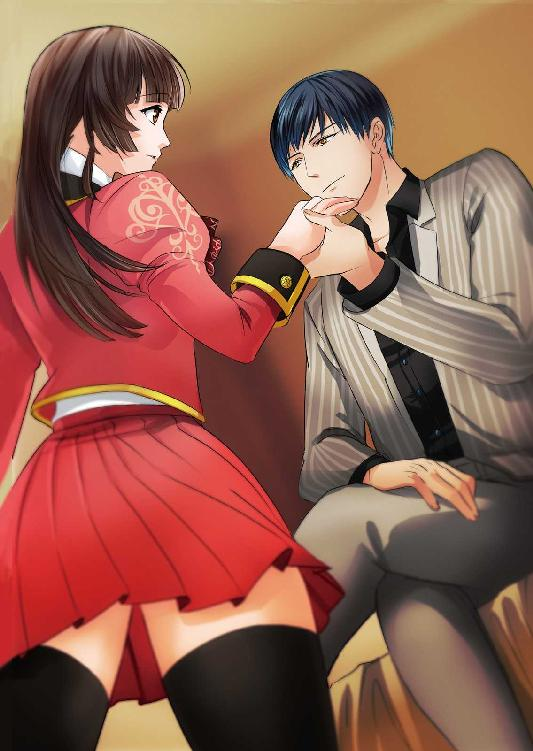
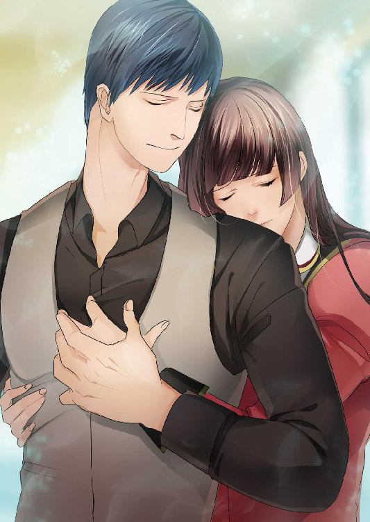

| あやかしの花嫁～あなたに捧げる恋～ (ディープラブ文庫) | |
| 森田りょう & Ｆａｃｔ | |
| (2015) | |
あやかしの花嫁
～あなたに捧げる恋～
森田りょう
Ｆａｃｔ
本作品の全部または一部を無断で複製、転載、配信、送信したり、ホームページ上に転載することを禁止します。また、本作品の内容を無断で改変、改ざん等を行うことも禁止します。
本作品購入時にご承諾いただいた規約により、有償・無償にかかわらず本作品を第三者に譲渡することはできません。
本作品を示すサムネイルなどのイメージ画像は、再ダウンロード時に予告なく変更される場合があります。
本作品は縦書きでレイアウトされています。
また、ご覧になるリーディングシステムにより、表示の差が認められることがあります。
序章
──幼き頃に妖怪の群をみた。今思うと、それは百鬼夜行という妖怪や鬼といった類のものが群をなして、夜な夜な道を歩くという恐ろしいもの。それを見た者は死ぬとさえ言われている。そう言い伝えられているが、定かではない。だって、わたしは生きているのだから。
十年後、目の前に男が現れるまで気付かなかった。わたしの命があと一週間で尽きるということを......。
「京野 都、お前を嫁にもらいにきた」
それと同時にわたしは妖怪の嫁になるということも知った。
しゃんしゃん......しゃん。鐘の音が聞こえてきた。
最初に異変に気づいたのは、しゃんしゃんという鐘の音だった。寝ぼけ眼の目を擦って、窓の外を見てみると、青白い光とともに無数の妖怪が目の前をわいわいと列をなして歩いていた。
目を疑った。この世のものとは思えない異形の者たちが歩いているのだから。
霊感はないといって等しい。気配を軽く感じる程度はあったのだが、こんなにもはっきりとみたのは初めてだった。
声を出してはいけないと思った。目の前の妖怪との距離は数メートル。好奇心旺盛なのは子供の特権。窓からのぞいている気配に気づく輩もいるだろう。ずっと目を離せないでいた。ほんの一秒さえも、目の前の不思議な出来事に釘づけになっていたのだ。
どれくらいの時が経ったのかわからない。その群の最後尾うっすらと見えた。そのうちの一人、いや、一匹の妖怪と目が合った。黒い闇で覆われたような人の姿なのか獣の姿なのかわからない妖怪は、じっとこちらを向いている。目があったと認識した。冷や汗がこめかみを通過して、背筋が一瞬のうちにして凍りついた。慌ててその場にしゃがみ込み、体を丸めた。その瞬間、意識がふっと途絶えて、気が付けば朝になっていた。
それから三日三晩、高熱に魘された。
母親は何軒も医者につれて行ってくれたが、原因はわからない。小児科、内科、総合病院の外来にまで足を運んであらゆる医者に診てもらった。けれども、原因不明との答えが返ってくるだけだった。
どうしたものかと悩んでいたある日、目の前にぼんやりとした光が現れた。黒い......時折赤くうごめく球体は熱で魘される女の前に落ちてきた。
「......あ、あ......」
声にならない声が響く。球体は、ゆっくりとその姿を表してきた。虎のような体に猿のような顔、爪は尖っており、大きな獣は一瞬にして消えて、再び黒い影がゆらりと揺れ動いた。今度は人の形をしている。そして、じわじわと探るように近づいてくるその影は、都の顔に近づいた。
『生きたいか？』
最初は空耳だと思った。だけど直接脳内に響く声は目の前にいる影から発せられたものだと分かった。
『生きたいか？』
再び声がきこえた。都は力を振り絞って、小さく頷いた。
『もっと願え。生きたければ、懇願しろ。さすれば......命を救ってやろう』
「生き......たい」
都の言葉を聞いた黒い影は、ふっと笑みを見せたように思えた。そして、うっすらとした記憶の中、声がきこえた。
『......年後、......えにくる』
「え？ な......に？ きこえな......い」
そのまま、ふらりと黒い影は上下に揺れる。瞬間、ぐっと都の唇の方に近づいて、何かが体の中に入ってきた！
パンッという音と共に黒い影は一瞬にして消えた。
何が起こったのかわからない。静まり返る部屋。身動きのとれなかった都は、目を見開きながらじっと天井を見つめていた。
──今のは......夢？
自分の息しか聞こえない。荒い息は、まるで雪のように儚く消えゆく。
夢なのか、現なのか。わからぬまま、十年の月日が流れた。
一 朱い刻印
教室から吹き抜ける風が、気持ちいい。青い空が見える窓際の席は特等席だ。二十歳の誕生日を一週間後に控えた大学生の都は、平凡な日常ではあるがとても有意義な楽しい生活を送っていた。スポーツ万能、成績優秀、友達にも恵まれ、順風満帆な日々。彼氏いない歴=自分の生きてきた年数なのだが、それはそれでよしと思っている。
──いつか王子様が......って、曲のタイトルだけど、来てくれないかなあ？
そう思いながら、この日もいつものように男友達の神戸心と二人で大学から駅まで向かい歩いていた。サッカー部の心は爽やかな容姿でとても人気がある。身長はそんなに高くはないが、整った顔に話しやすい性格のため、女の子達がグラウンドでいつも騒いでいる。髪型はアシンメトリーで左右対称。今時のオシャレな男子大学生だ。
「なあ、ミヤ」
「なに？」
歩くスピードを緩めて、都は心に顔を向ける。すぐに返答すると思っていたが、なかなか話を始めない心は、指で頭を搔いたり、鞄の中を何度も確認したりと、落ち着きがない。
「なによ？ どうしたの？」
都の二回目の呼びかけに、渋々心は口を開いた。
「お前......さ、もうすぐ誕生日だろ？ なんか予定あんの？」
「へ？ ないよー。そんなの」
「......彼氏と予定とか......？」
「ないない。そんなの、心が一番よく知ってんじゃん！ 彼氏なんて、今の今までできたことないし」
「なら、さ......、お前の誕生日前日、どっか行かない？ 二人でさ。ちょうど、来週の土曜日だろ？ 十二時きっかりにさ......一緒にいたいんだ」
心の言葉を聞いて、都は歩く足を止めた。立ち止ったまま驚いて目を丸くさせた都は、もう一度心に尋ねる。
「え？ わたしとっ？ ちょっと、待って。いきなりそう言われても......」
「俺さ......ミヤのことが好きなんだ」
どくんと、心臓が呻る。全身の血が沸騰しているかのように、真ん中に集まっていく感覚。熱い。心臓が焼けるように熱い。
「......っ......う」
思わずその場にしゃがみ込んだ。アスファルトに手をついて、痛みに耐える。
「ミヤ！ 大丈夫かっ？」
慌てて駆け寄る心に、都は冷や汗をかきながらも笑みを向けた。
「だ......いじょう......ぶ。しばらくしたら......治まるから」
「でも......」
言いかけた心の心配をよそに、それすらもうっとうしいほど、都は何も答えられない。下唇を嚙みしめてぐっと痛みに耐えるしかないのだ。
心は都を道端の花壇のブロックに座らせると、自販機でペットボトルの水を購入して手渡した。水を一口飲んだ都は息をゆっくりと吐き出しながら深呼吸を繰り返す。
「落ち着いた？」
心の言葉に都はそっと頷き、「平気」と笑みを零した。
「一カ月くらい前から、たまに胸がギュッて痛くなるんだよね」
「あー、たまに俺もなる。けど、しばらくしたら治るってやつだろ？」
「うん。だから......様子見てるんだけど......」
日に日に痛みが増してきていることは、心には黙っていた。そんなことを言ったら、きっと彼は心配する。
「あ、あのね、心。さっきの返事なんだけど......」
「あー、あー、いい！ なんか都、疲れてそうだし......返事は......来週聞かせてよ」
「......うん」
モテ期到来かもしれない。
頰が赤く染まる。互いに染まった頰が赤すぎて、バカみたいに笑った。二十歳になる前のこの時期が、人生の中で一番楽しいかもしれない。都はそう思いながら、自宅へと戻った。
◇◇◇
「ただいまー」
ごく普通の一軒家。家族は都を入れて三人だ。父親はサラリーマン、母親は小さな会社で事務のパートをしている。
誰もいない家は真っ暗で、まだ誰ひとり帰ってきていなかった。
──いつもより遅く帰ってきたのに、お母さんも帰っていないなんて......。
そう思っていた都だったが、今朝、母親と父親は共に会社の飲み会ということで帰りが遅くなると言っていたのを思い出した。
──自分で作るしかないな。
冷蔵庫を開けると、何も食材はない。あるのは飲みかけの紙パックの牛乳と卵と納豆だけだった。母親はいつも仕事帰りにスーパーに寄って晩御飯の材料を買って帰るから、今日の分の食材はまったくないのだ。買いだめをしないタイプの母親だからか、冷蔵庫が満杯になった記憶なんてものはない。
とりあえず、牛乳を飲もう、と牛乳パックを手に取った瞬間、再び胸の激痛が都を襲った。
「ゥぐっ......」
床には牛乳パックが落ちて、中身の液体がとくとくと流れ出し水たまりのように溜まっていく。発作というものだろうか、痛みの間隔が狭まってきているようだ。
──さっき、胸が痛くなったのは何時だった？ 夕方の四時。今は六時。二時間の間隔......。
ゆっくりと痛みに耐えて、深呼吸を繰り返す。力を入れて焦っては余計に胸の痛みが増すことに気づいた。
「ほんと......何よ......これ」
最初は、ほんの少しチクリと胸が痛むだけだった。真ん中よりもほんのちょっと左側。次第に針を刺すように痛み出して、今では奥歯をぎりぎりと嚙みしめるほどに激痛が走る。息もできなくなる。意識を失いそうなほどになる。
「はあ......はあ......」
悶えた時間は五分程度。だけど、その間は地獄にいるような、拷問を受けているかのような長い苦しみが都を襲っている。
──やっぱり、病院に行くべきだよね。親に心配はかけたくない。幸い、今日は両親がいないし。それに、この時間なら近くの病院があいている。
都は一人頷いて、保険証を手に取り家を出た。
「異常がない？」
医者の診断に都は驚いた様子でもう一度尋ねてみた。
「ええ。どこも......エコーで見た限りでは異常は見当たらないです。後日、血液検査の結果がでますので、それによって今後の治療について考えてみましょう」
とりあえずは異常がないということで、薬も処方されずに家に帰ってきた。不服そうな表情の都は、そのまま自室のベッドへと寝転んだ。
淡いピンク色のカーペットにチェック柄のカーテン。シングルベッドに小さなテレビが置いてあって、いかにも女の子らしい雰囲気の部屋だ。一人娘ということだが、なんでも買い与える親ではないので、シンプルな部屋に仕上がっている。
電気のついていない部屋の天井を見つめながら、都は考える。
──どう考えてもおかしい。痛みは増しているし、苦しいのに。セカンドオピニオンをしたほうがいいのかな？
はあっと溜息をついたそのときだった。
「......っ......」
どくんと胸を杭で打たれたような痛みが走り出す。
「う......っ、あ......、噓......でしょ」
時計をちらりと見やる。時刻は夜の八時前。
──前回の発作から二時間も経っていない。さっきよりも間隔が狭まっている。
ベッドの上で悶え苦しみながら、何度も体を捩じる。ぐっとシーツを握りしめて下唇を嚙みしめる。
「異常がないって......言われたのに......っ、なによ、これ......苦しい......。誰か......」
言いながら、手を天井へと掲げる都。
「誰か......助けて......」
──誰でもいい。この苦しみから解放させてくれるなら、例え......幽霊でも悪魔でも妖怪でも......誰でも......。
そう願った瞬間、部屋の中が一瞬にして真っ暗になった。天井に伸ばした手に他人の感触がある。温もりがある......。
「苦しいか？」
声がきこえ、はっと目を見開いた。今、この家には誰もいないはずなのに、きこえたのは低い男の声。
「迎えにきた。俺の......」
握りしめられた手に、ふっと触れる柔らかい感触。
「花嫁」
窓の外からうっすらと月明かりに照らされた姿に都は驚いた。漆黒のような髪に、琥珀色の瞳が光っている。
──人......なの？
そう思いながらも、体の震えは止まらない。恐ろしいほどの威圧感で圧倒される。
──多分、人ではない。そう、この感覚はあのときと同じ。あの日、わたしが見た妖怪の気配だ。
姿を確認してやろうと、ベッドライトを灯した。姿形は人と変わらない。むしろ、顔は整い過ぎていて、芸能人なのかと疑うほど。モデルのような長身に無駄のない筋肉、パーフェクトだと言わんばかりの容姿に、都は目を疑った。
「あなた、妖......怪？」
「ああ。今は......ほぼ人間だが......」
「今は人間って、どういうこと......んぐっ......」
再び、心臓の痛みが増した。激痛が都を襲う。下唇を歯で引き千切りそうなほどに嚙みしめてしまっていた。見かねた男は「ちっ」と舌打ちをすると、都の体を包むこむように抱きしめた。
「とりあえず、応急処置だ」
「え？」
男の顔が近づく。そして、柔らかい感触が都の唇を塞いだのだ。
「んんっ──！」
唇と唇が重なった。こじ開けられた唇から、彼の舌が入ってきた。初めての感触に都の体がびくっと強ばる。目を見開いたまま、激しい口づけを与えられる。キスをする男の瞳と視線がぶつかった。ようやく離された唇と唇。ほっと一息つく間もなく、男は口を開いた。
「お前......キスするときぐらい、目ぇつぶれよ」
「あ、あ......わたしの......ファーストキス！」
「は？ お前初めてだったの？」
「は......初めてだったわよ！ それを突然っ......あんな......」
──あんなキス......。
思わず唇に指先を這わす。頰が赤い。心音も激しく動いている。
「治まったろ？」
目の前にいる男は足を組んでベッドの上に座った。妖艶な笑みを零して、都をじっと見つめる。
──そういえば、胸の痛みが消えた。
「痛く......ない」
──発作が治まった。いつもなら五分ほど続く発作が一分で治まるなんて......。

「あなた、いったい......何をしたの？ この心臓の痛みが何か知ってるの？」
都の問いかけに、男はそっぽを向いて無視をしている。
「ねえ、教えて。お願い！ 病院で調べてもらったけど、何も異常がないって......」
「異常がないのは当たり前だ」
「じゃあ、なに？ なんなのよ？」
都は男の正面に立つと、強く睨みつける、鋭い眼光が、男に突き刺さる。だが、その眼光を跳ね返すほどの男の視線に都は一瞬怯んでしまった。怯んだ都の手を摑んだ男は、口元の端を持ち上げてこう言った。
「京野都、お前を嫁にもらいにきた」
「え？」
驚いて呆然としたまま、都は言葉を見失った。
「え？ あの......、嫁......って、聞こえたような......」
「だから、嫁」
「誰が？」
「お前が、俺の、嫁」
「はあ？ 何言ってんの？」
都の言葉を聞くと、男は邪魔くさそうに口を尖らせた。おのれの指で自らの鎖骨をなぞり、服の裾に指を忍ばせる男。色気が部屋中に散らばったみたいだ。
「俺は久遠」
「く......おん？」
「十年前、助けてやった。お前の体のどっかに印があるはずだけど？」
「し......しるし？ わたしの体のどこかにっ？」
「そう、お前の体のどっかに」
にやりと口元の端を持ち上げて、「俺が調べてやろうか？」と尋ねた。くすくすとバカにしたような笑いに、都はムッとした表情で久遠という男を睨みつける。
「覚えてねぇの？」
久遠と都の瞳が重なり合う。
「百鬼夜行」
その一言で、どくんとまた心臓が騒ぎ始めた。全身の毛が逆立ったような感覚。血液が逆流するような、変な気分。
「お......ぼえて......ない」
「噓つけ」
──いいえ、違う。あれは夢。夢か現実か分からない、そんな出来事だったんだから。
「覚えているだろ？」
「覚えてない！ わたしは......」
「なら、なぜ俺が妖怪だと気付いた？」
言いながら、久遠はその場に立ち上がる。長身の彼は小さな都の体の数倍もあるように感じた。
「知っていたからだろ？ 妖怪の気配を。それに、十年前、俺はここでお前を助けた」
つつつっと、指が都の顎に触れ、そのまま喉元をおりていく。
「覚えてないのか？ ほら、こうしてお前に息を吹き込んだ。俺の妖気を全部......お前は飲み込んだ」
唇と唇の距離はほんの数センチ。キスをする寸前でぴたりと久遠の体は止まる。
「百鬼夜行を見た者は、数日のうちに死に至る。あのとき、あの行列の中で俺はお前と目が合った。数日後、お前の家に行くとお前は苦しんでいた。命の灯が消えかけていた。俺は......お前に尋ねた。生きたいか？ と」
都の目が左右に泳ぐ。
「たしかに......きこえた。そして、わたしは答えた......」
「生きたいって......俺に願ったよな？」
男の笑みがふと視界に入った。都は久遠の問いかけに戸惑いながらも頷いた。
「十年後、嫁として迎えにくるって言っただろ？」
「それは聞いてない！ 何よ、それ！」
「お前の中にある俺の妖力は十年で消える。心臓の痛みはそれが原因だ。二十歳になったその時点で、お前は死ぬ。死んだと同時に俺に妖力が戻ってくる」
「来週、わたしは死ぬ......の？」
「だから嫁にもらいにきたっつってんだろっ？ 俺の生気を注ぎ込めば、お前は死なない。ただし、定期的に摂取しないといけないけどな」
「......どうすればその......あなたの生気をもらえるの？ さっきみたいに......キス......とか？」
「さっきのは応急処置だ。俺は妖怪であって今は妖怪じゃねぇ。それは、お前に妖力を全て注ぎ込んだからだ。お前から妖力が戻ってこない限り、俺は妖怪に戻れない。だけど、僅かな妖力なら俺の中にもある。それはさっき口で与えてあげただろ。俺だって口から妖力を分け与えることは正直いって厳しいし、疲れる」
「だったら、どうやって？」
「ここ」
と、男が指をさしたのは、おのれの股間だった。都の顔が一気に真っ赤になる。
「は？ え？ それって......」
「交わり......あー、今の言葉でいうと、セックス」
久遠の言葉を聞いて、都の体は固まってしまった。思考もままならない。
「......それしか方法はないの？」
そう尋ねてみるも、久遠は「ない」と言うだけ。
「噓......でしょ？ わたし......わたし......」
「あれ？ あんた、男を知らねぇのか？」
久遠の言葉はやけに鋭くて、都の心をいとも簡単に壊していく。
「し......知ってるわよ！ 男なんて、腐るほどたくさん！」
そう声を荒げたそのとき、一階から母親の声が聞こえた。
「都？ 何を騒いでいるの？」
どうやら飲み会から帰って来たらしい。とんとん......と階段を上がる音がする。
「まあ、いいや。とりあえず、明日また来る。そのときまでに決めろ」
ふっと笑みを見せた久遠の体は黒い煙に包まれて、その場から一瞬にして消えてしまった。
しんと静まり返る部屋。またも夢ではないか？ と疑うようなほど。だけど......ほんの少し男の香りが残っていた。鼻腔が擽られるような甘い柑橘系の香りが、ふわりと漂っている。唇の感触を思い出す。おのれの唇にそっと触れた都はその場で目を瞑った。
◇◇◇
朝、小鳥の囀りの声で目が覚めた。いつもみたいな体の重さやだるさはなく、すこぶる調子がいいようだと、都は腕を伸ばしてみる。そういや、昨日から発作はない。まさか、久遠が口移しでくれた生気のおかげなのか？
都は制服に身を包んで家を出た。
「よう。今日は元気そうだな」
その声にハッとして顔を上げた都は、すぐさま目の前の男を睨みつけた。
「おかげ様でね」
「そりゃ、俺の妖力のおかげだろ」
久遠は優位な態度で都を見下ろす。長身の久遠に上から見下ろされると、体が震えてしまうほどだ。一種のトラウマかもしれない。きっと、子どもなりにあの恐ろしさを敏感に感じ、未だに体が覚えているのだろう。この男は危険だ──と。
「一週間くらいもつから。だから、発作はもう二十歳になるまでにはなんねぇと思うよ」
「じゃあ、次に発作がきたら......」
「だからそれまでに俺の生気を注ぎ込まなくちゃって言ってんだよ。俺の妖力は十年しか効かん」
「なら、もう一度いれてよ！ 久遠の妖力。そしたら、また十年間は生きられるんでしょ？」
「妖怪界の掟で同じ人間には妖力を十年分しか分け与えることができない。口から放出される妖力はお前には与えられない。言っただろ？ こっちもキツイんだ。僅かな妖力をお前に与えてしまったら、そのときは俺が死ぬかもしれない。だけど、ここから出す生気なら、いくらでも、分け与えてやれる」
「そこからって......」
「ああ、だから、セックスしかないと言ってるだろ？」
「ど......どれくらいもつの？ その......セックスをすれば......」
「え？ なんつった？ きこえねーよ」
久遠は不敵な笑みを浮かべ、都をからかう。
「こんな純真無垢な乙女に言わせるような言葉じゃないでしょっ！ さ......察してよ、バカ」
「はは、やっぱ処女なんじゃん」
久遠にからかわれた都は顔を真っ赤にさせて怒りだした。早足で駅へと向かう道を真っ直ぐに歩く。いつもより早いスピードに、太腿の筋肉が悲鳴を上げそうだ。
「あれ？ 怒ったの？ 都」
「......質問に対してちゃんと答えてくれないから怒ってるんです」
「たぶん......長くて一カ月。短くて二週間くらい？」
「たぶんって、なんですか？」
「俺も試したことがねぇんだよ」
「は？ 試したことがないって......どういうこと？」
「妖気を分け与えたのはお前が最初......いや、二人目かな」
「わたしが......二人目？ 最初の人は......？」
「......死んだ」
都は目を見開いた。驚いたから見開いたのではなく、久遠の表情がとても悲しそうに見えたから。それ以上なにも聞けなかった。同時に、何故、わたしなんか助けたんだろうって思ってしまった。
「もう少し......待っててくれる？」
ふと、都の落ち着いた声が久遠の鼓膜を掠めた。立ち止ると、都を見下ろす久遠。
「誕生日の前日、デートに誘われているの。初めては......その......わたしを好きな人に......あげたい......な、って」
──こんなことは言いたくないけど、恥ずかしくて今すぐ穴の中に隠れたいくらいだけど、ちゃんと久遠に分かってもらわなければいけないと思った。納得した上で、待ってもらわないといけない。
鞄を持つ手が震える。こんなことを他人の男に言うなんて......と、恥ずかしさでいっぱいの都は顔を上げることすらできずに、俯いたままだ。
「分かった。待ってやる。けど......二十歳になる前に俺の元に戻ってこい」
ぜったいに反対するだろうと思っていた都は、久遠の返事に正直驚いた。俯いていた顔が、ゆっくりと上がり彼の目を見つめる。
「......うん」
「俺の携帯番号」
手渡されたメモ用紙に記されていたのは、久遠の携帯番号だった。
「妖怪も携帯電話とか持つんだ」
「ああ、時代にのらなければ生きていけないんだよ、妖怪は」
本当に妖怪なのかと疑うほどに、久遠はビジュアル的には完璧で人にかわりない。唇の端を持ち上げて笑みを零す彼の姿に、一瞬だけドキッとした。そう、一瞬だけ。そんな気持ちを隠しながら、都はメモ用紙を鞄にそっとしまった。
◇◇◇
「昨日は大丈夫だった？」
伏せっていた顔を上げると、目の前に心の顔があった。都は驚いて「わっ」と声を上げるが、すぐさま口を覆って周りに迷惑をかけていないか確認した。
「ずっとさ、ぼーっとしてるけど、昼飯食わないの？」
「え？ ああ、食べる！ 食べるよー」
「じゃあ、一緒に飯食おうよ」
心に誘われて、キャンパス内の中庭でお弁当を食べることにした。
「ちょうどナオちゃんに会ってさ、ミヤがまだ教室で寝てるっつってたから、誘ってみた」
「いつも直子と食べてるからねー。てか、直子も起こしてくれたらいいのにさー。勝手に食堂行っちゃって」
「よかった。一緒に食べてくれて。昨日の今日だからさ......その......返事を......」
ドキッとした都は、持っていた箸を落としそうになった。
「デートのことなんだけど......前日なら大丈夫。ただ、時間またいじゃうとダメなの......」
「それくらい、いいじゃん」
「親がダメだって。うち、すごく門限厳しくて」
「そっかー。なら、仕方ないなあ」
「うん、ごめん」
そう言って俯いた瞬間、心の顔が近づいてきた。「え？」と驚いて、顔を上げたが、すぐさま逸らしてしまう都。
「......ダメ？ 付き合ってくれるんだろ？」
「それは、まだ......考えさせて」
──これから久遠と一カ月に一度は体の関係を持たなくちゃいけないというのに、彼氏なんて作れないよ。浮気になってしまう。
◇◇◇
「彼氏とセックスした？」
翌日も、そのまた翌日も久遠は毎日都の家に通った。まるで、監視をしているようで、都は少しだけ疎ましく思った。
──こう、毎日毎日来られたら、なんだか......いやだ。何故、久遠はわたしにこんなにも執着するのか？
「まだに決まってんでしょ！ そんな早くしたら、尻軽な女って思われるじゃない」
「でも、どっちみちそう思われるだろ？ それなら早いにこしたことはない」
「前日のデートでするんです」
「ああ、そうそう。それを聞こうと思ってたんだ。どこでデートすんだよ？」
久遠に対し、刺々しい言葉を発する都。
「教えない。自分で探れば？ 妖怪なら心の声とか聞こえたり、空を飛べたり、瞬間移動できたりするんでしょ？」
「お前、超能力者じゃねぇんだからよ。まあ、気を辿ってその場所に行くことはできる。その場から消えたりもな。それくらいの妖力は残っている。心の声はきこえないな。心の声を読み取ることができる《さとり》っていう妖怪ならいるが」
『あとこういうこともできる』
瞬間、頭の中で声が響いた。
「わっ」
驚いたまま、都は固まってしまった。
「今の声はお前にしか聞こえないし、直接お前の頭ン中に話かけてる。十年前もお前が魘されているときにやっただろ？ あれだよ、あれ」
「ほんとに......妖怪だったんだ」
「昔は空も飛べたけどな」
「空も......飛べるんだ？」
「今は妖力もほんの僅かしか残ってないし、ほぼ人間に近い」
言いながら久遠は空を見上げた。その横顔がとても切なくて、何も声をかけられない。黙ったままの都に、ふっと笑みを見せた久遠。
「何、黙ってんの？」
大きな掌でぐりぐりと都の頭を撫でつけた。
「なあ、もっとさ、真剣に考えろよ。人間っつーのはさ、人生短いだろ？ そんなに最初にセックスすることって大事なのか？ 誰でもいいだろ」
「大事よ」
久遠の手を振り払い、都は彼を鋭く睨みつける。そんな都に呆気を取られていた久遠だが、唇の端を持ち上げて見下したように笑った。
「昔なんてな、十四で親の決めた男に嫁いで、逆らえずに一生、奴隷暮らしだ。好きな男と結ばれたい？ ばっかじゃねぇの？ 甘いんだよ。お前の考えは、甘ったるすぎるくらい」
ちっと舌打ちを鳴らして、そっぽを向く。苛立っているのか、ポケットから煙草を取り出して乱暴に火を点けた。
「久遠は......」
そんな久遠を見つめて、都は声を震わせながら言葉を紡ぐ。
「久遠は妖怪だし、長く生きれるんでしょ？ 人間とは違う。人が人を好きな気持ちとかもきっとわからないんだよね。エッチすることがどれだけ大事かとか、そんなことすらわからないんだよね。妖怪に、人間の気持ちなんてわかるわけないじゃん！ 何をえらそうに......」
「言いたいことはそれだけか？」
低い声が聞こえた。氷のような冷たい言葉が都の心に響いた。体が固まる。久遠の吐き出した煙が、空へ一直線に昇っていく。久遠はそんな煙を見つめ、小さく呟いた。
「俺にだって......愛した女くらいいる」
都の目が見開いた。久遠の表情がとても悲しく、辛そうで、目が離せない。
「人間の女だった。お前みたいに気の強い女......」
鼻で笑って、久遠はその場を去った。消えた久遠の姿を追いかけようと、都は一歩前に体を乗り出したが、一瞬で消えた彼の姿を見つけることは不可能だ。時が止まったように、しんとしたその場から久遠の香りがほんの少し漂っていた。
◇◇◇
あれから久遠の姿はない。もう、わたしのことなんてどうでもいいんだろう。そう思っていた都はデートの待ち合わせ場所にいた。誕生日前日の土曜日。遊園地の入口で心を待っていた。千鳥柄の可愛いワンピースに身を包んで、いつもより少しオシャレをして、化粧もして......結ばれる予定。だけど、付き合うとかの返事はしない。久遠とのこともあるから、そんな二股のような関係はしたくないと自分のエゴで、決めてしまった。
「ミヤ！」
駆け足でこちらにやって来る心の姿を見つけた。
「ごめん。ちょっと遅れた」
「ううん、大丈夫。わたしも今、来たところだから」
都がそう言うと、心ははにかんだように照れて笑う。「付き合っているような会話だな」って真っ赤になって幸せそうに笑みを見せる。都は胸が締め付けられた。利用しているみたいで、心苦しい。いや、今から利用するくせに、何を考えているのかとかぶりを振る。
──わたしを好きでいてくれる人と結ばれたいって決めたんだから。
なのに、久遠の姿ばかりが浮かぶのは何故だろう。久遠には過去に愛した人がいる。それを思うだけで、胸が痛むのは何故だろう。
「ミヤ？ どうかしたか？」
「なんでもない。行こう、心！」
ジェットコースターにコーヒーカップ、お化け屋敷にメリーゴーランド。フリーパスでとにかく色々な乗り物に乗って遊んだ。
夕日も沈みかけた頃、最後に観覧車に乗ることになった。遊園地の名物でもある大観覧車。夜の景色が一望できて、カップルにとっては定番の観覧車だ。扉を係の人が開けている時間は短い。先に心が乗って、その後に続いて都が中へと入った。正面に座ってしまったことで、しまったと都は思った。
──こういう場合は隣に座るべきだった。
観覧車の個室の中は、意外と狭くてほんのちょっとの風で揺れてしまう。何も話さない二人。言葉を見失う。それでも、この沈黙が耐えられず、都は口を開いた。
「あの......今日、楽しかったね」
「ああ、楽しかったな」
爽やかな心の横顔が、ほんの少し曇っているかのように見えた。
「どうかした？」
「いや......あのさ......そっち......行っていい？」
心の突然の問いかけに驚いた都。頰を赤く染めて一度だけ頷いた。ゆっくりと心は移動して、都の隣に座った。
「ど......どうしたの？ 急に......」
「急にでもないよ。もうすぐ帰らないと......って思ったら、もう少しミヤと一緒にいたいなって思って......」
瞬間、体がびくりと動いた。心の手が都の手を握ったからだ。心の温かさが伝わる。とくんとくんと心音がきこえる。
「こ......ころ......」
「ミヤ......」
心の唇が近づいてくる。ゆっくりと......スローモーションのようにゆっくり。
瞳を閉じて、心の唇を待つ。そのとき、携帯電話の着信が鳴った。二人、はっとして都の鞄に視線を落とした。音ではなくバイブレーションにしている都の携帯電話は振動している。
「ご......ごめんなさい」と心の体を押し返して、都は鞄の中を漁り携帯電話を手に取った。ディスプレイには久遠の名前が映し出されていた。胸が締め付けられた。緊張と怖さからなのかは分からないが、都の体はぴたりと静止した。震える手で、通話ボタンを押す。
「も......もしもし」
『おい、もう時間がねえぞ』
電波の向こうの久遠の声は若干焦っていた。心に聞こえないように、片手で口元を隠して小さな声で答える都。
「......わかってる」
『早めに済ませろ』
「そ......そんな言い方しなくたって......っ」
義務的な言葉に都はムッとしたが、次の言葉でそれはすぐさま消え去った。
『......近くで待ってる』
低い声は、都の体を突き抜けた。体全部に浸透するように、その声はじんわりと沁み込んでいく。声なんて、もう出ない。
──なんで、この人は......こういうときに......余計なことを言ってくれるんだろう。そんなこと言われたら......言われたら......待ってるとか言われたら......。
「ばか」
『は？ ちょ......おい、みや......』
ブチッと通話を切った。自分でも何故電話を切ったかわからない。
──なんで、「ばか」なんて言ったんだろう。
それの答えすらも分からない。下唇を嚙みしめて項垂れていたら、いつの間にかてっぺんを通り過ぎて地上に近づいていた。
「もう......お終いだね」
呟いた心の言葉に「ごめんなさい」と小さく反応した。せっかくのデートなのに......なんだか空回りしてばかりだ。
観覧車を出てから、二人何も話さなかった。なんとかして言葉を探そうとしたが、見つからない。心は唇を真一文字にして、何も話さない。気まずい空気が流れだしている。
──わたしが悪い。せっかくの心のもてなしを無駄にした。
拳を握りしめた都は覚悟を決めると、心の手を摑む。強く、ギュッと摑む。
「ミヤ？」
「心......あのね」
どきんどきんと、心臓が忙しなく動いている。自分から誘うなんて、緊張して声が震える。
「もう少し......一緒に......」
そう言葉を紡いだ瞬間、衝撃的な痛みが全身を駆け巡った。声すらも出せずに、膝から崩れ落ちる都。
「ミヤ？ え、おい......またっ？」
心は、都の体を慌てて受け止めるが、意識の失った人間の体は想像以上に重く、心の足はぐしゃりと崩れてその場にしゃがみ込んでしまった。都は胸許の衣服を強く摑んでいる。その手は小刻みに痙攣しているかのように見えた。この間の発作よりもヤバイと感じた心は、周りを見渡しながら、その場にいる人に助けを求めようと考えた。
「そうだ、救急車......」
心が呟いたそのとき、いきなり目の前に現れた男が都の名を叫んだ。
「都！」
その男の声に目をうっすらと開いた都。
「く......お、ん？」
蚊の鳴くような声が聞こえた。久遠はすっとしゃがんで、都の脈を計った。
「あんた......医者なのか？」
心は棘のある言い方で久遠を睨みつけた。
──こいつ、急に現れやがった。いつのまに？
そう、目の前の久遠に疑いながらも、都の体を守るように腕に力を入れた心。
「貴様じゃこいつを助けられない」
「は？ お前、なに言ってんだよ？」
貸せと言わんばかりに、久遠は心の腕の中から都を奪い取ると膝の裏と背中に手を回して抱きかかえた。そのまま、心に背を向けて都を連れて角を曲がり消え去る久遠。
「おいっ、待てよ！」
追いかけながら、角を曲がるとそこには誰もいない。
「......っ......」
目を見開く心。足を止め、その場に立ち止まる。誰も隠れる場所なんてない、だだっ広い広場がそこには広がっていた。
──一瞬で消えた？ そんな馬鹿な......。
不思議に思い、しばらくの間、心はその場に立ち尽くしていた。
◇◇◇
雨の音──誰かの声──......
「......やこ、都！」
うっすらと瞳を開けてみた。
「ここ......は？」
「俺んちだ。お前の気が乱れたから駆け付けた」
「心......は？」
「......あいつと一緒にいたお前を奪ってきたから、俺は知らない」
「なんで......そんなこと......」
布団に横になっていた体を起こしながら、都は声を荒げた。
「次、発作が起きたら間違いなくお前は死ぬんだぞっ？」
「それでもっ......」
「いいとか言うなよ？ それでもいいとか言うな！ 生きたくてもな、この世には生きられない奴だっているんだよ！」
久遠の言葉に、都は黙ってしまった。久遠の言う通りだと思う。でも、なんで......なんで......。
「なんで、十年前......わたしなんかを......助けた......の？」
都がそう言うと、久遠は何も答えられなかった。目を見開いて、じっと見据える瞳に動揺の色は隠せない。自身でさえも答えが見つからないというのか？
しばらく静寂な時間が漂った。久遠はふっと息を吐いて、都を抱きかかえた。
「見捨てたほうがよかったか？」
低い声が、体にびりびりと響くようだ。
「自分でも分からねぇ。だからもう一度、お前に会ってみたかった。会ったら......命を助けたら何か分かるんじゃないかって思って......お前を助けたこと......偶然じゃなくて、必然なのかって......確かめたくて」
久遠の瞳は、普段会うときに見られる黒曜石のような瞳ではなく、琥珀色をしていた。綺麗なその瞳に見つめられると、動けない。
「久遠......」
そう息を飲み込んだ瞬間、ふっとひきつけを起こした都。体ががくがくと震えて、小刻みに痙攣する。心臓を思いきり握りしめられたような痛みが都を悶えさせた。
「っ......うっ......」
苦しむ都の体を抱きかかえ、名を叫ぶ久遠に焦りの色が見え始める。
「くそっ、やべえ！ 都っ、おい！ もう時間がない。やるぞ？」
「や......だ、いや......」
「いやとか言ってる場合じゃねえ！ 死んでもいいのかっ？ 俺の生気を体に取り入れるだけで生き長らえるんだぞ」
もう、すでに声すらも発せないほどに都は衰弱していた。死期が近い。あと、数十分、いや、数分で尽きる。命の点滅が消えかかっている。
「責任は俺がとる。俺が都を生かしたんだ」
久遠は都の唇におのれの唇を重ねると、すうっと息を吹き込んだ。
──これは......久遠の妖気？
遠のく意識の中、都の体の中に力が入ってくる。次第に意識がはっきりしてきて、胸の痛みも治まってきた。
「もう......妖力は少ないんじゃ......」
「ああ、あんまり効かねぇかもしれない。だけど、数分はこれでお前の痛みもやわらぐだろ？」
──口から与えるのは自分自身でもキツイって......言ったくせに。もう、委ねてしまってもいいかもしれない。久遠になら......。
都は何も語らない。少し考えた後、近づいてきた久遠の首許にしがみついた。そんな都の行動に驚いたのか、一瞬、体が固まってしまった久遠。行き場のない空を摑むその手は、ゆっくりと下りて都の背中をそっと抱きしめた。
「優しくしてやる。もう誰も......死なせねぇ」
鼓膜に触れるその声に、都の戸惑いはもうないに等しい。互いに唇を寄せ合って、深く口づける。舌先を絡めて、久遠は都の口内を隅々まで探った。
「ゥ......あ、久遠......息......できな......」
「俺の呼吸に合わせろよ」
言いながら、久遠は再び舌を絡め合わせた。歯の裏側も綺麗に舐め取るくらいに、激しく丁寧に......。
そのまま、都の衣服をゆっくりと剝ぎ取る。恥ずかしさで隠す素振りを見せるが、すぐさま久遠の手によって阻止された。手首を摑まれ、上から見下ろされる。見つめられるだけでじんと体の奥深くが熱くなる。
「ほら、印があった」
「え？ どこ？」
驚いて、都はおのれの胸を見るが、それがどこかはわからない。下着を身に着けているせいもあるだろう。そう思っていると、久遠の顔が近づいてきて、下着の丸みを帯びた部分に歯と歯を立ててずらしてきた。狂犬のような眼差しで、見上げられる。妖艶な琥珀色の瞳が色気を醸し出しているようだ。胸の谷間に顔を埋めた久遠は、露になった乳房の側面を舐めた。
「ひっ......」
声が裏返る。ざらついた舌が都の肌をとかしていく。さらに今度は谷間も舐められた。
「ここ。今、舐めたとこ。お前から見たら左側の谷間に近いほう。乳首から谷間側に三センチほど離れているところだ。うっすらと光っている。もうあまり時間がないってことだ」
印は花びらが浮かんでいるような赤をしていて、光っていた。そこまで強烈な光じゃないが、豆電球のように淡く浮かんでいる。
「これが光ると、お前の体が俺を欲しているということだ」
乳房に唇を近づけて久遠は小さく呟いた。そして、今度は胸の尖端を軽く口の中に含んだ。
「......っ......ァ」
舌でころころと転がされて、乳首の形が変わっていくのがわかる。その度に、強い衝撃が都を襲った。
感じる。舌のぬめった感触が、胸の先に触れるたびに、体が反応している。
「ひっ......」
尖端部分を思いきり吸われて、都は声を上げた。そのまま、久遠の手は下肢へと伸びて下着の上から指を這わす。くにくにと捏ねられて、ソコはじんわりと湿り気を帯びてきた。
「何？ 怖い？ 心配すんな。一応人間の体だし、性器の構造も同じだ」
言いながら、久遠は都の手を取っておのれの性器に触れさせた。
「な？ 同じだろ？」
「そ......そんなこと言われても、男の人のなんて触ったことないし！」
カッと顔が真っ赤になり、そっぽを向く都。そんな都の姿を見て、ふっと笑みを零した久遠は「わりい」と呟いて、「続きをしよう」と言った。
怖くて力が入る都の体を抱きしめて、久遠はゆっくりと彼女の下着を剝ぎ取った。一糸纏わぬ姿になった都は久遠にされるがままだ。そのまま足を開ける。
「え？ ちょ......と、久遠っ？ なにするの......っ？」
「何って、舐めるんだよ。お前が感じなきゃ入れられないだろ？ それともなにか？ 無理矢理突っ込んでもいいっての？ 優しくしてほしいんだろ？」
久遠の言葉に都は黙ったままだ。
──まだ、あいつの方がいいのだろうか？
そんな彼女の姿を見つめ、舌打ちをした久遠は布団の近くにあったネクタイを摑むと、都の目を覆った。
「くお......んっ？ これじゃあ見えないっ......」
「これだと俺が見えないだろ？ あいつの姿でも思い浮かべとけ。あいつに抱かれているとでも思っとけ」
──真っ暗だ。何も見えない。それだけに、余計に感じてしまう。久遠の声、吐息、そして、触れる温もりがわたしを包み込む。
「これだと余計に......」
感じてしまうなんて、言えない。
「足、開けろよ」
都は覚悟を決めたようにゆっくりと足を開いた。何をするかもわからない。久遠の行動が読み取れない。初めて男の人と肌を重ねることがこんなにも怖いなんて......。
久遠は都の下肢に顔を埋めた。目を伏せて、舌先で窪みを舐めとると彼女の体がぴくりと動いた。
「ァ......や......」
じわりと舐める度に蜜が溢れてくる。見えない分、久遠の舌を感じすぎて、体が異様に熱くなってきた。水音が奏でられて、都の羞恥は降り積もった雪のように積もっていく。ぷっくりと膨れた蕾を唇で吸いながら、久遠は窪みに指を捩じ込んだ。
「ひっ......やだ、くお......ん」
「力抜け」
視界が塞がれて、音が脳裏に零れ落ちる。初めての快感と痛みに都は悶え苦しんだ。第一関節から第二関節、そして指の根本まで飲み込まれたそれを何度も出し入れさせ、都の感じる部分を探る久遠。
「狭いな。感じているのか？」
「......っ......」
都は何も言わず、手で顔を覆い尽くしている。ぐちゅぐちゅと搔き混ぜられる音を聞かないようにしているようだ。
「おい、聞けって！」
思わず久遠は都の手を摑んでしまった。目隠しをしていたネクタイがずれて、目と目が合う。涙を流す都の表情を見てしまった久遠は、言葉を失った。
「嫌......なのか？ さっさと済ませたいのか？」
なにも答えない都に、久遠はさらに言葉を紡ぐ。
「もう、十分濡れてるから大丈夫だろう。時間がない。都、覚悟を決めろ」
「分かって......る」
それでも、ひきつけをおこすんじゃないかってほど泣きじゃくっている都は、押し入ってくる久遠を受け止めた。
「う......ァ、ああ、っ」
体が真っ二つに裂けるような痛みが都を襲った。ずずずっと久遠は腰を沈めて都の中をゆっくりと搔き混ぜる。時折、腰の動きを止めては都の様子を窺った。だが、初めての異物が入ってきたその道は、久遠の性器に強く張り付いているようだった。
「お前っ......俺の引き千切る気かよっ......」
──思っていたよりヤバイ。それに、セックスなんて久しぶりだ。
久遠は思いながら、体を前のめりに倒してしまう。
「......っ......都」
「くお......ん？」
ふっと、顔を寄せた。月明かりが射す部屋は、互いの表情を隠すことなんてできないほどに明るかった。
「み......やこ」
唇が重なった。貪りあうように、何度も角度を変えて互いの唇を食む。そのまま腰を打ち付けて、久遠は果てを見た。命が震える。体の中にエナジーが溢れていくのが分かる。
「あ、あ......」
──温かい。何かが流れてくるのが分かる。これが、もしかして久遠の......生気？
そのまま、都は気を失ってしまった。遠のく記憶の中で、久遠の温もりを感じながら......。
二 陽炎の宴
色のない空が一瞬で、鮮やかな空へと変わった。都はふと、目を閉じて風を感じる。この間、妖怪の久遠と交わった。そのおかげで、都の寿命は延命された。だけども、それはほんの応急処置でしかない。それでも、求めるしかないのだ。生きると決めたからには、一生、久遠のエナジーを定期的に摂取しなければいけない。
「それが、なんっでセックスってわけっ？」
「しょうがねぇじゃん。俺の妖気はお前に吸い尽くされたんだから、残ってねぇんだよ」
言いながら、久遠は煙草に火を点けて煙を吐き出した。
「歩き煙草しない！ 本当に妖怪なんだか、人間なんだか......」
「お前が死ねば、俺の妖気は戻ってくるんだけどな」
「死なないわよ」
「浮き出てんぞ、印」
赤くうっすらと浮き出てきた刻印は、十年前久遠の妖気を体に取り入れたからついたものらしい。久遠の妖気は十年間しか効かなくて、その後は交わりで生気を奪うということなのだが、生気を摂取すると、刻印は肌に現れない。現れたということは生気を摂取しなければいけないということ。
「お前、もう生気いるわけ？ 早くねぇ？ この間ヤッたのって先週だったような......普通は早くて二週間、長くて一カ月くらいもつんだけどな」
「ヤッたとかそんな生々しいこと言わないでよ！ ......久遠の生気が薄いんじゃないの？」
「は？ お前、なに言ってんの？ 俺は大妖怪なんだ。そこらの低級な妖怪とはわけが違うんだ」
「大妖怪って......噓っぽい」
都の言葉にムッとした表情の久遠。それでも構わず都は言葉を紡ぐ。
「だって、わたしは久遠の妖力を使うところなんて見たことないんだもん。たしかに、心臓の痛みはなくなったし、赤い刻印は浮き出たり消えたりするから、信じてはいるんだけど......久遠が妖怪だなんて信じられないというか......」
──本当に人間らしいから、困る。
「お前はきっと俺の本当の姿を見たら、失神するんじゃねぇか？ それにこうして......触れることさえも嫌がるだろう」
言いながら、久遠は都の頰にそっと触れた。
「じゃあ、久遠はなんの妖怪なの？」
「俺？ 俺は......」
「久遠様」
突然、背後から呼び止められた。久遠の指が、ぴくりと動き、静止する。二人、声のしたほうへ振り返ると目の前には透き通るほどの白い肌をした綺麗な女の人が立っていた。
「紗雪？ どうした？」
「お話し中失礼します。玉緒様がお見えになりました」
紗雪と呼ばれるその女は、長い髪をはらりとさせながら深く久遠に礼をした。すごく色気のある紗雪は、大人のフェロモンを存分に放出しているようで、女の都ですらドキッとさせられたほどだ。
「玉緒か。わかった。すぐ行く」
そう言って、久遠は都に背を向ける。都に声もかけず、歩き出す久遠に紗雪が言葉を漏らした。
「あの、久遠様、あの方はよろしいんでしょうか？」
「え？ あ、ああ。道を聞かれただけだ」
久遠の他人行儀な態度にさすがの都も苛立った。
──はあ？ なによ、それ！ 道を聞かれただけ？ それよりも、セックスしてるほどの仲でしょうが！
「行くぞ、紗雪」
「はい」
そう言って、久遠は都の視線を気にすることもなく、紗雪と共に歩き出した。
久遠の態度に怒りを露にする都は、二人の後をこっそりついていくことにした。
『ついてくるなよ』
都が後をつけようと考えていたそのとき、声がきこえた。久遠だ。自分にしかきこえない声に、都は戸惑いながらも返答してみた。心の中で問いかけてみる。
──なんで？ どうして？
『どうしてもだ。ついてきたらまじで......』
──まじで、なによ？
そう伝えた瞬間、ぷつりと交信が途絶えた。その後、都がいくら語りかけても、久遠からの返答はない。一方的な久遠の態度と言葉に、都の怒りも頂点に達する。
──来るなと言われたら行くに決まってるでしょ！
困らせてやると豪語して、都は二人の後を追いかけた。
◇◇◇
駅から十五分ほど離れた大きな公園と川があるその場所にひっそりと店が佇んでいた。その店の中に二人は入っていく。
遠目から確認していた都はゆっくりとその店に近づいた。離れた場所からその店を観察する都はどうしようかと考えていた。店の近くを行ったり来たり。うろうろとしながら、これから覚悟を決めて店に近づこうとしたそのとき、背後から声をかけられた。
「あんた、その店になにか用でもあんの？」
ハッとして身構える。振り返ると目の前には、自分と同じ年くらいの男の子が立っていた。少しつり目の少年は、帽子を深く被り、首を傾げていた。
「さっきからずっとうろうろしてて、変質者みたいなんだけど」
「いや......あの......前々から、気になってたお店で......」
──ていうか、どういうお店かもまだわからないんだけど......。雑貨屋さん？ それともカフェ？ レストラン？
「へー。じゃあ、入ってみる？」
「え？」
「初めて入る店って、なんか入りにくいんじゃん？ 俺と一緒なら入りやすいっしょ？」
「え？ いや、あの......」
ぐいぐいと引っ張られるような雰囲気の少年に、都は困惑した表情で動揺している。
「俺は陣だ。あんたは？」
「わたしは......京野都......です」
「へ～、大学生？ それとも高校生？」
「あ、大学生です。興国大学に通ってて......」
陣はポケットに手を突っ込みながら、首を傾げた。
「興国大学って、けっこう遠いけど、なんでここまで？」
「わたしは......」
「それに、なんか......あんた、すげぇおかしな匂いがする」
すんっと、陣は都の首筋に鼻を摺り寄せてきた。鋭い瞳が都を射抜く。
陣はしばらく黙ったままでいたが、なにを考えたのか、すぐさま都の手首を摑んで引っ張り出した。
「まあ、いいや。来いよ」
「え？ ちょっと......陣くんっ？」
振りほどけないほどの力。陣は店の扉を勢いよく開けた。
「こんにちわー！」
陣の声に、店内の注目がこちらへ一気に降り注がれる。店内はそこまで広くもなく、カウンター席が五席でテーブル席が三席とこじんまりとした店だった。
──カフェ......だったんだ。
ようやく店の中を確認したことで、どのような店かわかった都。ふと、自分へ向けられる視線に気が付いた。
白いカッターシャツにギャルソンエプロンを腰に巻きつけた久遠がカウンターの奥にいた。
「み......っ」
都が現れたせいで驚いた久遠は、思わず名前を呼ぼうとしてしまい、慌てて口を手で覆った。焦りで手元のカップとカップが当たってしまい、カチャッと甲高い音が鳴ってしまう。動揺している久遠に声をかけようとしたそのとき、頭の中に声が聞こえてきた。
『他人のふりをしろ』
──え？ どういうこと？
都は久遠に返答する。会話は二人にしか聞こえない。久遠は慣れているからなのか、珈琲を注ぎながら、手を休めずすました顔で都に語りかけていた。都はこの頭に響く声が未だに慣れず、どうしても身構えてしまうのだ。そんな都の変化に気が付いたのか、端の方から声が聞こえた。
「誰だ？ 頭の中で会話をしておるのは？」
その言葉にハッと我に返り、久遠は都へのコンタクトを遮断した。冷や汗が落ちる。こめかみから顎にかけて、つーっと伝う汗の雫。
声を発したのは、腰までの長いストレートの髪をした、綺麗な女性だった。椅子から立ち上がったその女は綺麗を通り越して美しかった。透き通った肌に妖艶な切れ長の瞳。先ほどの紗雪も綺麗だったが、この女性はどこか華やかでオーラがある。
「内緒話など、ここでするならよそへ行け」
「あ、俺です。ごめんなさい......」
そう遠慮がちに手を上げたのは隣にいる陣だった。
「久遠さんにちょっと相談があって......。男同士の話というか......」
にっこりと陣は女に微笑む。
「そうか。それなら構わないが......」
女は都を見据えると椅子から立ち上がった。
「久遠、ご馳走様。わたくしはもう帰ります」
「ああ。また、いつでも来いよ」
お金をテーブルの上に置き、「お釣りはいいから」と久遠に告げる。顎を上げ、歩く姿も堂々たる態度に都は息をのんだ。先ほど睨まれてから、動けないでいたのだ。まるで、金縛りにあったかのように......。
微かに震える体をなんとかして抑えようと都はグッと拳を握りしめた。出入り口に立つ都の隣を女が通り過ぎる。すんと、女の鼻が少し動いた。
「あら、あなた。とてもいい香りがする」
陣と同じように、女は都の首筋の匂いを嗅いだ。目を見開く都。女の声にひやっとした。その場の空気が一瞬で変わったのがわかった。
「それじゃあ、また」
女は礼をして、店を後にした。
女が去った店には、都と久遠、そして陣と紗雪の四人だけ。
「あー怖かった。玉緒さん、やっぱりすげぇオーラがあるよ。俺、すっげー睨まれちゃったしー」
言いながら陣は目の前の椅子にどっと体を預けた。さっきの女は玉緒という名前らしい。
「それはそうと、久遠さん、なんで急に俺の頭ん中に？ 相談事があると玉緒さんに言えって......」
「ああ、急に悪かった、陣。サンキューな」
「いや、俺はいいっすけど......」
ちらりと陣は都の方を見つめ「もしかして、久遠さんと知り合いなの？」と尋ねた。なにか気になることがあったらしい。
「え？」
陣の問いかけに動揺してしまい、都は口を噤んだ。どう説明していいか久遠に助けを求め、視線を送る。他人のふりをしろと言うもんだから、どうすればいいのだろうか。そう思っているとふと目が合って、久遠はゆっくりと口を開いた。
「ちょっとした知り合いだ」
「へー、彼女っすか？」
にっと笑みを見せる陣は、口元の端を持ち上げて久遠に答えを求めた。
「違うよ」
そう、静かに返事をする。
「違うの？ 都ちゃん」
久遠の言葉を聞くと、陣は都の方を向いて目を輝かせた。返答を待っているようだ。都は渋々口を開く。
「え、ええ。まあ......ちょっとした......知り合いです」
たしかに、彼女でもなんでもない。けど、嫁になれと言ってきたのは久遠の方なのに......と、若干不満そうに頰を膨らませた。
「先ほど、道端で冷たくあしらわれていた方ですよね？ わたしはてっきり......久遠様の大事な人かと思いましたが」
「紗雪、お前はまた余計なことを......」
どうぞ、と都の目の前にお水を出し、「注文はなにに致しましょうか？」と紗雪は尋ねる。
「あの......では、アイスティーをお願いします」
「ミルクでしょうか？ レモンでしょうか？ それとも......」
「あ、ストレートでお願いしま......」
「今すぐ帰れ」
言葉を全て言う間もなく、久遠の言葉が遮った。鋭く尖ったような言葉に、店内は凍りついたような空気だ。一方的に冷たい言葉を浴びた都は、表情を曇らせた。
「いいじゃない！ ここはカフェでしょ？ そりゃ......わたしが勝手に後をつけてきたから、あんたが怒るのも無理ないけど......」
「命が惜しければ言うことを聞けって言ってんだよ」
久遠の妖気がぶわっと溢れ出た気がした。いくら今は人だとしても、その威圧感は半端がない。それは、そこにいる陣も紗雪も感じていた。人である都は体が固まって動けない。いや、ほんの一センチでも動いたら殺されそうなほどの空気だ。
「久遠さん！ なにもそこまで怒らなくても！」
場の空気をすぐさま変えたのは、陣だった。
「ね？ ほら、都ちゃん固まってる」
にっこりと久遠の目の前に手を翳して久遠を宥める陣。
「陣、さっさと制服に着替えて来い！ 交代の時間だろうが！」
久遠の言葉に都は尋ねた。
「え？ 陣くんここでバイトしてるの？」
「ああ、うん。かけもちでバイトしてんの。昼間は鳶で夜はここ。今日は昼間の仕事が休みだったから、夕方からのシフトに入ってたんだ」
二人のやりとりを見ながら、久遠はふっと笑みを零した。
「お前ら、やけに仲がいいな。いつ知り合ったんだ？」
「さっき。都ちゃんがうろうろしてたから。なあ？」
「え？ あ、うん」
「それに、そんなに早く帰らすこともねぇじゃん。だって、同類だろ？ 都ちゃん」
──同......類？
都は陣の言葉に首を傾げた。
「......都は人間だ。だから早く帰れって言ってんだ」
「え？ 噓。都ちゃん、人間なの？ だって、なんか......匂いが......混ざってる」
そう言って、陣は都を穴があくほどまじまじと見ていた。
「それなら......早く帰られたほうがいいですね。もうすぐ日が沈みます」
紗雪が言いながら、アイスティーを都の前にそっと置いた。綺麗な細長い指先に目がいってしまう。
──紗雪さんは久遠のバイト仲間だったのね。
そう、心のどこかで安心してしまった自分に気づく。我に返った都はかぶりを振った。
「あの！ もしかして......陣くんも紗雪さんも......人じゃ......ない？」
戸惑いがちにそう聞いてみると、陣は驚いたように目を丸くさせた。
「さっきの会話......わたしのことを人間って言ってたし」
「ここって......ＫＷＡＩカフェっていうの。まあ、巷じゃ妖怪カフェって言われている。看板見てない？ ちっちゃく妖怪の怪って書いてんだけど」
「見て......ない。ごめん」
「ぶはっ、都ちゃんって面白ぇー。妖怪の匂いも微かにするし......なんか変わってんねー。久遠さんの知り合いじゃなかったら、俺......喰っちゃってたかも」
にっこりと都の顔を覗きこんだ陣は、笑顔でそう言った。笑顔とは裏腹な言葉に、都の背筋が凍りつく。
「陣、冗談きついわよ。都さん、固まっちゃったじゃない」
「え？ あ、悪い」
紗雪に言われて、陣は都に謝った。
「都さん、日が暮れると闇の者は動き出します。この世は、人以外の者もいるのです。たくさん......見えないだけで。わたしたちのように人に化けることができれば、実態となり、人とこうして話すこともできますし、妖気も消しているので人と変わりなく過ごせます」
「ここは......昼間は普通のカフェだが日が暮れると人には見えなくなり、妖怪が屯するカフェへと変わる。だから夜に訪れる客は全て妖怪ということだ。お前が人間だと気付けば、狙ってくる。喰われても仕方ない。だから、さっさと帰れ」
紗雪の言葉に付け足すように、久遠は小さく呟いた。そのことを聞いた都は、少し考えた後、顔を上げた。
「アイスティー、飲んだら帰ります」
「勝手にしろ」
──冷たい。アイスティーのように、久遠の態度は最後まで冷たい。どうして、こんなにも冷たいのか？ ついてきたわたしが悪いんだけど......。
俯いて、都はアイスティーを飲み干した。そんな都の姿を見て、紗雪が口を開いた。
「久遠様、今から陣と交代ですよね？ 都様を送ってらっしゃったらどうでしょうか？ もう日も沈みかけて、危ないですし......」
「......わかってるっての。陣、交代」
そう言って、久遠はギャルソンエプロンを陣に投げつけた。「着替えてくる」と言い残し、カウンターの奥にある休憩室に向かった。
「あの、ここは久遠がマスターなんですか？」
「いえ、マスターは別にいます。ただ、かなりの高齢なので、最近はほとんど久遠様やわたしが店を任されております」
「へ～、そうなんだ」
紗雪は言いながら、都の飲み干したグラスを片づけた。
「紗雪さん達は......いったいどんな妖怪......なの？」
都の質問に、紗雪は少し戸惑ったが、正直に話をしてくれた。
「わたしは雪女です。陣は猫又」
「そうそう、化け猫っつーの？ 自由奔放なの」
「じゃあ......久遠は？」
「都ちゃん、久遠さんのこと知り合いなのにどんな妖怪だとか知らないの？ すごいんだって！ 千年以上生きてる大妖怪だぞ？ 俺なんかまだまだ四百年くらいしか生きてないガキんちょだし......」
「知らない。わたし、久遠のことなにも知らない」
「ていうか、久遠さんのことを呼び捨てにできるなんて、都ちゃんかマスターか、玉緒様、それに最高位の妖怪数匹......くらいだけだな」
「玉緒って......さっきの綺麗な人？ そう呼んでいたよね？」
「ああ、玉緒様は妖怪の中でも最高クラスの九尾の妖狐だよ。誰も逆らえない。本当にあの人は絶世の美女と言われるくらい美しくて......とても怖い妖怪だよ」
陣の言葉に、さっきの玉緒の冷たい視線を思い出す都。ぶるっと身震いをして、青ざめていく。考えただけで、震えあがる体はなにかを感じているのか？
「都ちゃん、大丈夫？」
「あ、うん。大丈夫」
都の返事にホッと安堵の表情を見せた陣は、再び口を開く。
「さっきの質問だけど......久遠さんは鵺っていう妖怪だ。それも、最高クラスの闇の属性の大妖怪......」
「陣......」
低い声に陣はハッと喉を詰まらせた。恐ろしいほどの威圧感が背後から伝わってくる。
「お前、べらべらしゃべりやがって......」
「久遠さん......すみませんっす」
「まあいい。後、頼むな」
「あ、はい。お疲れ様です！」
久遠は陣と紗雪に後を任せると、都へ視線を送った。顎をしゃくって、店から出ろという素振りを見せる。
──話すことも煩わしいってこと？ 邪魔くさいってこと？
「あの、紗雪さん、陣くん。ご馳走様でした。えっと......お金......」
「久遠様からすでに頂いておりますので、大丈夫ですよ」
笑顔を見せる紗雪の姿に、女でもある都ですら胸が高鳴った。そういや、雪女というものは男をたぶらかして凍らせるって聞いたことがある。でも、本当に綺麗な人だなあ。
「また、昼間に来てくださいね。土日もやっておりますので」
「待ってるからな！」
紗雪と陣に頭を下げて都は店を出た。辺りはもうすでに暗くなっていて、闇が目の前まで迫ってきているようだった。
「もう、来るなよ」
ぽつりと呟いた久遠の言葉に都は返事もしない。なんか、色々なことが起きすぎて、まだ頭の中が整理されないのだ。
「都？ おい、聞いてんのかっ......？」
腕を摑まれた瞬間、びくりと体が強ばった。木々がざわめいて、鳥たちが一斉に羽ばたいて、時間が止まった気がした。見つめ合う互いの瞳が濡れて、頰を染まらせたのは都のほうが先だった。
「はな......して」
「お前が来ないと言うまで離さない」
摑まれた肌からじわじわと久遠の体温が伝わってくる。汗ばむ肌にねっとりと、手のひらが吸い付くようだ。
「や......だ。約束した......もん。紗雪さんと陣くんも、また来てねって......言ってくれたもん」
心臓がどくどくと呻っているのがわかる。次第に息が激しくなって、苦しくなった。冷や汗が垂れて、都は久遠の体に寄りかかる。足許がおぼつかない。心臓の痛みは急激に増した。そんな都に気づいた久遠は都の胸許を指先でぐいっと引っ張った。露になる下着も指にかけて、引っ張った衣服の中を覗きこんだ久遠は口許の端を持ち上げた。
「見ろ、刻印が光っている。きっと、妖の気にやられたのだろう。時間が早まった」
言いながら、大きな木に都の体を押さえつけた。
「苦しいだろう？ 俺の生気を摂取しなければ、お前は死ぬ」
「く......久遠っ？」
「のこのこやってきた罰だ。俺の忠告を無視しやがって」
「だって、それは久遠が......」
──すごく冷たい態度で、綺麗な女の人と一緒にいなくなったから......。
都は唇を嚙みしめて、久遠の視線から逃げるように顔を背けた。
「喰われてもいいのか？ 頭からばりばりと喰らう妖怪もいる。内臓だけ、脳だけを抜き取って喰らう妖怪もいる。手足をもぎ取られて、逃げられないようにしてじっくりと喰らう者もいる。お前はどれで喰らわれたい？」
「どれも......やだ」
涙が溢れてきそうだ。目の前にいるこの人は、人ではない。れっきとした妖怪なんだ。ただ人の皮をかぶっているだけで......本物の妖怪。それも、大妖怪......。
──考えるだけで、体が震える。きっと、わたしが触れてはいけないような人──。
「おしおきだ」
久遠は言いながら、都を近くにあった公園の死角の場所に連れて行き、すぐさまスカートの中へと手を突っ込んだ。下着の上から、秘裂をなぞっていく。くにくにと動いて、時折指先に力を入れて柔らかな蕾をぐっと押さえつけた。
「ひっ......」
じんわりと快感が溢れ出していく。押し戻されて、ぷっくりと腫れあがった蕾は、再び指先で押さえつけられた。硬く尖ってきて、快感がさらに増した。今度は親指で、窪みを攻められる。押さえつけるだけで、くちゅりと水音が聞こえてきた。
「都、濡れてきた」
鼓膜に触れる久遠の低い声は都の羞恥を搔き立てる。
「久遠、やだっ......こんなところで......」
「お前が店に来ないと言えばやめてやる」
「ふっわ......ァ、あ......」
下着を引っ張られて、指先が侵入してきた。今度はじかに触れられる。もう、そこはぬるぬるとした愛液で溢れまくっていた。少し触られただけで、じんと子宮の奥が熱くなって、体が仰け反る。
「こう、じっくり攻めたらお前はどうなるんだろうな？」
ふっと笑みを見せた久遠の瞳が艶めいていて、ドキッと心臓が高鳴った。唇が寄せられて、重ねられる。ねっとりとした舌が絡んできて、息ができない。
「ふ......っあ、......んっ、ん......ん」
何度も角度を変えて、息をする暇も与えてくれない。久遠の指先が、ぐっと窪みの中に突き立てられた。
「はっ......んっあ......ああ」
指の付け根まで、一気に貫かれて、久遠の体に顔を埋めてしまった都。浅く息を吐き出しながら、しがみついて、突然与えられた快楽に悶えていた。
「や......、久遠......やめて」
「どうして？ すっげぇ吸い付いてる。お前のここが俺の指を......食っちまってる」
そして、久遠は都の表情を確かめるように、ゆっくりと指を上下に動かし始めた。
「あ、あ......」
「早く、俺のを入れないと......お前、死ぬぜ？」
にやりと唇を吊り上げて妖艶な笑みを零す久遠。苛め抜いて、酷くして、まるで調教されているみたい。
「さあ、どうする？ 都......」
ぐりぐりと奥を擦られて、都の体がびくびくと痙攣し始めた。
「ひっ......ァ、あ、ああ」
久遠の手のひらには、大量に都が零した雫が垂れ流れてきた。
「あーあ、びしょ濡れ」
言いながらも、指を動かす行動を止めない久遠。
「このまま......このまま、指だけでもいいんだけど、俺は」
久遠の指先がくの字に曲がって、都の中にある出っ張りをこりこりと引っ搔く。一番感じるところだと、体が正直に反応していく。もう、耐えられないところまできてしまった。
「......くお......ん」
「なに？」
「......して」
「きこえない」
顔を真っ赤にさせた都に近づいて、久遠は首を傾げた。
「ほら、早くしねぇと、お前死ぬって......」
都は久遠の首筋に顔を埋めた。ギュッと強く抱きしめて、久遠の肌に唇を寄せる。驚いた久遠は言葉を失った。都の手が久遠の性器に触れたからだ。
「お願っ......久遠、お願いっ......」
「都......っ......」
互いの唇が重なった。貪りあって、激しくキスを交わす二人。都の太腿を持ち上げて、腰を摺り寄せる久遠。尖った性器が、ずずずっと都の中に押し込まれていく。
「は......っ......ァ、ああ」
快感が広がって、再び痙攣を繰り返す都の体を久遠は抱きしめた。
「ばっか......締め付けんな......っ......」
「締めて......ないっ......」
都の片足を持ちながら、久遠は律動を繰り返す。垂れ流れる透明な液が都の太腿を伝った。
「んっ......ん......」
眉間に皺を寄せて目を瞑る都の頰を下から上へと舌で舐め上げた。ゆっくりと目を開く都の視線と視線がぶつかり合う。小さな唇から零れる吐息と喘ぎ。額と額を擦り合わせて、都の濡れた睫毛にそっとキスをした。
「くお......ん？」
優しいキスに驚く都。そんな都に気づいたのか、久遠は顔を背けて舌打ちをする。自分でも優しいキスを与えてしまったと感じたらしい。頰をうっすらと赤く染め、顔を背けたまま、乱暴に激しく腰を打ち付けた。
「や......やだ、久遠っ！ 激し......っい」
「激しくしねぇと......っ、おしおきになんねぇだろうがっ......」
「でも......さっきのキス......優しかった」
「あ......あれはっ......その、なんつーか......も、もう出すぞ」
はぐらかして、都の奥底を搔き混ぜる。
「う......っん、ァ......ああ」
「......出るっ......」
ぶるっと身震いをさせて、久遠は果てを見た。昂った感情が都の中に流れ込んでくる。持ち上げられた足は、ぴくぴくと痙攣を繰り返して、久遠にしがみついた腕は震えていた。
「......はァ......っ」
吐息が漏れる。行為を終えてほっとしたような、都の表情。そんな表情を一瞬で歪ませたいと思った。
ずんっと、一突き。
「ひっ......」
目を見開く都をよそに、もう一突き、彼女の奥へと再び膨れ始めた性器を擦りつける。
「やっ......久遠っ？」
ものの数分で、久遠のそこは硬くなり、長く尖った。
「一度だけじゃ......おしおきとは言わないだろ」
そう言って、今度は後ろから突き刺した。
「ああ、ァん......ん」
鼓膜に響く結合部がぶつかる音。
「き......こえちゃう......、音......」
「きかせてやれば？ お前の声と......音」
言いながら、舌を耳朶に差し込まれた。ギュッと体が縮まり、熱く蕩ける感覚。後ろから抱きしめられ、乳房の頂を指で摘まれた瞬間、都の体が仰け反った。
「う──っ、ァ」
唇を閉じて、声が漏れないように我慢する。絶頂を迎えてしまった都の体はまだ痙攣と収縮を繰り返している。
「く......久遠......」
後ろへと手を伸ばすが、久遠の肌には届かない。表情も見えない。不安が募り、声が掠れる。
「くお......ん」
「チッ」と舌打ちが聞こえた。
「......なんだよ」
久遠の顔が都の背中に近づいた。伸ばした手に触れる柔らかな髪。都の背中に温かな彼の肌がぴたりと吸い付いた。そのまま、久遠の顔は都の唇に近づきキスをする。そして、後ろから腰を打ち付けては口内をくまなく舐め回す。首の角度が厳しいが、快楽に溺れてそんなものは気にしない。舌先と舌先を出して、さらに奥へと絡め合う。ようやくキスが止まり、都は久遠の瞳を見つめた。
「今日は......黒い瞳......」
「ああ、カラーコンタクト」
「そう。残念......。わたし、久遠の琥珀色の瞳......好き......」
──は？ 俺の瞳が好きだって......？ こいつはなにを言ってんだ？
ふっと意識が途絶えた都は力なく久遠の腕の中に倒れ込んだ。繫がった部分を慌てて引き抜き都を抱える久遠。
「え？ おい、都！」
ぐったりと腕の中で眠る都を見つめ、久遠は少し表情を曇らせた。
「無理......させちまったかな」
汗ばんだ肌に都の肌がぴたりとくっついている。そっと髪を撫で、乱れた衣服を直すと彼女を抱きかかえる。木々がざわめき、空間が歪んだ。鳥の声がきこえる。そこには久遠と都の姿はもうなかった。
三 血涙の果て
澄み切った青々とした空とは裏腹に、都の胸中は複雑だった。長い夏休みも終わり、今日から大学が始まるというわけだ。誕生日前日に心とデートをした都だったが、薄れゆく意識の中で、久遠と心が言い争いをしているのを耳にした。微かに覚えている。
──久遠は心を一人残して、わたしを連れ出した。
心にとってはとても屈辱的な日だったに違いない。そう思うと、なかなか連絡も取れず、ずるずると夏休みが過ぎていった。
──ああ、どうしよう。心に会ったらなんて言おう......。
期待させた分、なにか見返りを要求されるかもしれない。それとも、付き合っていることになっているのかもしれない。でも、わたしはもう......久遠の物になった。
正門を通り、キャンパス内を歩いて教室に向かう。階段に差し掛かるその手前で都の歩みが止まった。心が階段の端っこで都を待っていたからだ。都に気づいた心は、勢いよくこちらに向かってきた。
「ミヤ！ あれからどうしたんだよ？ 全然連絡も取れないし......家行ってもいないし」
どう答えていいかわからない。とりあえず、噓を噓で塗り固めなくては。刻印のこと、久遠との関係のこと、知られたらまずい。いや、それよりも、久遠が妖怪だと知られることが一番怖い。都は拳をギュッと握りしめて、顔を上げた。
「ごめん、ちょっと入院しちゃってて......」
笑顔でなんとか誤魔化そうとする。階段をのぼっている間も、心からの質問攻めにあってしまった。
「やっぱり、どこか悪いのかっ？」
「大丈夫。もう、治ったから」
そう言って笑顔を向けた都は、心の隣をさっと通り過ぎて教室へと入って行った。
「ねえ、都。心と夏休み中になにかあったの？」
帰る支度をしていると親友の直子が都が座る机の元までやってきた。そのまま前の席の椅子に座って、話を聞く体勢だ。
「まあ、色々と......」
言いながらふと、この一カ月ちょっとのことを思い出した。久遠との行為のこと、定期的に会っていて、まるで......恋人みたいだと思ってしまう。別に、好きな気持ちとかはない。久遠の生気がないと生きていけない。だから、もらうだけ。体を重ねるだけ......。
そう思うと、なんだか切ないな。俺の嫁になれって言った割には、大事にされていない。ただ、事務的にヤるだけだもん。
溜息を吐き出して、目を伏せる。そんな姿の都を見て、直子はニヤニヤと顔を近づけてきた。
「ね、都。ヤッたでしょ？」
「え？ えええ......と」
動揺する都に追い打ちをかけるように、直子は尋ねる。小学校からの親友で、なんでも打ち明けてきた。過去に好きだった人はほとんど全部知っているという直子に噓はつけない。
都は静かに頷いた。
「うっそ......まじでっ？ 心？」
「じゃない」
「相手、誰っ......？」
「ちょ......直子！ 声、大きいっ......」
慌てて直子の口を手で覆い、静かにするように伝える。
「またそれは、追々話すから......」
「なにしてる人？」
直子の質問に戸惑うことばかり。とりあえずは答えなきゃ、直子が煩い。
「なんか......カフェ？」
そう言った途端、直子はその場で勢いよく立ち上がった。
「よし、じゃあ行こう！ 今日はもう講義終わったんだし、昼まででしょ？」
「俺も行く」
はっと振り返ると、背後に心が立っていた。都は驚いて声が出せない。
「心、ふられちゃったねー。都、男できたってさ。あきらめなよ？」
「知ってる。会ったことがある。一度だけ......」
ちらりと都の方を見て、心は目を伏せた。そして、再び都の方を強く見据えた。
「あきらめることはできない。けど......俺がこいつにかなわないって思ったら、潔く身を引くよ。そのときはミヤのことをあきらめる」
「よっしゃ決まり！ 都、早く案内してよ」
言われるがまま、三人は久遠の働くカフェへと向かった。
◇◇◇
──昼間なら......大丈夫よね？
そう内心不安に思いながら、二人をカフェに案内する都。扉を開けると鐘が鳴る。カランコロンと鳴って、「いらっしゃいませー」と声がした。
「こ......こんにちは」
遠慮がちに都が店の中に入ってきた。カウンターにいた久遠は目を丸くさせた後、顔を一瞬にして曇らせた。
──うわー、怒ってる。すごい怒ってる。
「あの......友達がどうしても......ここに来たいって言うから......」
「わあお、都ちゃん！ いらっしゃいー」
都を迎えてくれたのは、笑顔の陣だった。ちょっとやんちゃな少年のような陣は、猫又の妖怪。短い髪に鋭く吊り上った瞳。人懐っこくてすごく可愛らしく、店のマスコットキャラクターのようだ。
「いらっしゃいませ、都さん。お待ちしておりました」
微笑むその笑顔は、見る者を全て虜にするような雪女の紗雪さんがお水を持ってきてくれた。色素の薄い髪と透き通ったような白い肌。抱きしめたら折れるほどの細い体に、丁寧な言葉使い。男なら惚れてしまうだろうって都は頷いた。
直子と心が四人がけのテーブル席に着く。都はカウンターにいる久遠の顔を見ることができず、俯いたまま席に座った。視線を感じる。それと同時に、ぴりぴりとした殺伐とした空気が膜を張る。久遠から発せられるそのオーラは都にも伝わった。
──ああ、もう久遠の顔が見れない。あれだけ、来るなと言われて念を押されたのに。おしおきだってされたのに......。
そう思った都の顔が一瞬で赤くなる。思い出してしまった。あのときのおしおきを......。
もぞっと下肢を動かした。
──ヤバイ。体がほんの少し、熱くなった。
頰を赤らめた都の表情は、いつもとは違い艶っぽさを帯びていた。
『都、お前は俺をなめてるのか？ 来るなとあれほど......』
声が頭の中に響く。久遠だった。
──ごめんなさい！ どうしても断れなくて......。
『......飲んだらすぐに帰れよ』
──うん。二人とも久遠のことを見たかっただけだから、すぐ帰ると思う。
『はあ？ 俺っ？』
ガチャッと甲高い音が鳴る。グラスとグラスをぶつけてしまった久遠は慌てて「失礼しました」と客に謝った。動揺しているのか、唇を真一文字にさせている。
『お前っ......俺らが妖怪だってばれたらどうすんだよっ？』
──だから、飲んだらすぐに帰るようにするから！
必死に頼み込む都の姿を見て、久遠は瞳を伏せた。
『まあ、今は人間の客もいるし......』
頭の中の会話はそこで途切れた。紗雪が注文を聞きにくる。
「ランチセットもあるんですよ」
そう言って紗雪はランチメニューを持ってきた。
「あ、いえ。お昼は別のところで食べようと思って......」
「へー、美味しそうじゃん。サンドイッチ」
都の言葉を遮って、心がそう言った。
「おすすめとかってありますか？」
「ハンバーグサンドや、ハムタマゴサンドが人気ありますが」
「じゃあ、俺はハンバーグサンドセットでアイスコーヒー」
「じゃあ私はハムタマゴサンドセットでオレンジジュース！ 都はどうする？」
「え？ わたしは......アイスティーでいいや」
「食べないの？ サンドイッチ」
「うん、まあ......」
──ドリンクだけってさっき久遠に言ったばかりなのに、サンドイッチなんか喉を通らないよ。早く帰らなきゃならないのに......。
都の表情が曇る。どうしようかと困っていたら、カウンターの奥から声がした。
「ハムサンドも人気あるぞ。あと、カツサンドも。......食べなきゃ力が出ねぇだろ」
久遠の言葉に、都は顔を上げる。もしかして、気遣ってくれた？
「いい......の？」
「いいもなにも......」
『客の注文はぜったい受けなきゃなんねぇの』
再び、頭の中で声が聞こえた。都は久遠を見つめ、遠慮がちに笑った。
「じゃあ、ハムサンドセットお願いします。アイスティーで」
久遠の優しさが都に伝わる。自然と都の口元は綻んだ。
◇◇◇
お昼のランチを食べ終えて、ドリンクを飲みながら何事もなくホッと一息をついていたそのとき、ふいに心が尋ねた。
「ここって、ＫＷＡＩカフェって言うんですね。漢字に直したら妖怪の怪......ですか？」
「へー、よく気付いたな。そうだよ。オーナーが妖怪好きでさ。看板に小さく怪って書いてあんの見たの？」
「いえ、なんとなく。たしか、だいぶ昔だけどＫＷＡＩという妖怪の本が出版されていたことを思い出して」
「へ～、興味あるんだ？ 妖怪に......」
陣の言葉に含みがあった。心もそこは引かずに、陣との会話を続ける。
「ええ、興味そそりませんか？」
「別に。でも、この世は人間だけの物だと思っていたら大間違いだ......って、思うけど」
陣の鋭い瞳が心に突き刺さる。圧力をかけているかのようで、心はグラスを持って、水を飲み干した。動じないとでも言っているようで、心は久遠の姿に目を移す。
「久遠さんはどう思います？ 妖怪って......いると思いますか？」
サンドイッチを待っている間に、互いの名前を言い合って、自己紹介をすましていた。久遠は終始無言だったが、陣が久遠の名前を直子と心に告げたのだ。
「さあ。そういうのはあまり......興味がないもので」
目を伏せて、珈琲の豆を取り出した。
「俺、少し疑問があるんですけど......妖怪って、ぱっと消えたり、ぱっと目の前に現れたりいわゆる瞬間移動ってやつ。そういうこともできるんですかね？」
椅子の背もたれに肘を置いて、頭を手で固定する。そして、久遠の瞳をじっと見据えたまま余裕のある表情で心は尋ねた。
正体を知っていると言わんばかりの牽制に、都の心音が早くなる。
「妖怪って、本当に色んな種類がいると思います。例えば、子を成して一族を増やす妖怪もいれば、一種しか存在しない妖怪もいる。空を飛べる妖怪もいれば、飛べない妖怪もいる。中にはそういう瞬間移動をする妖怪もいるんじゃないでしょうか？」
助け舟を出すかのように、紗雪が空いたお皿を片づけに来た。
「じゃあ、愛し合ったりもできるんでしょうか？」
「誰と誰とがですか？」
「妖怪と......人」
紗雪は心の質問にすぐには答えなかった。それでも、にっこりと笑みを見せ「そうだといいですね」と答える。はぐらかしたと、心は思ったに違いない。再び口を開けようとしたそのとき、直子のほうが心より先に口を開いた。
「私も好きー。そういう禁断の愛っていうの！」
「でもさ、妖怪の愛するっていう表現はさ、そいつを食らうことなんだって......知ってた？」
「え？」
「だから、例えば俺が妖怪だったとして......、直ちゃんが好きだって思ったら、食べちゃいたいなーって思うの」
「陣！ お前ってやつは......んなことばかり言って......」
怖がらせてどうすんだよと、久遠が呆れた表情で陣を見る。陣の言葉に固まってしまった直子をなんとか元に戻そうと必死に謝る。
「じょ......冗談だって！ 直ちゃん！ ほら、デザート俺がおごってやるからさ！」
「え？ 本当ですかっ？」
──ああ、陣くんはまたあんなことを言って。
陣の言葉を聞いて、直子は機嫌がよくなった。それでも、もう二度とここには来ないだろう。
──もしかしたら陣くんも直子を牽制して、怖がらせたのかもしれない。
そう思って、都は「ごちそうさまでした」と告げた。
「直子、心、帰ろう」
「えー？ もうちょっとゆっくりしていかないの？ 今、もらったデザート食べてるのに......」
「じゃあ、さっさと食べて。ほら！」
「え～？」
文句を言いながらも、直子は陣からもらったデザートを食べるスピードをアップさせた。
「ミヤはどう思う？ 妖怪が好きな奴を食うってこと」
突然、心が都に尋ねてきた。
「わたしは......」
「愛し合うことができると思ってる？」
心の質問の意図が分からない。そう思いながらも、動揺を見せずに淡々と答える。
「......思ってるよ。そういう感情が芽生え始めたら......いいのになって。少なくとも、わたしは......そう思う」
久遠をちらりと横目で見やる。目が合っても、久遠の表情はいつもと同じく変わらない。
──きっと私に対しても......。
「中にはいますよ？ 人間に恋した妖怪とか。ごく......稀ですけど」
「でもしょせん......人は人。妖怪は妖怪......ですよね」
心の言葉は一つ一つ棘があるようにきこえた。「ごちそうさまでした」とカウンターに近づくと「美味しかったです」と久遠に直接、面と向かって伝える。心の瞳はなにかを探るようにして、久遠の瞳をじっと見つめていた。そのままお金を払うと、都と直子と共に、店を出た。
「美味しかったね～。まあ、都の久遠さんを見れたからよかった！ ってことで、私は二人と違う方向だから」
「あ、うん。直子、また明日ね」
「うん、また明日。あ、心、あんた......潔く身を引くっていったよね？」
直子は心に対し強い口調で念を押した。
「ああ、言ったよ」
「わかってるんならいいけど。じゃあ都のことよろしく」
反対側のホームに向かった直子に手を振って、二人別のホームへ向かう。他愛もない話の中、最寄りの駅に降りる寸前で心が口を開いた。
「送るよ」
「え？ いいよ。駅は一緒だけど、わたしは北出口で心は南出口でしょ？ 邪魔くさいじゃん」
「ナオちゃんにミヤのことよろしくって言われたし。ほら、最近この辺りで通り魔的な犯行起こってんだろ？ 何人か女の人も襲われてんだし......」
「でも......」
「ほら、行こう」
そう言われて手首を摑まれた。ぐいぐい引っ張る心に、都は戸惑いを隠せない。
「ちょっと、心っ......？」
──たしかに心のことは好きだ。友達として？ 異性として？ 自分に好意を持ってくれているから？
家までの道のりをゆっくりと歩く。日は暮れて空は薄暗くなっていた。
「なあ、ミヤ。本当にアイツと付き合ってるの？」
「え？ あ......」
都は静かに頷いた。頷くことで、心がすんなりと自分を諦めてくれるかと思ったからだ。
「俺、脈あると思ったんだけどなー。ミヤに告白した後、誕生日前日にデートしてさ、ねぇ、ミヤ。理由を教えてよ」
「理由って......」
──わたしは久遠がいないと生きていけない体なんだって......言えない。久遠が人ではないことも......言えるわけない。普通に断るしかない。
「その......久遠に告白されて......付き合うことになって......」
「それって夏休み中？ 俺のほうが先に告白したのに、ミヤは俺のこと放置してずっとアイツと遊んでたの？」
グッと、腕を摑まれて路地裏に引きずり込まれた。心の顔が都の顔に迫ってくる。
「連絡できなかったのは......ごめんなさい。体調が悪くて......」
「でもヤッたんだろ？ あいつと。それくらい......わかる。ミヤ、なんか変わった。大人になったつーか......」
つつつっと、心の人差し指が都の首筋を辿った。そして、心の顔がゆっくりと近づいてきた。
「や......だ、ちょっと......心っ」
キスをせがまれた都は、心の体を押し返した。
「露骨に避けやがって......傷ついてないとでも思ってる？」
言いながら、都の唇を奪う。
「んっ......ん──」
何度、胸を押し返してもびくともしない。スポーツで鍛えたその体は思っているよりも頑丈だ。
「やだっ......心っ......」
ぴくりと都の体が反応した。スカートの中に心の手が入り込んでくる。目を見開いて、都の体が固まる。
「待っ......」
そのとき、心の体がぐいっと後ろへ引き戻された。
「都っ......！」
「久......遠」
現れたのは、息を切らした久遠の姿だった。いきなり目の前に現れた久遠の姿に、心は驚きを隠せない。久遠がやってきた衝撃で、灰色の砂埃が、ふわっと舞っていた。
「ふふ、ははは！ やっぱ、急に現れやがった！」
「貴様......都に何をした？」
そう言って、対峙する二人。ぴりぴりと異様な空気がその場に流れる。
「あんたが先に横取りしたんだろ？」
何も言い返さない久遠に、心はさらに罵倒を浴びせる。
「俺はぜったいお前を認めない。どうせ、喰っちまおうと思ってるんだろ？ 気持ち悪い。人間に紛れてまで、なんのために生きてんの？」
心はゆっくりと歩き始めた。こつこつと、二人に近づく。
「ばけもの」
久遠と都の横を通り過ぎたと同時に罵られた言葉。そのまま心は二人に背を向けて帰っていった。久遠は何も言わず、その場に突っ立ったままだった。
──傷ついているのか？ どっちなんだろう。もともと久遠は妖怪で、それを誇りに思っていて......でも、誰にだって傷つく言葉と傷つかない言葉があるわけで、妖怪だって、落ち込むときだってある......と思う。
「久遠......」
心配げに都は名を呟いた。久遠は都へと視線を向ける。乱れた衣服が久遠の目に留まった。
「......大丈夫か？」
静かな低音が響く。
「うん、大丈夫」
「お前の気が......乱れたから」
「久遠だって、息切れしてる。大丈夫？ それに、仕事中だったでしょ？」
「ああ、瞬間的に移動するのは俺の中に残る数少ない妖力を使うから。しばらくしたら元に戻る。......心配するな」
カフェの制服姿だった久遠を心配する都。
「いつも......ごめん。気を乱さないように......しないと」
「それは、無理だろう。お前の中は......本当に色んな気が混じっている。喜怒哀楽が激しいというのか？ 実に面白い」
ふっと笑みを見せた久遠。
「ふふっ、やっと笑った。久遠、今日はずっとここに皺が寄ってたから」
そう言って、都は笑顔でおのれの眉間を指で指した。
「都......」
一瞬、久遠の頰が赤くなった。それを隠そうと顔を背ける久遠。ふと、瞳に映ったのは、大きな満月だった。見上げながら、過去を思い返す。
──そうだ。一度だけ......こんな気持ちになったことがある。あれはたしか......。
「久遠、どうしたの？」
「いや、月が......」
「月？」
「ああ、昔とかわらないな......と、思って」
そう小さく呟いた久遠の横顔に、都の胸が高鳴った。締め付けられた胸が痛い。淡い赤で浮かんだ刻印がそっと浮き出始めていた。
◇◇◇
ちくりとほんの微かに痛む胸に気づいた。薄く赤みを帯びて、浮き出てくる刻印を都はそっと指先で触れる。
──まだ、大丈夫。浮き出てから一週間は大丈夫。
次第に色濃くなってきて、真っ赤な花のように浮き出てきたら生気を久遠から摂取しなければいけない。今、胸に現れた刻印は、浮き始めたところだろうと都は安心している。
久遠からは薄く浮きでてきたら連絡するように言われているが、昼間はカフェの店員、夜は警備の仕事をして生活している久遠はとても忙しい。
「妖怪がバイト三昧っておかしい」
笑みを零した都は自分の気を乱さないようにしようと心がけていた。
──久遠を呼び出さないようにしないと......。迷惑をかけちゃダメだ。
大学の帰りの電車の中、そう思いながら変わりゆく景色を眺めていた。
駅を出ると外はすでに薄暗くなっていた。最近、この辺りで通り魔的な事件が多発している。女は強姦され、男は金をむしり取られ、暴行を加えられる。警察もパトロールを強化しているようだ。時計を見ると、夕方の六時だった。
──まだ、この時間なら大丈夫。でも、なるべく早足で帰ろう。
そう思っていた都が一歩前に足を出したそのとき、「ミヤ！」と声をかけられた。
「心、どうして？」
顔を上げると、改札口の柱の前に心が立っていた。どうやら大学が終わってからずっと待ち伏せをしていたらしい。
「だってさ、ミヤ、俺のこと避けてんだもんな。ここ数日、ずっとそうだろ？ 電話も出ないし、昼食の時間も授業と授業の合間もどこにもいないし......」
「だって......もう、断ったじゃん」
都の声がその場に響き渡る。改札前ということで、行き交う人達の視線を感じてしまう。それに気付いた心は都に提案した。
「ここじゃ人目につく。移動しよう」
「わかった」
都は頷いて、心の後ろをついていく。やってきたのは、駅から少し離れた大きな公園だった。神社の裏側にあるため、鬱蒼と木々が茂る公園で、太陽の光が届かなく、薄暗くて不気味な公園だと、近所の人でもあまり近づかない公園だ。
「ここだと、まあ、人目につかないだろう」
ベンチに腰をかけて、心は口を開く。
「率直に言うけど......あいつのことはやめろ」
都は黙ったまま、心の言葉に耳を傾ける。
「ミヤのことが心配だから、俺は言ってるんだ！ あいつは化け物なんだ。人の皮をかぶって......お前を食べる機会を窺っているんだ」
「久遠は......人なんて食べないよ」
「ふっ、どうだか。それをミヤに見せないようにしているのかもしれない」
「人間だけじゃないんだよ。この世界......。妖怪より、人間のほうが恐ろしい生き物なのかもしれない。戦争とかで殺し合ったり、自然を破壊したり......」
「ミヤ！ なんでそうアイツの肩をもつんだよ？」
「久遠は、人を食べたりしない！ わたしのことを何度も助けてくれたんだから、それくらいわかる！ わたしは......」
「好きなのか？ あいつのこと......」
心の言葉に、都はハッと口を噤んだ。
「妖怪を......好きなのか？」
「わたしは......」
「おかしいだろっ」
摑んでいた都の肩が震えている。心は手を離し、背を向ける。
「おかしいよ、ミヤ。セックスして、情が移ったっての？」
──なにも言葉が出てこない。都の中でも、まだ気持ちが揺らいでいる。好きかどうかはわからない。ただ、久遠のことを貶されることだけは嫌だ。それって......好きって......こと？
胸の刻印を両手で押さえる。
「セックスじゃない。セックスじゃないよ。久遠はただ......義務で......」
「義務ってなんだよ？」
言いながら、都の肩を強く摑む。胸許が見えて、心は目を見開いた。
「その赤いの......なに？」
「は......離して！ なんでもない。心には関係ない......」
「ミヤ！ それってなに？ もしかして、ミヤが苦しがっていたのとなにか関係があるのか？ あいつの......せいか？」
「違う！ 久遠はわたしを助けてくれて......寿命を延ばしてくれて......そう、わたし......久遠がいなきゃ生きていけないの......」
「なにそれ。ミヤは利用されてんだよ！ なにか方法があるはずだ！ そんな......あいつがいなきゃ生きていけないとか......そんな話......信じられるか」
「お願い、心。これ以上わたしの気を乱さないで......」
久遠がわたしの気をキャッチして、こっちに来てしまう。
「ミヤ......、俺はお前のことを心配している」
「じゃあ、心はどうすれば納得してくれるの？ 久遠がいい妖怪だとわかればいいの？」
「そりゃ......そうだけど、化け物は化け物だ。いい妖怪だなんて、いるはずがない！ ミヤはからかわれているんだ！ 利用されてるんだよ。第一、妖怪が人を愛するなんて信じられない。人を助けることなんて、有り得ない」
──からかわれている......？ そう思うと、すごく不安になった。久遠は嫁だと言いながら、わたしにそういう言葉を言ってくれたことなんてないんだから。
「有り得ない......ことなんてない」
──自信がなくなった。もしかしたら、心の言い分があっているのかもしれないと、そう思った。
「ミヤ、冷静になって考えて」
そう、心の手が都の頰に触れたとき、心の首に鉄の棒が食い込んだ。いきなりの出来事だった。ガッと振り上げられた鉄パイプで殴られた心は地面に倒れ込む。
「なっ......」
悲鳴を上げようとした瞬間、後ろから口を押さえつけられた。身動きがとれなくて、羽交い締めにされる。
「ミ......ミヤ......」
一撃されて心はその衝撃でまだ意識が朦朧としている。
「あーあ、殺したんじゃないの？」
「大丈夫だって。人間って、思ったよりも頑丈だから」
目の前に大柄な男が鉄パイプを持って心を見下ろしていた。「財布を探せ」そう一声かけて、もう一人の男が心の鞄や制服のポケットを探る。財布を見つけて、中身を抜き取ると舌打ちをした。
「ちっ、これだけかよ。やっぱ、若い奴はあんま金もってねぇなあ。そんじゃ、ま、今から楽しむとするか」
男が目の前に二人、後ろから都を羽交い締めにしている男が一人。三人組のガラの悪い男達は、この辺りで暴行・窃盗・強姦を繰り返すグループだった。
──ダメ、口を覆われているから声が出せない。体も押さえつけられて、身動きもとれない。
「ミヤ......あいつを呼べ。まじで、こいつら......ヤバイ......ぐっ」
都に話しかけた心の腹に、男は蹴りを一発入れた。悶える心の体を何度も足で蹴りあげる。頭を庇うようにして、心は小さく丸まった後、動かなくなった。
──心っ......！
声を出したくても出せない状況だった。男達は都を取り囲み、ナイフをちらつかせながら都の頰にひたりと当てた。金属の刃先が異様に冷たかった。汗が滴り落ちて、都の体が震え始める。
──どうしよう。怖い。助けて。でも、久遠を呼び出したら......。
迷惑はかけられない。そう思った都はなんとかして顔をずらし、口を塞いでいる男の手に嚙みついた。
「ぐわっ......こいつっ、嚙みつきやがった！」
「こ......こんなことして、いつかはぜったい捕まるんだから！」
「そうなりそうになったら逃げるだけだ。今は、てめぇの状況を心配したほうがいいんじゃないか？」
頰に衝撃が走る。都が嚙みついた男が怒って、都の頰を殴ったのだ。血が唇の端を伝う。そのまま、服をびりびりと破られた。
「やっ......んぐっ」
布を口の中に詰め込まれた。そのまま、体を押し倒される。ナイフが胸許に突き立てられる。
──もうダメ！
そう思った都は目を見開いた。突き立てられたナイフは誰かの手によって包み込まれていた。ぽたりと真っ赤な血が都の肌に落ちていく。
「お前な、こういうときこそすぐに助けを呼べ。バカ」
何処からともなく現れた久遠の姿に、男三人は驚きを隠せない。
「なっ......こいつ、どこから出てきやがった？」
後ずさりをする男達に、久遠は都を背に隠してじりじりとにじり寄る。
「お前ら人間のすることは、いつも野蛮だな。反吐がでる」
ちらりと倒れ込む心の様子を窺いながら、久遠は鋭い眼光を男達に浴びせていた。金縛りのように動けない男は、恐怖のあまりサバイバルナイフを久遠に向けた。
「ちっ、くそ！」
ナイフを手に走ってくる男。都は驚いて声を張り上げた。
「久遠、逃げてっ」
向かってくる男をかわしたら、都が被害を受けてしまう。そう思った久遠は突っ立ったまま動じない。一歩も引かず、微塵も動かない。
男は久遠の腹にナイフを突き刺した。都は目を見開いて呆然とその様を見ていた。スローモーションのように映ったその光景は、目に焼き付いて離れない。
「ふっ、いきがるなよ！」
男はそう吐き捨てて、久遠の腹にナイフを突き立てたままだ。どくどくと溢れる血に、都は震えあがる。声が出ない。
「くお......ん」
ゆっくりと久遠はおのれに突き刺さったナイフの柄を持ち、手を添えた。
「殺すつもりなら、もっと深く突きたてろよ。もっと力を入れて、肉を寸断させて筋肉も骨も断ち切るほどに、やってみろ」
恐ろしいほど冷静な久遠に対し、男達の体も震えあがる。
「こっちは千年......生きてんだ。ガキが、てめえのほうこそいきがるなよ！」
黒いコンタクトが地面に落ちて、久遠の琥珀色の目が殺気を帯びた赤い色へと変貌した。そのまま、勢いよくナイフを自ら抜いた。
「う......うわああ、化け物だ！ こいつ、人間じゃねぇよ」
血しぶきがあがり、返り血を浴びた男達は恐怖のあまり逃げ去っていった。顔に付着したおのれの血を舌でぺろりと舐めあげた久遠。
「く......久遠、大丈夫っ？」
都の声に振り返った久遠は緊張の糸が解けたのか、ふらりと膝をついて倒れ込んだ。目の色も赤から琥珀色に戻る。だけど、久遠は気を失ってぴくりとも動かない。
「ミ......ミヤ」
「心！ 大丈夫っ？」
心がようやく体を起こして、ふらふらになりながらもこちらにやってきた。
「ミヤの方こそ、大丈夫......か？」
「うん。大丈夫。それより......久遠の血が......止まらない」
「......助けを呼ぼう。俺らだけじゃなんもできない。ミヤ、傷口しっかり押さえて......」
都は何度も頷いて、震えながらも久遠の傷口を押さえこんだ。どくどくと脈打つ傷口からは大量の血が流れ出していた。
「久遠......久遠っ」
何度叫んでも、久遠は目を開かない。都は必死に久遠の名を呼び続けていた。
◇◇◇
どれだけの時が過ぎたのだろうか。移りゆく時代の中で、何度命を失いかけただろうか。その度に......俺はこの世に独りだと実感する。矢で射ぬかれたときも、刀で真っ二つに斬られたときも、アイツを追って死のうとしたときも......俺は独りだった。目を開くと、そこには誰もいなくて、見渡す限り広がるのは永遠の闇で......光なんて一欠片もない場所から抜け出せない。この命が尽きるまで......永遠に。
「ここ......は......？」
視界は真っ白で、自分の部屋ではなかった。天井を見つめながら、ぼーっとしてみる。
──ああ、なんだ。俺は刺されて......
そう思いながら、手のひらに熱を感じる。温かい。
ふと、顔を横に向けると、都が手をギュッと握りしめて眠っていた。寝息を立てて、ベッドに顔を埋めるように眠っている。
「都......」
──ずっと、握りしめてくれていたのだろうか？ 頰に涙の痕がついている。
そう思いながら、久遠はそっと都の頰についた涙を指先で拭った。そのまま、髪を撫でる。
「ん......」
都の顔がぴくりと動いた。その姿を切ない表情で見つめると久遠はしばらくの間、彼女の顔を眺めていた。
「く......おん？」
ゆっくりと体を起こした都は、久遠が目を覚ましていることに驚いた。
「大丈夫っ？」
「そんな大声出すな。俺は大丈夫だ。それより......ここはカフェの二階か？」
久遠の言葉に安堵の表情を浮かべた都は、安心しきったのか椅子に座り直し、握りしめていた久遠の手をさらにギュッと握りしめた。
「うん。人間の病院がいいのか、どこに助けを求めたらいいかがわからなくて。紗雪さんと陣くんに助けを求めた。二人とも久遠を運んでくれて、応急処置もしてくれて......」
「アイツは？ 大丈夫だったのか？」
「心は病院に行ったよ。それも紗雪さんが付き添ってくれた。一日だけ入院だって」
「そうか......」
伏せた瞳。弱った彼の姿を見ると、久遠がケガをしたのはわたしのせいだと自分を責めてしまう。そんな俯いたままの都の頰にすっと、久遠の手が添えられた。
「お前は？」
突然伸びてきた手に驚いて、顔を上げる。琥珀色の瞳が、都を見据えていた。
「ケガ......ないか？」
──心配してくれている。久遠がわたしのことを......？
静かに頷いただけ。久遠の目をじっと見つめられない都は、頰を赤く染めて俯いてしまう。そんな都の頰から唇に指を這わせる久遠。唇の端が切れていることに気づき、おのれの舌で舐め上げた。ねっとりとした舌が唇に触れて、都の胸が高鳴る。
「血の味......。殴られたのか？」
「あ、うん。でも、そんな大したことなくて、痛くもかゆくもなくて......刺された久遠に比べたら......」
突然、涙が溢れ出てきた。久遠は驚いて、首を傾げる。
「何故、泣く？」
「死んだかと思っ......」
「死ぬわけねぇだろ」
都の両頰を摑んだ久遠は、そのまま唇にキスをした。そして、強く都の体を抱きしめる。
「俺は妖怪だ。今は人間の姿だが、これくらいの傷じゃどうってことない」
「でも、血がいっぱい出て、意識失ったじゃん」
「それは......しばらく仕事が忙しくて......疲れてたっつーか......」
「ふふっ、働く妖怪なんて普通じゃ考えられないよ。妖怪も働くんだね」
「いつの時代も俺は働いてた。それ相応の時代に合わせて、ちゃんと生きてきたんだ」
「久遠って......いつから生きてるの？」
「......平家物語に載ってる」
「すごい！ へー、今度調べてみよ」
「......止まったな」
「え？」
「涙」
ふっと笑みを見せた久遠の姿に、都の心音が加速する。
「お前を生かしたのは俺だ。だから......俺の命がある限り、俺はお前を守る」
「久遠......」
「だからお前が泣くことなんてない」
今度は唇で涙を拭ってくれた久遠。そのまま、唇は都の首筋へと伝う。
「それより......こっちをなんとかしないと」
言いながら、都の胸許の衣服を指先でくいっと摘んだ。刻印が赤く鮮明に浮き出ていた。
「え？ 噓、さっきはまだ薄かったのに。一週間は大丈夫だと思ってたのに......」
「この術はまだ......あまり解明されていないのが現実だ」
「そうなの？ なんで？」
都の問いかけに、久遠は口を噤む。そして、都の刻印を指でそっとなぞった。
「とにかく、早くしないとまた苦しむことになるぞ？」
「え？ ちょっと待って！ その体でセックスする......ていうの？」
「ああ」
「傷口、開いちゃうよ。せっかく紗雪さんが止血してくれたんだから......」
「構わない」
久遠の指先が都の衣服をゆっくりと剝ぎ取ってゆく。脇腹を刺された久遠のお腹周りには包帯が巻きつけられていた。都を押し倒して、覆い被さる久遠。いつもとは違って、おのれの体を支えることすらできず、グッと腕をベッドについて都の体に雪崩れてしまった。
「久遠っ、大丈夫？」
「......っ......くそっ......思ったより、力が......入らねぇっ」
──体が鉛のように重い。傷もずきずきと膿んだように痛む。熱も出ているようだ。
歯を食いしばる久遠の姿を見て、都は自分自身に頷く。
「久遠は寝て。今日はわたしが......する」
「は？ お前、なに言ってんの？」
突然都が変なことを言い出すものだから、久遠は驚き少し焦った。
「わたしのことだもん。だから、久遠はなにもしなくていい。ここにこうして、寝て」
「で、どうすんだよ？」
とりあえず、都の言う通りに久遠はベッドに仰向けに寝転んだ。そのまま、都は久遠の太腿の辺りを跨ぐと座り込み、性器に手を伸ばした。
「口で......するの」
そう言って、まだ膨れてもいない性器をぱくりと口の中に含んだ。舌を使って、久遠のソレを大きくさせようと頑張っている。そんな都の髪を撫でた久遠はふっと笑みを零した。
「バカ。俺のだけ勃たせてどうする？ お前のも濡らさないと、はいんねぇよ」
「あ、そっか」
上目使いの都に、胸が締め付けられた久遠。ほんの少し赤くなった頰は、熱のせいにしたいほどだ。ゆっくりと上半身だけを起き上がらせると、久遠は壁に背中を預けた。
「都、俺に跨ったまま壁に手をついて。膝で立って」
「え？ こ......こう？」
「ああ。もう少し前......」
言いながら、久遠は目の前にある都の乳房を口に含んだ。じゅるじゅると吸い上げて、音が鳴る。
「ふっ......ァ、ん......んん！」
乳房の尖端を舐め回しながら、久遠の手は都の茂みにそっと触れた。びくりと体が反応する。中指を突き立てられて、穴の入口を浅く搔き混ぜられた。くちゅくちゅ、音をたてて、久遠の指に吸い付く都の中はとても熱い。指先が子宮奥深くに到達して、中の出っ張りを軽く擦る。その瞬間、久遠の手のひらには大量の愛液がぽたぽたと滴り落ち、水たまりのように溜まっていく。
「ァ、あ......ああ」
同時に攻められながら悶える都の膝はがくがくと震え始めていた。白い肌をした体を抱き寄せる久遠。舌で乳房の尖端から臍周りをそっと舐めはじめた。そのまま、都の股の間に顔が来るように久遠はベッドに寝そべった。
「俺の顔にゆっくり腰をおろせ」
「え？ や......やだっ......」
「バカ、動くなって......っ」
ぐっと腰を押さえこまれ、久遠の顔の上にしゃがみ込んだ格好になる都。舌先で窪みをなぞられて、体が震えた。
「ァ......あ、ァァ......」
恥ずかしさと快感で、おかしくなりそう。こんなに、気持ち良すぎて、頭の中がスパークしちゃう。舌が中に入ってくるたびに、都の体が捩じれてしまう。腰をくねくねと動かして、快楽に必死に耐える。執拗なまでの舌での愛撫に、虚ろな瞳をした都は口を開いた。
「久遠......もう、いいよ、もう......入れて......」
「なんで？ まだ気持ち良くなってないだろ？ ほら、俺の指を入れるだけで溢れてくるのが見える」
親指と親指で窪みの中を押し拡げる。
「......ッ......あああ」
久遠の顔の上で軽く痙攣した。目を強く瞑って、刻印を握りしめるように爪を立ててしまった。
「都......」
久遠はそんな都の手を取って、おのれの指先に絡ませた。そのまま、上半身を起き上がらせて、あぐらになって都の腰を浮かした。
「ほら、ゆっくり、腰落として......」
「え......できない」
「俺の負担をなくすためだろ？ 今日は都が動いてくれんだろ？」
「そ......うだけど」
視線を落とすと、久遠の肌に巻かれた包帯がうっすらと赤く滲んでいた。
「久遠っ......血が......」
「ああ、大丈夫だ。俺もお前と交われば......少しは気が高まる」
「そうなの？」
「房中術といって、昔から男女の交わりで気を高めることができる」
「わたしも......久遠の役に立てるの？」
都の考え方に──ああ、そういう考え方ができるのが人間なんだな──と久遠は思った。ふっと笑みを零して、彼女の唇に唇を重ねる。
「ああ、十分役に立ってる。それに、ずっと俺の傍にいてくれただろ？」
額と額が重なった。久遠の熱が都にも伝わる。
──不思議。妖怪なのに......温かくて......ドキドキする。
このまま、溶かされそうだ。久遠の愛撫は優しくて、たまに、人なんじゃないかって疑ってしまうほど。
「ァ......」
久遠の性器をおのれの窪みにあてがい、ゆっくりと腰を沈めた都。甘い喘ぎが溢れ、久遠の体にしがみつく。ずずずっと、根本まで入っていくのを感じる。
「ひっ......あ......」
下から突き上げられた。快感が溢れ出すほどに。
「お前の中......焼け落ちそうなほど......熱い」
「......あ......んっ」
ベッドのスプリングが激しく軋む。浮き沈みを繰り返して、互いの体が密着する。
「くお......んっ、そんなに動いちゃ......傷口が......開いちゃうっ......」
「もう、開いてる」
鼓膜に響く声が心地良い。乳首を口内に入れて、舌で転がされた。びくんと背中を仰け反らせた都は顔を天井に向ける。
「ァ、ァ......もう、イ......っちゃう」
「いいよ、イけよ」
露になった首筋を、軽く甘嚙みした。その瞬間、彼女の体が震え始めた。手首をギュッと握りしめながら、都の体を深く押さえつける。結合した部分がどくどくと収縮を繰り返して、久遠の性器も締め付けた。
「みや......こ、俺も......出る」
ぶるっと身震いをさせ、唇を覆う。都の口内で、久遠の喘ぎが搔き消されていく。無言のまま互いに見つめ合う。気付けば夜が明けていた。
◇◇◇
「犯人、捕まったんだってな」
大学の帰り道、後ろから声をかけてきたのは心だった。
「心。もう、大丈夫なの？」
あれから、数日が経ち心はしばらく自宅療養をしていて、ようやく大学へとやってきた。
「ああ。俺のは大したことないケガだったし。久遠さんは？」
「うん、今は家で休んでる。来週からカフェにも復帰するって」
「ははっ、すごいね。やっぱ、あの人。脇腹刺されたってのにさ。妖怪だもんな」
「心、そんな大きな声で......」
都は慌てて心に注意を促した。
「わかってるって。内緒だろ。別に......言うつもりないし。それに、もう俺......お前のことあきらめたしー」
「え？」
「そりゃ......あんなもん見せつけられたら誰だって......あきらめるだろうよ」
ふっと風が心の髪を靡かせる。
「命がけでミヤを守るなんて......さ。妖怪って、もっと残酷で冷酷で、人を食べて生きてく感情のない化け物って思ってたけど......案外あるかもな。人と妖怪の恋って」
言いながら、心は都に手を振って、その場から走り去った。
──恋？ 久遠に抱かれるたびに、揺らぐ気持ち。それって恋なのかな？
都の瞳に夕日が映る。
──そういえば、久遠が言っていた。人間を愛したことがあると。久遠が愛した人って、どんな人だろう？ 気になる。わたしと同じように、その人を抱いたのかな？
風が頰を突き抜ける。痛いくらいにひりひりと沁みた気がした。
四 熱い想い、熱い願い
秋の風も深まって、銀杏の木が見える大学の図書室で、都は本を探していた。かたっぱしから妖怪の本を探し出しては机に重ねていく。
「こんなもんかな......」
十冊以上積み重ねた時点で、ようやく席に着いた。一冊ずつ調べていく。
「ぬえ......鵺......」
久遠のことを今まで調べていなかった都は、助教授の手伝いで本を図書室に運んだことをきっかけに、妖怪の本を読んでみようと思った。本館より少し離れた場所にある図書室にはなかなか足を踏み入れない。この日も周りに人は誰もいなかった。
ぱらぱらとページをめくっていく。そこには久遠の本来の姿が載っていた。
「......あった」
昔の古い書物なのだろうか、絵と説明が書かれている。
「鵺は、猿の顔、狸の胴体、虎の手足......文献によっては胴体のことは何も書かれておらず、胴が虎で描かれることもある......って、一説には雷獣。平安時代後期に出現されたとしているが......はっきりとわからないということね。あとは......鵺退治について書かれているだけ......か」
平安後期からといえば、千年以上昔のこと。久遠はその頃から一人で生きてきたというの？
「千年生きるって......」
たとえば独りだとすると......すごくつらい。つらい日々を、ずっと生きていかなきゃならないなんて。
◇◇◇
「ねえ、陣くん。鵺ってすごい妖怪なの？」
「すごいもなにも、もう、大妖怪だよ！ 本当に！ 俺なんかまだ四百年程度しか生きてないガキなんだけど」
「いや......四百年でもすごいんだけど......」
大学の授業が終わった後、一時間ほど、週に一度はカフェに出向く都。久遠が自宅で休んでいる間の報告として様子を見に来ている。久遠はあまり、カフェに立ち寄ってほしくないようだけど、陣だけじゃ不安だからと復帰を早めるつもりだったのを、都がそれを阻止した。自分の体の治癒力が思ったよりもよくない状態なのを知っていたのか、久遠は渋々承諾した。
週に一度、カフェの様子を見に行く。紅茶一杯飲んだら帰る。遅くても一時間。夕方六時までには帰ること。カフェに行くときと返るときはメールか電話で連絡をすること。
久遠が出した約束。あまりにも心配症な久遠。笑ったら怒られてしまった。
「妖怪にとっての四百年って、短いほうなんだよ。俺が一番下っ端みたいなもんだから。妖怪の世界にも人間の世界と同じように色々規約があるんだよ。......っと、あんまり詳しいことを言っちゃ玉緒さん達に怒られる」
陣は久遠のいない間、よく頑張っていると思う。見た目はやんちゃそうな男の子だけど、しっかりしている。
「俺がガキの頃、久遠さんは本当に強かったから。尊敬してる。あれだけ妖怪である自分を誇りに思って、気高くて、素晴らしい妖怪だよ。だから、なんで久遠さんが黄泉の術を使ったのかがわからないんだよね」
「黄泉の......術？」
「ああ、人間に妖力を与えることができる。死期が近い人間と契約をしたり、死なせたくない人間もしくは、人として一生を添い遂げたい人間が現れた場合に使う。ただし、十年間しか妖力は効かない。与えられてから十年間、互いの気持ちが変わらなければ......の話だけど。その妖力を与えられた人間は十年後にその妖怪に妖力を返さなければいけないんだ。そうすれば力も戻ってくる。ただし、与えられた十年間の間に、もっとコイツと一緒にいたいと妖怪が思ったならば、交わるのさ。それでその人間は生き長らえる。その人間が死ぬまで、一緒にいられるというわけ」
「それって、どういうこと？」
「その十年間、妖怪は妖力を失っているっていうこと。まあ、ようするに人になっているということだ。僅かな力は使えるんだけど、本来の姿に戻れなかったり、肉体的にも人と同じで、致命傷があれば死ぬってことだ。だから今回、都ちゃんを助けた久遠さんに驚いて......」
陣は空になったグラスに水を入れてくれた。
「黄泉の術で妖力を失って人間になっちゃったからな。だけど、その術もタイムリミットがある。そろそろ久遠さんに妖力戻るんじゃないの？ まあ、都ちゃんは関係ないだろうな。あれって年頃の男女が恋に落ちて......とか、大事な人を助けるために行う術だから」
そう言って陣は笑顔を零した。
「大事な......人？」
「十年前って都ちゃん、まだ小学生だろ？ そんなガキに黄泉の術を使うバカはいない。目星をつけておとなになったら喰らう妖怪もいるだろうけど、人になるというリスクも抱えなくちゃならない。食べるつもりだけじゃ、そんなことはぜったいにしない。久遠さんは誰に黄泉の術を使ったか教えてくれない。普通は一緒にいるはずなんだけど、久遠さんは十年間独りだった。黄泉の術を使ったことで、玉緒さんたち大妖怪にすごく怒られていたからな。その人間が見つかれば玉緒さんたちが殺すほどの勢いでさ。だから誰に術を使ったか隠していたのかも。いや、まさかとは思うけど......都ちゃんが久遠さんの妖力奪った張本人だったりして」
ふっと笑みを見せて、陣は都の顔を覗きこんだ。冷や汗が滴り落ちる。ばれたらダメだと、自然に察した都。
「な～んて、冗談だよ、冗談。今は玉緒さんでさえ、むやみやたらに人間を殺せないからね。時代が進むにつれ、妖怪の掟で人間を殺さないよう、そういう決まりがあるんだ。ほら、今はマスコミとかうるさいじゃん？ まあ、時折神隠し......行方不明事件があるけど、あれは妖怪が丸飲みして死体がでないとか......かな。ごめんね、食事中にこんな話」
「あ、じゃあ、わたしみたいに、陣くんが妖怪ってことやこのカフェの存在を知った人間は殺されたりしないの？」
「俺らは人間との共存方法を望んでいるんだ。だから徐々に徐々に妖怪と人間の境界線を埋めていく。信じる人には正体がばれても殺さない。ただ......百鬼夜行を見た者は殺さなくてはならないけどね」
「え？ 百鬼......夜行？」
「都ちゃん、知ってるの？ 百鬼夜行」
震えが止まらなくなった。陣にばれないように、都は膝の上で拳を強く握りしめた。
「そう。夜な夜な妖怪たちが本来の姿で練り歩く。神聖な儀式みたいなもんだから、人に見られると......ね。一応、姿が見えないようにはなってんだけど。俺は別にみられてもいいんだけどさー、波長が合う人間ってたまにいるんだよ。ほんと、ごく稀だけど。だからもし百鬼夜行を見てしまったなら夢だと思ってもう一度目を瞑ること。誰かに気づかれては遅いから」
陣の言葉が鼓膜をすり抜けていく。
──久遠が頑なにカフェに来ないよう言っていたのは、これが理由だから？ 百鬼夜行を目撃したわたし、それを黄泉の術で助けてくれた。わたしは妖怪に殺されてもいいほどの要素を持っている。
ごくりと生唾を吞みこんだ。いくら陣と二人きりの店内とはいえ、もうすぐ夕方になる。妖怪が出歩く時間帯。それに、このカフェも客ががらりと人間から妖怪へと変わってしまうのだ。
カランコロンと扉の鐘がなる。
「いらっしゃいませー......って、紗雪さんか」
店内に入ってきたのは紗雪と心だった。
「え？ 心？ どうしたの？」
「ミヤも来てたんだ。俺はこの前、紗雪さんが助けてくれたお礼を兼ねて、美味しいかき氷屋さんまで一緒に食べに行ってたんだ」
「へ～、デートっすか～？ さすが紗雪さん！ って、今の時期にかき氷とか......心は大変だな～」
「陣！ 茶化さないで」
──あれ？ なんか紗雪さん、うっすらと頰が赤い。心と紗雪さん、この二人、もしかしていい関係？
「あー、俺も直ちゃんとデートしてこよう～かな～」
「え？ 陣も直子とそういう関係なのっ？」
「いや、ただご飯食べに行くくらいの関係だけど。俺はそういう感情、人間にはないし。まあ、共存していくことには賛成だけ......ど」
腕まくりをしながら、心に水を出す陣。
「え～と、心はアイスコーヒー？ 今日はホットにするか？」
「あ、じゃあホットで」
「あいよ」
「陣、それ終わったら休憩入っていいから。それにそろそろ交代でしょ？ そのまま帰り支度して心くんを送ってってくれる？ そろそろ危ないから」
紗雪さんの言葉に都はちらりと腕時計を見た。それに気付いた陣は口を開く。
「都ちゃんも俺が送って行こうか？ 心がコーヒー飲み終わったらさ」
「あ、ううん。もう帰る。ありがと、陣くん」
──心は......久遠とわたしのことは黙ってくれているみたい。紗雪さんは気づいてそうだけど、なにも言ってこない。
「ごちそうさま。また来ます」
都はみんなにそう言って、カフェを出た。辺りはうっすらと橙色で夕日が輝いている。ほんの少し紫がかった空を見上げると、ゆっくりと歩き始めた都。こつこつと......前方から靴の音。目を見開いた。
「こんばんは」
美しいその女性はカフェの常連客で大妖怪の玉緒だった。冷めきった切れ長の瞳が都の姿を捉える。都は一瞬にして金縛りにあったような感覚に陥ってしまった。体の底から恐怖が植え付けられていくようだ。
「こ......んばんは」
「カフェに寄ってたのね？」
「ええ。あそこの紅茶、とても美味しいもので」
「都さん......でしたっけ？」
「は......い」
空気が澱んで、重たい。緊張の糸が張りつめている。玉緒の発するオーラによって、凄まじい威圧感が都を襲っていた。
「久遠が怪我をしたようで。都さんは詳しく知っているのでしょうか？」
「いえ......わたしは......」
「当事者でらっしゃるとか？」
「......っ......」
──言葉が出てこない。もしかして、玉緒はなにもかも全て知っていると？
「わ......たしを、助けてくれたんです」
「へー。久遠が人助けをね。信じられないわ。あれほど冷酷で残酷で闇の妖怪なのに、人助けですって。笑ってしまうわ」
玉緒の言葉に、都はムッとした表情で言い返した。
「みんながみんな、昔のままじゃないんじゃないでしょうか？」
言って、後悔をした。玉緒の異様な雰囲気を察知したからだ。一瞬だ。ほんの一瞬、殺気を感じた。
「それもそうね。時代が進むにつれ、わたくしたちも変わっていかなくてはならない」
零れる笑み。だけど、その裏側は笑っていないだろうと都は感じた。
「電車......乗り遅れちゃうので......。失礼します」
都は玉緒に礼をして通り過ぎようとした。一分一秒でも玉緒とこうして対峙してはいけないと、本能的に悟ったからだ。
「都さん」
名を呼ばれて、振り返った瞬間、玉緒の顔が狐に変化した気がした。にょっと伸びてきた顔が都の目の前に現れる。だが、すぐさま美しい人の顔に戻っていた。錯覚かと思ったが、玉藻との距離が近い。後ずさりをする間もなく、下から見上げられた玉緒の姿に恐怖を感じた。
「あなたの胸許から、若干妖気が漏れている」
言いながら、玉緒は都の鎖骨を一舐めする。
「ひっ......」
「何故......かしら？」
舌先で鎖骨をなぞられそうになったが、バッと体を捩じった都。胸許を隠して震える声を出す。
「さ、さあ。わたしには......さっぱりわかりません。失礼しますっ......」
そう言って、走って逃げた。後ろを一度も振り返らずに、駅まで全速力で走りぬけた。駅のトイレの個室に隠れ、鍵を閉めた。
はあはあと、息が上がる。喉奥が張り付いて、嗚咽が漏れる。目を強く瞑って、体全体で呼吸を繰り返す都は、そのまま壁に体を預けた。
「あ、赤い......」
どくどくと心臓が鳴っている。都は胸許の衣服を引っ張りさげて、刻印を確認した。腫れあがるほど鮮明な赤色が浮き出ている。
──玉緒の仕業なのか？ 玉緒は自分を疑っている。
そう、確信してしまった。怖い。恐ろしい。いつ殺されてもおかしくない。そう感じた。
そんなとき、携帯電話の着信音が鳴り響いた。驚いて、体が跳ねたが、久遠からの着信だと気付くと、安心した。落ち着きを取り戻して、都は電話に出る。
「も......もしもし」
『都？ お前、連絡ないからどうしたんだよ？』
「ごめん。今、駅だよ。もう、カフェにはいないから」
『それならいいが......大丈夫か？』
久遠の言葉が、都の心に突き刺さる。
「え？ なにが？」
『お前の気......さっき、乱れたから』
「そんなこともわかるんだ」
『そっちまで、行こうか？』
──今、こうして優しく声をかけられたら、泣きついてしまう。恐怖で震えていた体を優しく抱きしめてって......言っちゃいそう。
「いいよ。大丈夫！ ちょっとね、大きなうにょうにょした幼虫がわたしの目の前に現れたから、驚いただけ！ すごかったんだから！ 真っ黒い十センチくらいある大きな毛虫みたいなの！」
『ああ、大きな蛾になるやつだろ？ それ』
他愛もない会話に、だんだんと心が癒されていく。夜まで家には一人きり。怖くないと言えば噓になる。
「あの......ね、そっち......行っていい？」
『......いいけど』
少し間があいた。迷惑だろうと思い、断る都。
「あ、やっぱいい！ うん、いいよ。ごめん」
『なんだよ？ いいから来いよ』
「だって、今......間があいたし。迷惑かなって」
──なんだかもどかしい。こんなやりとり、さっさと終わらせたいのに......。恥ずかしいのに、それでも久遠の一言一句に胸が高鳴る。
『来いって。俺も......退屈だから』
「うん......」
都は戸惑いながら頷いた。行先を変える。久遠の住む町まで、電車で向かった。
◇◇◇
久遠のアパートがある最寄りの駅の改札口を出ると、久遠の姿があった。迎えに来てくれたのかと思うと、胸が高鳴る。
「おせーよ」
少し肌寒くなったからか、上にはパーカーを着たラフな格好の久遠。いつもと違っていて、なんだか少しドキッとした。
──でも、会ってすぐにそんな言葉はないんじゃないの？
「ケーキ、買ってたから遅くなったの」
膨れっ面の都の頭をポンッと撫でて、久遠は「なに怒ってんの？」と笑みを見せる。そういう自然な振る舞いが逆に心を鷲摑みにすることを久遠は知っているのだろうか？
──久遠ってば、ぜったいもてる！ というか、大妖怪だなんて信じられない。本当に、人間そのものなんだけど......。
じーっと見つめていると、「どうした？」と尋ねてきた。
「別に」
そう答えて、久遠の後を歩く。駅から十五分ほど歩くと、久遠の住むアパートが見えてきた。墓地の隣に佇むそのアパートはとても古くて、鬱蒼とした木々の中に建ってあった。
「なんとまあ、妖怪がでてきそうな......お化け屋敷みたいな......」
「妖怪だからな、俺。ほら、さっさと来いよ」
いつ来ても慣れないその光景。
「全然住んでないよね？ 人」
「隣に墓があるからな。人間......というか日本人は特に、何故かこういう場所を忌み嫌う」
「まあ、なんだか怖いもん。妖怪でも家を借りれるんだね」
「オーナーが保証人になってくれたからな。それに、住民票も保険証もあるぞ。どういう経緯かはお前には話せないけど。つっても、病院にはほとんど行かねぇからな。体の隅々まで調べられたら、バレそうだしな」
言いながら、二階にある久遠の自宅前へとやってきた。壊れかけたドアノブに鍵を挿し込んで、扉を開く。家の中は六畳一間で昔ながらの古いアパートだ。木々に覆われて、あまり太陽の光が射しこまない暗い部屋は、久遠にとってちょうどいいようだった。
「ケーキ、食う？」
「後でいい」
都の言葉を聞いて、パーカーを脱いだ久遠はケーキの箱を冷蔵庫へと入れた。そんな久遠の背中を見つめると、都はくいっとシャツの裾を引っ張った。
「おわっ」
カクンと久遠の体が後ろへ引き戻される。
「な......んだよ？ どうしたんだって......っ......」
怒りながら、都の正面に向いた久遠は言葉を失った。頰を真っ赤に染め、俯いた都がぷちぷちとブラウスのボタンをはずしていたからだ。
「都......？」
恥ずかしげに、ボタンを外していく都。こんな大胆な都は初めてだと、固唾をのんで見守っている。ボタンを外した都は、肩を露にさせて衣服をずらした。
「ご......めん。もう......真っ赤になっちゃった......」
震える唇。こんな大胆に誘ったことなんてない。顔から火がでるほど、恥ずかしい。
ふと、久遠の手が刻印に伸びた。そっと、それをなぞる。真っ赤に熟した果実のように、刻印は浮き上がっていた。
「まあ、いいや。こんなにセックスするなんて、久しぶりだ。お前としたのが数百年ぶりだぞ？」
「え？ それまで何百年もしてなかったの？ ていうか......しないでも大丈夫なの？」
「妖怪は......ほとんどが無から生まれる。いつ、どこで生まれたかなんて誰も覚えちゃいねぇ。だから性欲もない。子をなすことは一応できるが......」
「誕生日とか......ないの？」
「......そんなもんはねぇよ。気付けば......目の前に雲海が広がっていて、山の頂が見えていた。独りだ。俺は仲間にさえ会ったことがない。だから......俺は何故、この世に生まれてきたんだろうって思う」
刻印に触れた指が、微かに震えていた。久遠の切ない表情に気づいた都。そんな都の視線から逃れるように、久遠は都に背を向けた。
「ああ、きっと人間の貪欲や憎しみ、そんなもんが塊になって俺が生まれたんだろうな。お前に言えないこと、いっぱいある。一応、闇に属する妖怪だからな。残忍で冷酷で......気付けば目の前が血の海だったこともある」
久遠の背中がとても孤独に感じた。なにかを背負ってきた千年の重みが感じられた。
「なんの躊躇いもなく妖怪も人もいっぱい殺した。それしか楽しみがなかったからな。泣き叫ぶ悲鳴の中、たらふく人を食ったこともある......。生きてるって......いうのかな。俺の存在に意味があるのかって......いつも頭の片隅にあった......」

ぎゅっと、温もりが久遠の背中に伝わった。
「みや......こ？」
都は黙って、ただ久遠の背中にしがみついたままだ。
「......怖く......ねぇの？ 俺は......人も食らう大妖怪なんだぜ？ 千年も生きてる......化け物なんだぞ」
久遠の声が震えていた。都はそれでも、彼の体を後ろから強く抱きしめる。先ほどよりも強く強く。
「怖く......ないよ。だって、久遠の心臓......ちゃんと動いてる。それに......あったかい」
「都......」
そっと、久遠は都の手をおのれの手で包んだ。背後からの都の温もりに、そっと目を閉じる。
「色気のある女に育ってなくて、正直がっかりしたんだけどな。あまりにガキくさくて......くくっ」
笑いを堪える久遠に対し、都は背中越しに声を張り上げた。
「な......によ！ 今、それを言う？ しょうがないでしょっ？ 男の人なんて......久遠が初めてなんだからっ......んっ......」
いきなり唇を奪われた。目を見開いた都は、されるがままだ。久遠の執拗なキスに足が震える。口内に舌がにゅっと入ってきて、体の中が熱くなる。
「くお......んっ」
ようやく離れた唇。鼻先を擦り合わせ、艶のある瞳で都を見つめる久遠。
「だけど、すっげぇドキドキする。俺の心臓......止まりそうなほど......お前に触れるたび、興奮する」
「興奮......してくれてるの？」
──嬉しいと心の底から思った。義務的じゃないんだって思うと、涙が溢れそうになった。久遠のことをもっと知りたいって、思った。
啄むようなキス。唾液が混ざり合うほどの激しい口づけは都の体を震えさせた。
「ァ......あ、あァ......久遠......」
「おい、キスだけでなにイってんだよ？」
言いながら、小ぶりな唇にキスをする。
「だって......久遠、しつこい」
「しつこいってなんだよ？」
再び唇を奪われて、何度も口づけを交わす。そのまま、都の体は久遠によって押し倒された。
布団に寝転がると、都のブラウスと下着を剝ぎ取った久遠。おのれの衣服も脱ぐと、包帯が巻かれた筋肉質の逞しい裸体に目を奪われた。
「だい......じょうぶなの？」
「ああ、もう傷口は塞がってる」
「けっこう血がいっぱい出て深い傷だったけど......」
「人だけど、微かな妖力が残ってるからな。人よりは頑丈にできてるし......人だからか、性欲もある」
唇が、乳房の頂を覆った。
「ふ......ァ」
びくんと体が動いて、張りつめた弦のようにぴんと背中が反った。舌先で乳首を捏ねられて、もう片方は指先で捏ねられる。快感がじわりじわりと体の奥深くに浸透していくようだ。ぐっと久遠の下肢が都の下肢にぴたりとくっついた。硬くなったソレを押し付けて、荒い息を吐き出す久遠。
「なあ、すげぇよ？ 今日の俺」
ぐっと腰を押し付けられて、都の頰が赤く染まる。
「お前が欲しくてたまんない」
久遠の艶めいた瞳が都を見据える。琥珀色の綺麗な瞳に吸い込まれそうで、きゅんと胸が締め付けられた。そのまま、久遠は都の下肢に顔を埋めた。舌先で窪みを這わせて突いて、うっとりとした目で何度も眺める。
「見ちゃ......イヤ......」
「なんで？ 綺麗だよ」
「ゥ......あ、ンン......っん」
久遠の舌が都の中に入ってきた。水音が奏でられて、鼓膜にやらしく響いている。腰を押さえつけられて、身動きがとれない都は、ただ悶えるしかなかった。優しく丁寧に愛撫を繰り返す久遠は、さらに指を挿入した。
「あ──っ、ァ、ンン、や......だ、くお......ンっ......」
「指を浅く入れただけだそ？」
「それ......ダメ......すぐ......イッちゃ......ゥ」
「これ？」
久遠は第一関節まで指を入れて、小刻みに指を上下に動かした。
「ひっ......う......はっ......ン、や......ァ」
かぶりを振りながら、都は快楽に耐える。そんな姿を見ていた久遠は、指を突っ込んでいる少し上の部分に唇を当てると、思いきり吸い上げた。じゅるじゅると、音をわざと出すようにして、蕾を覆う。
「ひゃァ、ン......ァん......は、あ......ン」
体が大きく揺れ出した。指の隙間から零れる愛液と尿道から流れ出す潮は絶頂の証だ。
「今日のお前、どうした？ なんか......すげぇよ」
はあっ......と息を吐き出して、久遠は頰を染め上げた。未だ、ひくひくと体をひくつかせている都に対して、体を寄せる。都の中から指を引き抜いた久遠は、べちゃべちゃに濡れたその指をおのれの舌で舐め取った。
「こんなエロくなって、どうすんの？」
──久遠だって、妖艶でめちゃくちゃ色気があって、エロいよ。
そう言いたいのに声に出せない。出るのは吐息と甘い喘ぎだけ。逞しい体に巻きつけられた包帯を眺めて、血が滲んでいないか確認する。綺麗な白い包帯にホッと安堵した都に気づいた久遠。
「おい、こっち向けって。俺の目を見て」
ぐいっと顎を固定された。見つめ合う互いの視線が絡まって、どちらからともなく、唇を寄せ合った。
「あ......」
久遠の性器があてがわれた。ゆっくりと押し入ってくる異物を受け入れるように、壁が拡がっていく。
「う......ァ......ン、は......ッ」
──久遠がわたしの中に溢れて溢れて、いっぱいになる。
「都っ......」
律動を始める久遠。腰を打ち付けて、何度も壁を擦りあげる。
「ひッ......ァ、あう......ンは......ッ」
恥骨がぶつかるほどに、強く奥まで貫かれては声を上げた。さっきまで不安と恐怖で折り重なった気持ちが、ぜんぶ塗り替えられる。抱きしめられるたびに、心が安らぐ。こんなに満たされていいのかな、って......思う。
──わたし......久遠が好きだ。
でも、妖怪と人間の恋なんて、叶うはずがない。そう思うと、なんだか悲しくなって、泣けてきた。
「ひっ......く......」
「みや......こ？」
驚いて、腰の動きを止めた久遠。都は手で顔を覆い隠して泣いていた。
「痛かった......か？」
久遠の問いかけに、都はかぶりを振る。
「違......ゥ、痛くない......。久遠は......優し......ィ」
「俺は......優しくねぇよ。本当の俺の姿を見たら、お前はきっと......逃げ出すだろうよ」
そう呟いた久遠に、図書室で読んだ本を思い出して尋ねた。
「顔が猿？ 胴体が狸？」
「虎だ。なんだよ、狸って」
「だって、昔の妖怪の本に書いてあったよ？」
「誰だよ、んな噓書いたの......」
ムッとした表情の久遠の唇に都は軽くキスをした。
「怖くないよ、怖くない」
「みや......」
久遠の頰が赤らんだ。
「強くて、かっこいいなって思っちゃっ......た。って......あれ......？」
繫がったままの部分に違和感を感じ、都は下を向いた。同時に久遠も下肢を無言のまま見つめる。互いに繫がっている部分を真っ赤になりながら見ると、恥ずかしさでいっぱいになった。
「なんか、大きくなった......ね」
そう呟く都の笑顔を見ると胸が締め付けられて、もどかしい気持ちで頭を搔きむしる久遠。
「ああ、くそっ。お前ってやつは......」
ぐっと腰を打ち付けた。
「久遠っ......ァ、あ」
「煽ってんのか？ 興奮させてんのか？ わけわっかんねぇ！」
「や......ン、激しっ......ィ、は......ァ、んン」
悶える都の腰を摑んで、久遠は持ち上げた。ぐっと久遠との距離が近くなる。あぐらの上に座らされた都は、距離が近いことに顔を赤くさせる。それと同時に、都が上になったせいで、結合部が先ほどよりも深く密着していた。少し動いただけでも、中が擦れて甘い声が漏れる。
「久遠......この体勢......わたし、動けな......ィ」
虚ろな瞳の都の瞼に、久遠は唇を落とした。静かに目を伏せて、長い睫毛を舐め上げて、再び、彼女の表情を探るように見つめる。
「大丈夫。俺が動く」
鼓膜に響く低音の心地良い声が、都の体全てに行き渡るようだ。
「あ、あ......久遠......」
「都ッ......」
何度も口づけて、何度も手のひらで肌に触れて、熱を感じた。
──久遠がわたしの中に溢れていく。
赤く熟れた刻印は、次第に消え、互いの吐息だけが部屋に響いていた。
◇◇◇
「いるか？」
ペットボトルの水を取り出して、久遠は都に手渡した。
「ありが......とう」
体を重ねた後は、現実が待ち受けていた。そう、久遠に会う前、玉緒に会っていた都。恐ろしさに体が震えて、久遠に縋ってしまったのだ。抱きしめられただけで、恐怖なんて吹き飛んだ。
──だから......もう一度......
久遠の体に、都はそっと正面から抱きついた。包帯を巻いた体に、手を添える。鼓動がきこえてきた。驚く久遠は飲みかけのペットボトルの水に蓋をすると、彼女の顔を覗きこんだ。
「都......どうした？」
俯いていた都の顔が、久遠の瞳を捕えた。今にも泣き出しそうで不安な表情。久遠の左手が、都の右頰に添えられた。温もりを感じながら、都は小さく呟く。
「久遠、わたし......玉緒さんに会った」
「え？」
「玉緒さん......わたしのこと......気付いているのかもしれない。わたしのこの刻印の術......《黄泉の術》......って言うんでしょ？」
「誰に聞いて......って、陣だな。あいつっ......」
チッと舌打ちを打って、久遠は顔を背けた。
「ごめんなさい。わたしが......カフェに何度も行ったから。久遠がダメだって言う忠告をきかなかったから......」
「お前は......気にすんな」
「でも......」
「黄泉の術に関しては俺がしたことだ。ぜったいにお前には手を出させない。ただ......百鬼夜行を目撃したことについては......ばれたら厄介だ。この期を狙って百鬼夜行を目撃した人間の狩りを楽しむ輩もいる。だけどな......」
俯いたままの都の頭をそっと撫でる久遠。
「俺が守ってやる。お前を生き返らせた瞬間から、俺は決めていた。お前を守るって」
「なんで......？ あのときのわたしは、まだ小さくて、子どもだった......なのに、どうして助けようと思ったの？」
「さあな。俺にもわからねぇ。けどさ、お前を見ていると......」
言いながら、久遠は都の両頰を摑んで唇を寄せた。
「似てるんだよな。どこか......あいつに......」
「あい......つ？」
──そう、たしか久遠が言っていた。愛した女くらいいる......と。きっと、その人のことだ。どうしよう、わたし......すごく嫉妬している。醜いほどに......。
五 過去の残像
溢れ出る感情は醜いものだった。久遠が何気なく呟いた言葉が、ずっと都の心を蝕んでいるようで、それは、どす黒く渦を巻いている。
目を瞑れば、浮かんでくるのは久遠と過去に彼が愛した女性で、脳裏で色んなことを想像しては、自暴自棄に陥る。自室の部屋で枕をギュッと抱きしめた都。
──どういう風にキスをしたんだろう？ いつも体を重ね合わせていたの？ 気になってしまう。好き......って気付いたら、こんなにも苦しいなんて......。
溜息を吐き出した都は、ベッドからゆっくり起き上がると、小さく呟いた。
「ああ、わたしって......やな奴」
そして、再び抱き枕をギュッとしたまま、寝転がる。見上げた天井に彼の姿を想像すると、胸の奥が締め付けられた。
◇◇◇
「しばらくカフェには近づくなよ。玉緒からお前に向けられている視線を逸らせるようにするから。俺がなんとかする」
久遠の家から駅まで歩く道程で、立ち止まった久遠はそう呟いた。
「うん......わかった」
頷く都は、さらに顔を俯かせていた。
好きという気持ちが溢れる。ぶわっと、花弁のように蕾が開く。
「あれ？ お前......なんか顔赤い。熱でもあるんじゃないか？」
髪を搔きあげられ露になった額に、久遠の額が重なる。
「ひゃっ......」
「熱は......ない......みたいだけど......」
ふと、久遠の瞳と都の瞳がぶつかった。あまりに近い距離。久遠の艶めいた目が、少し揺れた。ゆっくりと近づいてくる久遠の顔。
「んっ......」
くちゅりと水音を奏でた唇と唇が重なった。久遠の舌が都の口内を弄って、歯の裏側を軽く擦りあげる。ぶるっと体が震えて、じんわりと体の奥底が熱くなった。
「怖いんならさ、このまま戻って俺がバイト終わるまで、俺んちで待っとくか？」
「久遠の家で？」
「ああ、明日は大学休みだろ？」
「そう......だけど、迷惑じゃない？」
上目使いの都は濡れた瞳を潤ませながら久遠に尋ねる。その姿に胸が高鳴ってしまった久遠。
「お前っ......なんか最近......」
可愛いな、そう言おうとしたが、口を手で覆って噤んだ。ポケットから鍵を取り出すと、都の手のひらの上にそっと乗せた。
「結界が張ってあるから、誰かが侵入したり、なにかがあればすぐにわかるし、すぐに飛んでいける」
「あり......がとう」
──ドキドキが止まらない。こんなにも優しくしてくれるなんて、どうしてなのか。
都は久遠から預かった鍵をそっと握りしめた。
◇◇◇
「久遠さん、復帰おめでとうございますーっ」
陣は満面の笑みで声を張り上げると、クラッカーを何本も鳴らした。
「おいっ、やめろ！ ゴミが増えるだろ！」
「一カ月ぶりに復帰ですよ？ いや～けっこう傷治るのに時間かかりましたね」
「まあな。犯人が深く刺しやがったからな」
言うなり、クラッカーから飛び出た紙テープをゴミ箱に捨てる。
「昔の久遠さんなら、丸飲みじゃないですか。妖怪に戻れないっていうのも不便ですよね」
「そうか？ もう人間の生活にも慣れたけどな」
「だめよ、久遠。そんなことに慣れちゃ。あなたは偉大な妖怪なんだから。この世に一匹しかいない......鵺なんだから」
店内に客はいなかった。声の主のほうへ顔を向ける久遠と陣。出入り口には美しい女性が立っていた。切れ長の瞳が、久遠の姿を捉える。
「玉緒......」
「おめでとう、久遠。本当にあのときは死んでしまったかと思ったわ」
言いながら、お祝いの花を贈ると、カウンターの席に着いた。周りに客はいない。今の時間、妖怪のみのカフェになる。夕方六時以降になると外からは店が閉まっているという幻影が店を覆い、人間はこの店の中に入れない仕組みになっているのだ。
「今日は......お客が少ないのね」
「まあ、まだ夜の八時っすからね。十時くらいになったら満席になりますよ。玉緒さん、いつも昼間なのに、今日は夜に来るなんて珍しいっすね」
陣の言葉に、玉緒は久遠を見据えて口元の端を持ち上げた。
「久遠が今日は六時以降のシフトだって聞いたから」
「ああ、今日は紗雪が夜、用事あるっつーから。たまたまだよ」
言いながら、玉緒に珈琲を差し出す久遠。
「でも、玉緒さんはなんで昼間のカフェに来るんですか？」
「昼間って、お客はほとんど人間でしょ？ 楽しいの。人間見てると、つい観察しちゃうというか......あと、久遠に手を出そうとする人間の女がいないかどうか。そう......たとえば、この間昼間に来ていた都さんとか」
ふっと笑みを見せた玉緒の表情はこの世のものとは思えないほどに恐ろしかった。陣の顔は青ざめて、その場で震えることしかできない。そんな玉緒の表情を見ても、久遠は動揺さえしなかった。冷静に、淡々とおのれの仕事をこなしていく。
「あいつは......妹みたいなもん。俺のタイプはもっとグラマーで色気のある女なんだけどなー」
「そうかしら？ 四百年前にあなたが黄泉の術で人間を助けて、その女と恋仲になったときもたしか......都さんのような可愛らしい女子だったような......」
「んな昔の話を言われたって、忘れちまったよ」
「あー、俺覚えてる。俺にもよく優しくしてくれてたし。たしか、久遠さんに妖力を返して、死んだよな？ その人」
「陣、お前はまた余計なことを......」
陣の頭を一発小突いた久遠は、なんとか話を戻そうと試みた。
「玉緒、都とはお前の思っているような関係じゃない」
「あら？ 誓えるのかしら？」
「ああ、誓える......っ......」
ぐっと玉緒の顔が近づいた。鼻先が触れ合うほどの距離に、久遠は驚きを隠せず息を吞みこんだ。
「あの子じゃないの？ 黄泉の術で妖気を与えた人間は」
「......違うっ......」
「違わない。だって、あの子から微かにあなたの妖気を感じる。ね、陣もそう思うでしょ？」「え？ ああ、はい。たしかに......都ちゃんからは妖の匂いがしたことはあったけど......十年前でしょ？ そのときの都ちゃんはまだ十歳。いくらなんでも、黄泉の術を使うにはあまりにも幼すぎるというか......」
「だからなの。そこがわからない。ねぇ、久遠。どうして？」
「だから、違うって......」
「彼女が死に直面したと......考えられないかしら？ そう......たとえば......百鬼夜行を見てしまい生気を奪われかけていた......とか」
ドクンと心臓が呻った。焦る。焦る。焦って、つい眉間に皺を寄せてしまった。その瞬間、玉緒は勝ち誇ったかのような表情で、久遠を見下していた。
「玉緒......お前っ......」
下唇を嚙みしめる久遠からじわじわと殺気にも似た空気が溢れ出してきた。
「ふふ、そんな殺気を浴びせても、よもや人である貴様に恐怖などはない」
「久遠さん、店の中はちょっと......」
陣は久遠と玉緒の異様な雰囲気に仲裁を試みるが、それさえも二人は耳に入らないほど、互いを睨みつけていた。
「わたくしとて、都さんをどうにかしようなどと、そんなことはしませんわ。第一、百鬼夜行を見たという確証はないんですし。ただ、黄泉の術で妖気を与えたのが都さんなら......一刻も早く返してもらいなさい」
玉緒はそう言うと、店を後にした。残された二人は、玉緒の迫力に圧倒されたのか、大きなため息を吐き出して黙ったままだった。
「どうして黙っていたんですか？」
静かな店内に、陣の声が響いた。
「都ちゃんは、久遠さんが黄泉の術で命を助けた刻印の相手だって」
「玉緒......たち最高位の妖怪にバレたら厄介だろ？」
「やっぱり、本当なんですね。俺にも......紗雪さんにも黙って......言ってくれたら俺たちだって......協力しましたよ......」
「悪かった」と久遠は小さく呟いた。
「黄泉の術っていうのは、どうしても死なせたくない相手にかける術。おのれの妖力を全て注ぎこむし、人となるということは、今まで殺し合ってきた妖怪からも命を狙われてリスクを背負わなければならない。十年前って、都ちゃんはまだ十歳の子どもだ。どうして、黄泉の術をしてまで、命を助けたんですかっ？」
「わからない」
「わからないって......愛しているから助けたんじゃないんですかっ？」
「愛して......？ いや、わからん。それに、あのときはあいつはまだ子どもで......とにかく俺にだって何故あいつを助けたのかわからない」
「なら、俺が奪い取りますよ。いいですか？」
「駄目だ！ 駄目だ......あいつは......俺の嫁だ！」
「それって......愛してるって......ことなんじゃないんですか？」
「......っ......」
久遠は言葉を見失った。口を噤んで、話すことを止めた。
「だって、妖力を返してもらわないってことは......そうでしょ？ 生気与えるのだって、彼女と肌を重ねるしか方法がないんだし。好きじゃなきゃ......無理だと思う」
陣の話を静かに聞いて、久遠は目を伏せた。
「たしかに、俺はアイツを助けた。そのときは、何故助けたのかがわからなくて、アイツが成長して、妖力を返してもらおうと思って再び都の前に現れたけど......違った。俺の願いはもう......あんな思いをしたくなくて......そう、四百年前、愛した女を助けてやれなかったことが......俺の中の片隅にどこか......あったと思うんだ。正直、しばらくの間そいつに操を立てていた自分もいる。素直になれなかった自分もいる」
「だったら......素直になればいいじゃないっすか」
カップを片づけて、洗い物を始めた陣は小さく呟いた。
「そう......だ。そうだな。俺は......」
ぐっと上を向き、久遠は天井を見上げる。
「俺は......都を愛してる」
久遠の瞳は切なさを帯びて、体中から気持ちが溢れていた。陣はフッと笑みを見せて「いいっすね」と口を開く。
「久遠さん、人間してて、いいっすね。妖怪のときの久遠さんはもう、妖怪さえも恐れるような妖怪だったけど......俺は今の久遠さん好きっすよ。それに、人間のことも最近は好きになってきたと思う。ここで接客することで......人間への不信感が和らいできたって思うんだ。もう......妖怪の居場所なんてないからさ。昔のようにはいかない。人間と共存していくことが、俺は大事だと思うし、これから先、妖怪が生きていく上で必要なことだと思う。あー、俺も人間の彼女作ろうかな～？」
「お前はけっこう人間に近い部分もあるからな」
「まあ、俺の場合、珍しく性欲もあることですしね～。若いから」
「お前なー」
なんて言いながら、談笑をする。店には誰もいないため、ゆっくりと静かな時が流れる。
「で、久遠さん。都ちゃんは？」
「え？ ああ、俺の家にいる」
「はーっ、まじっすか？ 手、早くないっすか？ 久遠さん」
グラスを拭いていた手を止める陣。体を久遠に向けて声を上げた。
「早くないだろっ......っ......？」
そう、陣に言葉を返した瞬間だった。ぱちんと、なにかが弾けた音がした。急に黙ったからか、陣が首を傾げて近づいてくる。
「久遠さん？ どうか......したんすか？」
「......っ......まさか」
頭の中のシャボン玉が弾けたような、そんな暗いイメージが湧いた。
「結界が......破られた？ 誰に......っ？」
手で顔を覆い、項垂れる久遠。冷や汗が頰を通過して、息を吞みこんだ。
「久遠さん......？」
ドッドッと心音が早鐘のように動いている。
「誰かが......俺の結界を壊した。部屋の中に入ってきた......」
久遠の言葉に、陣はグラスをテーブルに置いた。
「家には都ちゃんがいるんですよね？ 百鬼夜行を目撃したのが都ちゃんだと疑っているのは玉緒さんだから......そのことが他の妖怪、それも空亡様の耳にでも入ったら......人間狩りが行われてしまう。......ヤバイっすよ！ 久遠さんっ」
「わかってる。今から......飛ぶ」
唇を嚙みしめて、強く強く拳を握りしめる久遠。そんな久遠に気づいたのか、陣は自分自身に頷いて、口を開いた。
「俺が飛びます。久遠さんは病み上がりなんだし、ほんの少しの妖力は温存しないと」
「陣......悪いな」
薄く笑った久遠の顔には、余裕がなく、焦りの色しか見えなかった。
◇◇◇
久遠の帰りを待っていた都は、夕飯の用意をしていた。
「今日は豆腐ハンバーグとサラダにお味噌汁。あとは久遠の帰りを待つだけだけど......たしか夜中の十二時には帰るって言ってたような」
出来上がった夕飯をテーブルに並べて、じっと座って待つ都。あと二時間が長いようで短いようで、テレビをつけてチャンネルを色々と変えてみた。時計の針の音がきこえる。改めて、独りはとてもさみしいとわかった気がした。
「久遠......早く帰ってきてよ......」
体育座りをしながら、顔を膝に埋めて小さく呟く。瞬間、ちりん......と、鈴の音が鳴った。顔を上げたそのとき、背後から気配を感じた。背筋が凍りつく。恐ろしいほどのオーラが部屋全体に溢れている。
──この恐怖感......知っている......。
「こんばんは、都さん」
ゆっくりと振り返ると、そこには玉緒がいた。淡い赤い色をした着物に、真っ白な足袋を履いて、ほんの少し宙に浮いている。
「ひっ......」
声が漏れ、さらに寒気がぞわぞわと全身を駆け巡った。
「た......玉緒さ......ん」
名を呼ぶことしかできなかった。ここは久遠の家。どうして彼女がここにいるのだろうと、頭の中では浮かんでいても、言葉にはできない。いや、それよりも久遠はたしか結界が張ってあると言っていた。それを破って来たということ。その意味がわからない。
「都さん、あなたがどうして久遠の家にいるのかしら？」
玉緒の言葉に驚いた。久遠の彼女というような口ぶりに、都は唇を歪ませた。
「遊びに......来たのですが、いけないでしょうか？」
それはこっちの科白だと言わんばかりの勢いで、煽ったらダメだと思いながらも、強気な性格が災いして、妖怪にさえも口応えをしてしまった。
「晩御飯を作って待っているなんて、彼女がすることでしょう？」
「別に......友達でもします。これくらい......」
やはり、玉緒の言霊には恐怖感が含まれているようだ。彼女がひとこと、ひとことを呟くたびに、体全体が震える。それでも、刃向えるほどの気持ちはある！
都は強く玉緒を睨みつけた。
「ほお......」
ぴくりと玉緒の眉間に皺が寄る。
「妖怪と人間は相容れぬ関係。もともと一緒にいることですらできぬ。存在自体が違うのだ」
「でも、今は人間の生活に馴染むような妖怪もいる。一緒にいることができるんです」
「ふふっ、人の命は短い。今ですら少し寿命が延びたが、昔は五十年ともたなかった」
「短いからこそ、人間は精一杯生きて、命の尊さを知るんです」
「何度も転生してか？ 幾度となく生まれ変わって、その記憶すら消される。儚いものよのう？ 幾重にも重なった魂が綺麗なわけあるまい？」
「そうして、魂の絆が深くなっていくんです」
玉緒の言うこと全てを否定するような都の言い草に、不満を感じている様子の玉緒。
「絆......か。ふっ......。ならば、貴様の前世を見てみるがいい。現世と繫がりのある者が見えるかもしれない。ただし、戻って来れる保障はないがな」
「え？」
返事をする間もなく、玉緒の手が都の頭を摑んだ。一瞬の出来事に、都は声を荒げる。
「やっ......やめ......てっ」
ぐぐぐと力を入れられて、頭を締め付けられる。玉緒の爪が伸び、都の肌に食い込んでいく。
「夢の世界でその命が尽きるまで......自由に過ごすがいい......」
「あ、ああ......あ」
都の意識がなくなった。布団に倒れこんだ都は深い眠りに陥る。
「ふ......はははっ、これで邪魔者はいなくなった！ 久遠ですら、このわたくしの幻影術は破れまい！」
玉緒は口許を吊り上げて、永遠の眠りについた都をしばらく眺めた後、その場から消え去った。
◇◇◇
──ここは......どこ？ 真っ暗で何も見えない。感じるのは、音......だけ。それと、体。気配で目の前に誰かがいることがわかる。これが......わたしの前世？ 真っ暗なのは......どうして？
「貴様、怖くないのか？」
「ごめんなさい。目が見えないの」
──ああ、わたしは目が見えないんだ。だから、こんなにも真っ暗なのか。
「命の灯が消えかかっておる。貴様......あと数日の命......」
「ええ、わかっております」
──言葉がわたしの意識とは関係なく、出てくる。多分、きっとこれは前世での記憶。わたしが入り込んだのは前世の自分の記憶の中。わたしは、そのヴィジョンを見ることしかできない。感じることしかできない。言葉も行動もなに一つ許されない世界で、わたしは過去の自分の中にいるのだ。
「生きたいか？」
声が響く。前世の自分の前に男がいる。
「え？」
「生きたいか？ 貴様の気持ちはどうなんだ？ 生きたければ懇願しろ」
「......生きたい。ほんの少しでもいいから......もう少し生きたい」
「ならば......十年だけ時を与えてやる。その代わり、十年間俺は人になる。その間の世話をお前がする。それでよいか？」
「一緒に......住むのですか？」
「当たり前だろ」
「......わかりました。まだ......わたくしにはやり残したことがたくさんあります。十年......時間をくださるのならば......」
「承知した。とりあえずは、俺の妖力を貴様に注ぎ込む前にその目を見えるようにしてやる」
「見えるように......なるのですか？」
「生まれつきではないだろ？」
「ええ。次第に......見えなくなりました」
「栄養が行き届いていなかったんだ。それならば......治せる。見えるようにできる」
頭を摑まれた感覚。その後、なにか温かいものが目の奥に浸透した。
「ゆっくり目を開け」
男の言葉に従い、徐々に目を開いてゆく。
「どうだ？ 見えるか？」
目の前にいたのは久遠だった。都は驚くが、前世の自分の中に入っているから、声を出せない。
──久遠がどうして？ ここは......
周りを見回すと、とても殺風景な場所だった。岩山の影に隠れるようにひっそりと立っている小屋。
「お前、こんなところに住んでいるのか？ ......名は？ なんと申す？」
「加代です。お侍様は......？」
「俺は久遠だ。侍ではないが......」
「でも、その格好はお侍様ではござりませぬか？ それとも、もののけの類でしょうか？」
久遠は鎧姿で、刀を腰に携えていた。
「どちらだと思う？」
「わたくしの目を治していただいたので......もののけの類かと」
唇の端を吊り上げ、久遠は鼻で笑った。そのまま、加代の顎を摑んで、唇を近づけた。
「そのまま......静かに......。動くなよ」
言いながら、久遠は加代の唇に吸い付いた。
「んっ......」
吹き込まれる妖力が、体の中に全て行き渡っていく。降り注ぐ星のように、きらきらと輝いているようで、光に満ちた二人はそのまま抱き合った。
久遠は......人になった。
「加代、やり残したことってなんだ？」
場面は、飛び飛びになって現れる。きっと、加代の記憶が強いものが優先的に見えるのだろう。都は加代の中で、ただ息をひそめるしかなかった。加代の見たもの、感じたもの、気持ち全てが都の中に流れ込む。それは、ほんの少し苦痛なものだった。
目の前にいる久遠は、別の女性に対して笑顔を振りまいているということになる。
──嫉妬した。前世の自分に。加代という女に対して、醜い嫉妬を......。
「わたくしは......恋がしとうございます」
「恋？」
「ええ。その......恋を......」
「それはどういうものだ？」
「久遠様は知らない......のですか？」
近くの岸辺に二人。川面には沈みかけた夕日が映し出されている。
「ああ。そんなもの、知らない。俺は今まで戦い続けてきたからな......」
加代は、久遠の手を取り、おのれの胸に当てた。
「ここが......恋をすれば、ここが......とても動くのです」
「心臓が？」
「ええ。こうして、肌と肌が触れるたび......」
「だったら、俺としてみるか？」
久遠は加代の腰を引き寄せて、唇を重ねた。
「交わるということだろ？ 何度かしたことがある」
「久遠様......」
「初めて男を知るというのならば......優しくしてやる」
言いながら、久遠は加代の胸許の隙間から手を入れた。着物が乱れていく。互いに繫がり、激しく求めあった。
「加代......」
加代の中にいる都は戸惑った。与えられる快感、溢れる喘ぎ、熱くなる体。久遠が加代に行うこと全てに感じている自分がいる。
──久遠......。
そう思っていても言葉に出るのは加代の声。
「久遠様......っ」
──心の中のわたしが泣く。前世での記憶、前世の自分のはずなのに、久遠が今、抱いているのはわたしじゃない。
「......加代っ......」
久遠の指が肌に触れるたび、吐息が漏れて口づけを交わすたび、久遠自身が中に入っているという事実をつきつけられる。
「......ァ、ああ、ン......ん」
──興奮した久遠は、きっとこの後、首筋に舌を這わして、そのまま舌で胸と陰部を舐めとっていくのだ。次になにをするかわかるなんて、彼の癖を一つ一つ覚えているなんて......。
同じように抱いたんだね。
そう思って、泣きそうだ。でも、この人はわたし。わたしの魂が刻む記憶。わたしの魂が覚えている記憶。
着物が乱れた姿の加代の足が持ち上げられる。恥骨がぶつかり合って、激しく腰を揺さぶられた。
「......ッ......ァ、あ、は......ッン......ん」
指と指が絡まって、久遠は加代を抱き寄せた。腰を深く引き寄せて、どくどくと久遠の全てが注がれる。
「く......おん......さま......」
「か......よ......っ」
互いに口づけを交わして、何度も抱きしめ合った。
それから久遠と加代の生活が続いた。木で作られた小さな壊れかけの小屋は、土間と囲炉裏のある部屋が一つあるこじんまりとした家屋だった。土間にはじょうべ石とかまどがあり、その手前には流しがある。裏には畑があり自給自足で暮らしていた。
「かよー、久遠様はおられるかー？」
「あら、陣くん。どうしたの？」
子どもが加代の家を訪ねてきた。黒い耳と尻尾が体から飛び出ている。猫又という妖怪だった。姿形は六歳くらいで、久遠を慕っているようだ。
「よう、陣。どうした？」
陣を抱き上げて、久遠は囲炉裏の前に座った。
「腹が減ったのか？」
「うん。減った」
久遠の膝の上で、陣は子猫のように丸くなる。生を受けて数年の妖怪は、まだあどけなく幼い。
「陣くん、久遠様が川から獲ってくれた魚があるの」
「食べる食べる！ 加代、ありがとうな！」
幼い陣は無邪気にはしゃぐ。加代はそんな陣の頭を撫でて、魚を焼き始めた。
小さな小さな家で、十年間が過ぎた。長いようで短いその期間に、二人は幾度となく愛し合った。そんな日も、残りわずか。妖怪界の掟で、人に与える妖力は十年しか効かないという。
「加代、十年経った。お前はどうしたい？」
「久遠様......？」
「お前がもっと生きたいならば......手はある。次第に刻印が浮き上がってくる。それが赤く熟れる前に俺の生気を注ぎ込む。繰り返しだ。お前が天寿を全うするその日までな」
「もっと......あなたと一緒にいられるなら......久遠様もわたくしと一緒にいたいと言ってくれるなら......」
加代はそう言って泣いた。泣いていないと言いながらも、目頭に溜まった涙は久遠にもわかっていた。ゆっくりと涙を指先で拭う久遠。
「ずっと......お前の傍に......。こんな気持ちは初めてだ」
「久遠......様......」
「加代......お前と一緒にいたい」
久遠の優しい笑顔が、瞼に焼き付いた。手繰り寄せた加代の体を久遠は強く抱きしめる。
「喜びも怒りも哀しみも楽しみも......初めて味わったものだった。お前がそれを教えてくれたんだ」
「お願いします。わたくしも......久遠様と死ぬまで一緒に......いたい」
互いに口づけを交わす。加代も久遠と同じ気持ちだった。刻印が浮き上がるまでは。
互いに傍にいる。そう信じていた久遠は......ある日、川の岸辺に倒れる加代を発見した。
「加代......噓......だろ？」
「くお......ん、さ......ま......」
顔色の血の気がなくなった加代は力なく細い声で呟いた。
「お前っ......刻印は？ 浮き上がっているのを知ってて......何故俺に言わなかった？」
「くお......様っ......申し訳......ございませ......ん、わたくしは......やはり......自然の理を犯してまで......生きては......いけませぬ」
「そんなものっ、俺はどうなるんだよ？ 妖怪は自然の理に反しているというのに......」
「いいえ......違います......。妖怪こそが......この世のすべて......」
「俺はただ、傍にいてほしいだけだ。加代......お前が俺のすべてだ」
「嬉しい。また......生まれ変わったら......あなたの......元へ......くお......ん......さま......」
加代は静かに息を引き取った。心臓の痛みを久遠に知られないように、ずっと隠し続けていたのだ。加代を抱きしめながら、久遠は激しく嘆く。狂い咲く花のように。嘆き、哀しむ。
「加代......かよおおおおっ」
声は、地上が揺れ動くほど響いているようだった。加代は光に包まれ、その刹那に妖力が戻ってきた。満ち溢れる力に久遠は茫然としていた。人の変化を解いたのか、力が戻ってきたせいなのか、久遠の姿は獣に変わった。
顔は猿、胴体は虎、大きなその鵺と呼ばれる妖怪は加代の体を口で咥えると、そのまま空の彼方に飛び立った。
夕日がその場を照らす。散りゆく花びらが、ひらひらと舞っていた。
再び、真っ暗になった。なにも見えない。どうしたものか？ と考えていると、声がきこえた。
「貴様、怖くないのか？」
「ごめんなさい。目が見えないの」
「命の灯が消えかかっておる。貴様......あと数日の命......」
「ええ、わかっております」
「生きたいか？」
「え？」
「生きたいか？ 貴様の気持ちはどうなんだ？ 生きたければ懇願しろ」
「......生きたい。ほんの少しでもいいから......もう少し生きたい」
「ならば......十年だけ時を与えてやる。その代わり、十年間俺は人になる。その間の世話をお前がする。それでよいか？」
繰り返しだ。記憶の映像が巻き戻った。久遠と加代の出会いから、再び繰り返す。都はそのヴィジョンを見ながら、恐ろしさを感じた。
──これが......玉緒の術？ 永遠に繰り返すというの？ 噓......でしょ？ また久遠と加代の生活を見なくちゃいけないわけ？
都は愕然として、言葉にならなかった。次第に、加代なのか、都なのか、自分自身がわからなくなった。もう、いっそ、加代でいいと思った。頭の中は加代の記憶で溢れている。きっと、今は名前を呼ばれても気づかない。都はおのれの記憶の薄れと共に、加代に成り代わろうとしていた。
◇◇◇
「都っ！」
陣と共に、おのれの部屋に辿り着いた久遠。
──微かだが......妖気を感じる。が、誰もいない。
「久遠さん、この妖気って......」
「ああ、玉緒だ」
──やはりな。
だが、部屋を見渡す限り、誰もいなかった。暗い入口から部屋に異動すると、久遠の目が見開いた。倒れている都を発見して、久遠はすかさず彼女の体を起こした。
「おいっ、都！」
抱きかかえて声をかけるが、都は目を瞑ったままだ。息はしている。ホッとしたのも束の間、玉緒の妖気が都を薄い膜のように纏っていることに気づいた。
「これは......玉緒の幻影術！」
「幻影術って？」
陣は都の顔を覗きこんだ後、呆然とする久遠に尋ねた。
「夢の中に閉じ込めて、永遠に過去の夢を見せる......玉緒の得意な術だ。だいたいは前世の記憶なんだが......」
「前世？」
「ああ。人は俺達妖怪とは違い、何度も生まれ変わる。そのたびに魂の記憶は綺麗に洗われる。リセットされるんだ。稀にリセットされずに転生して生まれてくる人間もいるが、大半は前世の記憶など持ち合わせていない。前世の記憶があると厄介だからな。自分が死ぬ瞬間を覚えているなんて、嫌だろ？」
「まあ......俺は死んだことないっすけど......自分が死ぬという記憶がずっと残っているのは嫌っすね」
「だろ？ それが怖いところだ。前世には記憶がたくさん詰まっている。寄り添う家族、愛した者の死も......自分の死すらもヴィジョンとして映る。都が感じたことすべてを繰り返し何度も見せるというのがこの幻影術」
久遠は汗を垂らした。言葉を失って、なにかを考えている。
「どうすれば......都ちゃんは戻ってくるんすか？」
陣の言葉に、久遠はごくりと喉を鳴らした。
「意識を越えなければいけない」
「え？」
「次第に、前世の自分と今の自分がわからなくなってくるんだ。それもそうだろ？ 前世の記憶を繰り返し......永遠に見せられたら」
「ということは......都ちゃんはもう......」
「目覚めない」
久遠は不安げな表情で都を見つめた。
──くそっ、もっと強力な結界を張るべきだった。いや、俺の残っている妖力じゃ無理か......。玉緒なら、こんな結界......簡単に破れる。もっと、慎重にいくべきだった。バイトを休んで、都の傍にいるべきだった。
色んなことが頭の中を駆け巡る。
──俺が、彼女を助けたせいで......こうなったんだ。最初から......出会うべきではなかった。
「都......」
おのれを責め続けている久遠を見ながら、陣が口を開いた。
「方法は......あるんですか？ 術だから、誰かに破られることもある」
「ない......ことはない。ただ......成功するかどうかはわからない」
「あるんすね？ 俺も協力します！」
「悪いな、陣。だけど......お前はここにいてくれ」
「久遠さん、あんたは病み上がりなんだ。それに......今は人間だろ？」
「都は俺が助けたい」
久遠の言葉に、陣は何も答えることができない。
「俺が都の意識の中に入る」
「夢の中ってことですか？」
「ああ。こいつの夢の中に入って、都を呼び起こす。連れて帰る。必ずな」
「俺は......どうしたらいいですか？」
「陣はここで都と俺を守っていてくれ」
「久遠さんも夢の中に閉じ込められる可能性が高いんじゃ？」
「都の意識が深い場所にあるならな。一か八か。それしか都を救う方法はない」
「俺の妖力を分けます。手を......」
差しのべた手が薄く光った。淡い色の光に包まれたものが、陣から久遠の体内へと入って行く。
「必ず、都ちゃんを取り戻してきてください」
「ああ。じゃあ陣......後は任せたぞ」
頷く陣を見ると、久遠はすぐに都の額におのれの額を重ねた。ぐっと重なった額が熱くなる。そのまま、久遠の体は都に重なり、意識は遠のいた。
◇◇◇
目を開ければ、そこは彼女の夢の中だった。夢というより意識と言ったほうが正解かもしれない。魂の記憶というものが彼女の中でどうなっているのかが気になる。きっと、一番彼女にとって辛い哀しい部分が現れるものだからだ。
ざわざわざわざわ..............................ざわ......ざわ......、鼓膜に響く音。そして、ゴーッという音と共に砂嵐が久遠の前を遮る。腕で顔をガードする。そのまま突き進んで、しばらくすると目の前に広がったのは草原の広がる川岸だった。
「前世の記憶......か。具現化して、そのままの形として現れている」
言いながら、久遠は地に生えている草木を手に取った。
「触れても壊れない。けっこう......厄介だな」
記憶というものは、揺れ動く蜃気楼のようなもので、このように具現化しているということは、都の精神部分が前世とシンクロしてしまったということ、深く根に張り付いて、その中に都がいるということだ。
「前世の都を探さなければ......。いや、それよりもここは......見覚えがある」
久遠は周りを見回して、ゆっくりと歩き始めた。
──見たことのある景色だ。まさか......な。
そう思いながら、前世の彼女を探す。
「......っ......」
一瞬、体がびくりと反応した。立ち止って、唇を嚙みしめた。
「加代......？」
目を見開いて、久遠は小さく呟いた。もう二度と呼ぶことのないその名前を、小さく呼ぶ。記憶が色褪せてもわかる。かつて愛した者がそこには居た。
「か......よ......」
震える声で近づいていく。前世の姿をした都は、川の岸辺に蹲っていた。吹き荒れる風の中、久遠は近づいていく。かつて愛した女のもとに......。
──加代が都の前世ということか？ ということは......今、見ているこの場面は俺と加代との記憶......。
「加代......」
ザッと、足の裏が擦れた。目の前に現れた久遠によって、加代は顔を上げた。
「久遠様？ どうしてここに？ 先ほどはたしか......町まで行ってくると申しましたでしょうに」
「お前を......連れて帰るために戻ってきた」
唇を嚙みしめて、拳を握りしめる。目の前にいる加代が動いている。何百年ぶりに、姿を見て、色褪せた記憶がよみがえってくる。だが、これは幻。加代はもうこの世にはいない。そう言い聞かせた久遠は、血が滲み出るほど唇に歯を突き立てた。
「なにをおっしゃいますか？ 久遠様。ここがわたくしたちの......居場所じゃないですか？」
「違う。ここは......お前のいるべき場所ではない！」
しゃがみ込む加代の体を抱き起こして、久遠は声を張り上げた。
「都......」
「わたくしは......加代です」
姿形も加代になっている。都はもう、加代の意識の奥深くに......。
「お前は加代じゃない。都だ！」
肩を強く摑み、体を揺さぶるほどに強く強く。
「久遠様......言っている意味がわかりませぬ」
「お前は俺のことを呼び捨てにするだろうが！ 様なんて、つけたことがないくせに。いつも強気で、俺に盾突いて、生意気でどこか気が抜けてて、それでも、よく笑って、泣いて......」
「久遠さ......ま、くお......ん？」
加代の姿が一瞬、都の姿に変わった。だが、それも一瞬のことで、すぐさま加代の姿に戻ってしまった。久遠は舌打ちをして、頭を搔き毟る。
「くそっ......都っ、俺の声がきこえてんだろっ？ 戻ってこいっ」
彼女の反応はない。かなり深くに潜り込んでいるようだ。
「なあ......頼むよ。都......」
小さく呟きながら、そっと頰を撫でる。
「加代はもういない......。今、生きているのはお前だ、都」
そして、優しい瞳で彼女の瞳を見つめた。
「都、愛している。大好きだ」
ぴくりと彼女の体が反応した。
「だから、戻って来い！ 俺の元に！」
ギュッと抱きしめて、久遠は声を荒げた。心臓が重なる。携えていないその手を強く、都の背中に食い込むほどに強く。そして、ゆっくりとまやかしの中、視界が広がった。
「久......遠」
彼女の声にぴくりと眉が上がる。体を離し、久遠は目の前にいる愛しい者を見つめた。
「みや......こ？」
目の前には、涙を浮かべた都がそこに立っていた。加代の姿ではなく、都の姿で。
「久遠......わたし......きこえた。久遠の声が......」
喜びが沸々と沸いてくる。望みが叶うことが奇跡であり、一か八かの判断だったのだから。
「都......よかった。都......」
鼓膜に轟音が張り付いているようだ。ざわざわざわ............ざわ.........ざわ......ざ......。
「都、帰ろう。俺達の世界に......」
景色は昔のまま色褪せていない。見慣れた風景。久遠はその光景を懐かしむかのように見据えていた。
──過去の俺がかつて愛した者......。
「加代......」
──お前は、都の中で息づいている。そして、俺も過去の景色を捨て去らなければならない。
「俺は......」
──お前を愛していた。だけど、今は......都を愛している。
「久遠？」
心配げな表情で、都は久遠の顔を覗きこんだ。轟音がさらに加速する。もはや、竜巻のような渦が二人を包み込んでいる。
「いや、行こう。もうここには......二度と......来ない」
焼け落ちる。夢が、都の中の意識ががらがらと崩れ落ちていく。久遠は都の体を強く抱きしめ、額を合わせた。鼓動と心が繫がるようで、創りだした幻想から、剝がれていくみたいだった。光の海に落ちた二人の姿が、忽然とその場から消え去った。
◇◇◇
溢れ出した光。微睡の中、目が覚めた。
「......さん、久遠さんっ」
ゆっくりと目を開けると、目の前には心配げな面持ちの陣がいた。名前を呼ばれて、しばらくの間は呆けていた久遠。現実と夢の世界の狭間にいたのだから、当たり前だ。
「陣......か？」
「よかった！ 久遠さんっ！」
陣は久遠の体を強く抱きしめた。陣の温もりにより、ようやく今が現実の世界なんだとわかった。
「帰って......来れたんだな、俺達」
辺りを見回して、おのれの部屋だと確認する。だけど、すぐさま振り返って、都の姿を見据える久遠。
「ん......」
重い瞼を擦りながら、都は寝返りをうった。ホッと安堵の表情を浮かべる久遠に、陣は口を開く。
「もう大丈夫っすね」
「ああ、もう......大丈夫だ。悪かったな、陣」
久遠の言葉に、陣は唇を吊り上げて笑った。
「俺は久遠さんに育てられたようなもんですよ。久遠さんの為なら俺は......なんだってしますよ！ とにかく、今日は休んでてください。妖力使いこんだんだから」
言いながら、久遠の体をベッドに座らせる陣。腰に手を当ててもう一度念を押す。
「お前が妖力わけてくれたおかげで、けっこう元気なんだけどな」
「術を破るって、相当な体力いりますよ。ただでさえ......妖怪じゃない。人になってるんすよ？ 今」
「お前のおかげだって言ってんだろ？ 俺の膝の上でうたたねしていたお前が、今はこんなでかくなってな。囲炉裏を囲んで、アイツと......お前と......三人で過ごしたことを思い出すな」
「加代さん......だっけ。何百年前かな......」
「時が過ぎるのは早いな......。もう......忘れそうだ」
ふっと笑みをみせた久遠の目許にうっすらと光るのもがあることに気づいた陣。小首を傾げて名を呼ぶ。
「久遠さん？」
「......なんでもねぇ」
陣はそれ以上何もきかなかった。いや、きけなかった。
「あの......本当になにかあったら頭の中で呼んでくださいね。すぐに飛んできますんで」
「大丈夫って言ってんだろっ？ 心配症だな」
「そりゃ、心配もしますよ！ 玉緒さんは少なくとも術返しをくらっているわけです。あれぐらい、玉緒さんにとったらどうってことない威力でしょうが、久遠さんが都ちゃんを助けたことはバレてます。きっと玉緒さんのプライドはズタズタにされたと思います。もし、人間狩りと称して都ちゃんを消すつもりなら......彼女の命の保証はない。俺も全力で守りますが、きっと玉緒さんには敵わない。多分......久遠さんの妖力が戻れば、玉緒さんよりも強いし、勝てるんですがね」
「それなら......こいつは死ぬことになる。俺に妖力を返して......朽ち果ててしまう」
「そう......っすね。でも、ま、玉緒さんもそこまで執着はしないでしょ？」
「だけどな......幻術をただの人間に使うなんてな......」
「まあ......大妖怪の玉緒さんが......ですからね。じゃあ、俺は帰ります。もう朝だし、これから鳶の仕事なんすよ」」
陣は立ち上がって、玄関の方へと向かう。
「ああ、ありがとな」
久遠の言葉を聞いて、陣は部屋を後にした。それを見届けると、久遠はホッと一息をつきながら、都が眠る布団の脇に座った。そっと髪を撫でる。ゆっくりと、指の隙間に髪を梳かすように絡ませながら触れる。そして、耳朶に指を這わせ、愛おしそうに首筋にキスを落とした。
「久遠......」
「都！ 起きたのかっ？」
「うん......。久遠が......色々触るから......」
「わりィ......」
「わたし......いったい、どうして......？ 玉緒さんが久遠の部屋に立っていて、そのまま眠気が襲ってきて......わたし......」
──混乱している。記憶がぶつかり合って、ごちゃまぜになっている。無理もない。玉緒の術によって、閉まっていた引き出しから強引に記憶を取り出されたようなものだから。
「わたし......夢を見ていた......気がする......の。だけど......なにも......思い出せない」
「ああ、思い出さなくていい。前世の記憶など、思い出さなくていい。そのために、転生するときは全ての魂の記憶は洗われるのだから」
「久遠はずっと生きてるから、魂はそのままなんだよね？」
「ああ、千年生きているからな。長いよな」
「でも、そんな長かったら、魂を洗うのが大変だね。あ、そっか。妖怪は死なないんだっけ」
「いや、妖怪も死ぬ。心臓を握りつぶせば、簡単に死ねる。それと妖力を全て奪われたときだ」
「わた......し？ わたしが久遠の妖力を奪ってる......んだよね？」
「大丈夫。全てではない。だから、俺は死なない。お前も......死なない。ずっと俺の傍にいて、お前がまた転生するまで、俺は......待つ。待つしか......ない」
──転生......妖怪には皆無なもの。再びこうして彼女と会える確証はない。
「それって......生まれ変わるということだよね？」
──都とこうして、肌を触れ合うことができるのは後、何回あるのか。百回？ 千回？ それとももっと少ないというのか？ 彼女は人で、俺は妖怪で......それは決して、許されない恋だと気付いている。自分でもわかっている。でも、気持ちに気づいた瞬間から、俺は......独りでいるのが怖くなった。
久遠は都から視線を逸らして、小さく呟いた。
「次、生まれ変わったら......っていうのは人間だから言えるんだ。俺は......言えない。無から生まれた俺には、また無が待っている。そう思う」
そう言って、久遠は都の体を引き寄せて強く抱きしめた。衣服がくしゃくしゃになり、細い肩ごしに顔を埋める。鎖骨が唇に触れて、都の体がぴくりと震えた。久遠はそのまま静かに顔を埋めたまま。
「くお......ん？ どうしたの？」
都の言葉に顔を上げた久遠の切ない表情が都の心に突き刺さった。
──なんて、哀しい表情なのだろう。気持ちが溢れて止まらない。一つになりたくて、たまらない。愛し合いたい。今すぐにでも......。
「都......俺を刻んでくれ。俺という存在を......記憶に植え付けてくれ......」
「久遠......んっ......」
唇を奪われる。くちゅくちゅと、久遠の熱い舌が口内を弄る。
「ゥ......っあ、ふ......ンッ......ん」
「都っ......みや......」
「あ、あ......久遠......ゥ......っ」
枕に押し付けられたその体は、すでに火照りを感じていて、うっすらと蒸気で赤く染まった顔は虚ろな瞳を介して久遠を見据えている。
衣服を捲られて、露になった下着もずらされて、久遠の愛撫が都を翻弄させた。
「ァ......あ、んンッ......ハァ......ッ......」
とろんとした濡れた瞳が、久遠の姿を見つめている。膨らんだ胸の頂を指で小刻みに擦りあげながら、ときおり優しく乳房を手のひらいっぱいで揉みしだく。
「ふっ......ァ、あ......くおっ......ン」
捲られた衣服を両手で持ち上げながら、久遠の愛撫にひたすら耐える都。この快感に耐えなければ、あっという間に頂点に達してしまう。胸だけの愛撫に耐えかねた都は、太腿を軽く擦り合わせた。もう、すでにとろとろとした愛液が溢れ出していたのだ。火照った顔が久遠を見つめても、気付いていない。
──ここも......触ってほしいのに......。
胸しか触れない久遠に対して、都はもどかしい気持ちでいっぱいになった。早くここも触って！ と言いたいのに、羞恥が増して言えない。ずっと足を擦りつけていたら、ようやく久遠が気付いた。
「我慢できないの？」
「......できなっ......ィ」
早く早く、と言わんばかりの艶めいた瞳で訴える。彼を強く見据えて、泣けてくるようなしっとりとした光の粒を浮かばせて、見つめる。
「ああ、クソッ......」
言いながら、久遠は都の体を回転させ、うつぶせに寝かせた。
「俺も我慢できそうに......ない」
ぐっと、都の腹と腰辺りに腕を回して、お尻を突き上げさせる。
「腰......浮かせて」
そう言われて、都は四つん這いの格好になった。そのまま、背後から久遠の手が伸びて来て、背中に覆い被さった。真っ白なキャンパスのような背中に、唇を落としていく。軽く吸って、赤い花弁を開かせた。
「ァ......ァ......」
久遠は都の背中にキスマークをつけていく。
「く......くおん？」
「俺のものっていう......印......」
久遠は優しい手つきで都の体を撫でまわした。今まで以上に、深く優しい愛撫が続く......。唇が肌に触れる度に、都の体がびくんと反応する。チュッと音を立てて、背中に内出血の痕がついていく。赤い花弁がたくさん咲いた頃、ようやく久遠は都の下肢に触れた。
「ひゃっ......ァ、ンァ......」
指先を窪みに沿わすだけで、手首まで彼女の透明な液が伝ってくる。指で浅く搔き混ぜると、吸い付いてくるそこは蕩けそうなくらい熱をもっていた。
「俺のこと、欲しがってる......？」
「ン......だっ......て......、欲しい......んだも......ン。早く......久遠......ンァ」
「お前っ......それ、反則っ......」
後ろを振り返るように、顔だけをこちらに向けて、じっと視線をぶつけてくる。久遠は堪らず、指を突き立てた、
「ひっ......ァ、や......いきな......りっ......？」
「どんどん垂れてくる。お前の感じてる証拠......」
指で蓋をするように、中で九の字に指を曲げる。それから、じっくりと探るように、指先を軽く突いた。同時に胸を荒々しく揉まれ、乳首も擦られて、都の体がびりびりと震え始めてきた。
「ァ......ァ......もう、だめっ......、もう、ダメ......っ、くお......ン」
体を支えていた腕がぷるぷると震え、今にも崩れ落ちそうだ。柔らかなお尻に舌を這わす久遠。
「だめだ。まだ......お前を堪能したいのに......」
「そんなの......これから先......もっと......いっぱい......」
都の言葉に久遠は目を見開いた。
──これから先......ずっと、俺の傍にいてくれるってこと？
久遠の胸に、熱いものがこみ上げてきた。
──これが、愛するということなのか......。この気持ちが、愛しいということなのか。
目の前の彼女が可愛くてしかたない。久遠は都の窪みを搔き混ぜていたおのれの指の付け根に舌を這わせ、膣口との境目を舐め上げる。
「じゃあ、いいよ。イけよ」
久遠のお許しが出ても、まだ戸惑う都。
──いつもなら、もっと意地悪な口調で蔑むくせに......。
「これから先、いっぱいしてくれんだろ？」
都は涙を溜めながら何度も頷く。指を引き抜いて、とろとろに蕩けたその場所を舐める。
水音をたてて、唇と舌でそこを愛撫する。後ろから胸を揉んで、お尻を引き寄せて、何度も口づけした。
「やだ、そこ......やだ......っ」
「ん、......どこ？」
ぐっと親指で膣の中を弄る。その瞬間、都の体が軽く痙攣した。
「ふっ......ァ、あ、ンん──っ」
髪を乱して、枕に顔を埋めた都は声を押し殺しながら果てを見る。突き刺したままの指が、収縮した柔らかな内壁によって締め付けられる。ぐっと引き抜くと、とろりと愛液が溢れ流れ出た。その指を美味しそうに舐め上げる久遠。大きく肩で息をしている都の背後からゆっくりと被さって、おのれの反り勃った性器を窄みにあてがった。ぐっと体を前にして、都のうなじに口づける。
「都......」
小さく呟いて、耳朶に舌を挿し込む。それと同時に、腰に力を入れて都の小さな体の中に入っていく。
「う......ァ、ああ」
甘い喘ぎが響き渡る。背中から腰のライン、くびれを辿ってお尻の丸みを帯びた部分を手のひらで撫でつけながら、律動を始めた。腰を打ち付けて、都のいい部分を探す。
「都の中......すげぇ熱い......」
ためらわずに、全てを受けとめてくれる都が愛おしい。後ろから顔を向けて頰に口づけた。
「こっち向けよ。俺を見ろ」
言いながら、唇を寄せる。潤んだ瞳が、久遠の姿を捉える。
「くお......ン」
小ぶりな唇が名を呼ぶ前に、久遠は彼女の唇を貪った。激しく、もっと激しく、この身に刻まれるくらい、互いを貪り合う。
都の体を引き寄せて膝で立つように命ずる。胸を揉んでは乳首を口に含んだ。腰の動きも止めず、快感の波が都に押し寄せる。
「ひっあ......ァ、くおっ......ん、はげしっ......ィ」
「はあ......はっ......みや......こっ......」
互いの息が重なる。快楽に飲み込まれていく。愛する気持ちでいっぱいになる。満たされる。
──でも、好きとは言わない。言えない。久遠は、妖怪だから。わたしとは違う。
都は久遠の頰に手を伸ばした。
「これじゃ......顔、見えない......。顔見て......したい......」
荒い息を吐き出しながらも、都は懇願した。久遠は頰を赤く染め、都の体を布団に組み敷いた。
「これで、よく見えるだろ？」
「う......ん」
互いの姿を確認できるように、正面を向いた。再び、久遠の腰が打ち付けられる。恥骨がぶつかって、やらしい音が漏れ出している。都の体に酔いしれるように、久遠は優しく彼女を抱く。都の手を取り、その手のひらにキスをした。いつもとはちがう彼の雰囲気に、都の心音は高鳴っていく。
「久遠......どうした......の？」
どきんどきん、鼓動が唸る。体の細胞一つ一つが、感じている。血が滾って、思いが猛る。このまま、二人一緒なら死んでもいいとさえ......。
「なあ、都。お前、以前に俺がなんでお前を助けたのかって聞いたよな？」
「うん......。聞いたけど......」
「それってさ、偶然なんかじゃない。必然だった。俺は......本能のままにお前を助けたんだって......今日気付いたよ」
そっと微笑んで、都の唇に口づけた。そのまま、律動を激しく繰り返し、体を強く抱きしめた。
久遠の言葉に涙ぐむ。何故か、涙が溢れだした。心の中が温かくなって、全ての理を受け入れるような光の粒は、互いの肌に落ちて消えてった。
六 琥珀
時折、夢を見る。輝く夜空の下で、星降る流星の下で、互いに愛を語り合う。目の前にいるのは優しい笑顔の久遠がいて、その体に手を触れてみて、そっと抱きしめ合って、繫がって、愛し合って、快楽に身を委ねて、すべてを捧げるのだ。
そして、今日も夢を見た後、ゆっくりと目覚める。悪夢から覚めたような、冷や汗が額に滲んでいる。だけど、悪夢ではない。夢の中のわたしはとても幸せで、その運命の中で必死に生きていた。
──わたしの夢の中には久遠が出てくる。懐かしいようなそんな感覚が体中に軋んでいる。今も......まだ軋んでいる。
あれから玉緒からの接触はない。カフェにも顔を出していないようで、久遠曰く、もうあきらめたのだろうということ。それなら安心なのだが、未だに玉緒のあの恐ろしい顔や姿が瞼に焼き付いているようで、脳裏から離れない。
「すぐに俺を呼べ。陣も協力してくれるし、心配するな」
──そう言ってくれる久遠だが、わたしのせいで常連客だった玉緒を失った。というより、妖怪達から目の敵にされてしまったらどうしよう。
「あの、久遠。玉緒さんが来なくなったのは......わたしのせいだよね？」
「は？ 違うって。あれはお前のせいじゃない」
昼間のカフェはほとんどが人間の客で、久遠目当てで来る人も多い。もちろん、陣目当て、紗雪目当ても多いが、圧倒的に久遠の客が多い。
「わたしが謝れば、玉緒さんもまたここに来てくれるのかもしれない」
そう小さく呟いた言葉に久遠が気付いた。
「お前、まじで言ってんの？ 危うく命を失うとこだったんだぞ？ 言っただろ？ 幻影の術で前世の夢を見てしまったこと」
「わかってる！ でも、すごく気になるし、最近、また......夢を見る。久遠の夢......そして、玉緒さんの夢......」
「......玉藻の夢？」
久遠の言葉に都はそっと頷いた。眉間に皺を寄せて、久遠は難しい顔をしていた。なにか考えているのかと思い、首を傾げた瞬間、都の体がぴくりと動いた。テーブルに置いていた手に、久遠の手が重なったからだ。温もりが伝わる。指先で指の間をなぞられて、体の奥が震えた気がした。
「く......おん？」
熱を帯びた目は、都の指先ばかりを見ている。
「なあ、都......」
「え？ な......なに？」
「......気をつけろよ。俺も......全身全霊をかけて、お前を守る」
プロポーズに近いような、気恥ずかしい言葉に、都の顔は真っ赤になる。慌てて、手を引っ込めて誤魔化した。
「だ......大丈夫。ほんと久遠は心配症なんだから......」
「......玉緒を侮るな。本当に......怖い奴だよ、あいつは」
「大丈夫。結界を張ってもらってるんだから」
「俺の結界なんて、気休めとしかいえない」
「でも......久遠にずっと包まれているみたいで......嬉しいよ」
笑顔の都に心を奪われてしまった。赤くなった頰を見られないように、久遠は背を向けてアールグレイの茶葉を取り出した。
「玉緒が出てくる夢って......どんなのだ？」
「わたしの前に現れて......あの人が笑って......手を差し伸べてきて......それだけ。本当にそれだけの夢。多分、この前あまりにも怖かったから......そのことがずっと頭の中にあって、夢を見たのかもしれない」
「そうだったらいいけど......あいつが直接お前の頭の中を覗き見しているとか、前世の記憶か......いや、後者はぜったいにない......な」
──加代が玉緒に接触していた形跡なんて......なかった。少なくとも俺の知る範囲以内では......。
「とにかく、夢の話が本当なら、まだ玉緒はあきらめていないというわけだ。とりあえず......結界を強める。後で俺の家で行おう。陣が買い出しから帰ってきたらシフト交代だから、それまでこれ食って待ってろ」
そう言って、手作りのハンバーグサンドを目の前に出してくれた。ボリュームのあるハンバーグサンドが綺麗な真っ白いお皿に三切れ並んである。お皿の端っこには付け合せのマッシュポテトが添えられてあった。
「久遠って料理上手だよね。とくにハンバーグ。わたしが作るハンバーグより数百倍美味しいし」
「俺は好きだけどな、お前のハンバーグ」
何気ない言葉がじわじわと都の心に浸透していく。低い声が、響いて心地良い。
「一生懸命でさ、俺のためにっつーかさ、そんなところが......好き......」
久遠はハッと我に返って、最後の言葉を濁した。「好き」という単語を口に出したせいか、急に恥ずかしさが増したのだろう。黙ったまま俯いて、淡く頰を染めていた。つられて都も黙ってしまい、俯いて頰を赤らめる。グラスを拭くキュッキュッという音が響く中、口を噤んでいる二人。
──最近の久遠は本当に優しい。優しくて、困る。すごく、困る。だって、なんだかいい雰囲気なんだもん。意識するのは当たり前であって、それでも普通に接することは、けっこうツライものなんだなァ......。
改めて再認識する。じっと彼を見つめて、観察をしてみた。
──本当に人間みたい。人間と変わりない。久遠が人間だったら......って思う。
「都？」
言いながら、久遠は都の前髪を指先で触れた。真っ赤になった表情で、顔を上げてしまった。
「あの、あ......あ、......いただきます！」
ハンバーグサンドを手にとって、大きな口を開けながらぱくりと食べた。そんな都の姿を見つめながら、久遠は優しく微笑む。
「お......美味しい......んぐっ......」
「おいおい、慌てて食べんなよ。ほら、水......」
「あり......がと......う」
グラスを手渡され、水を飲みほした。
──ああ、恥ずかしさのあまり、こんながつがつ食べちゃって......。バカにされちゃうかも......。
指先が、いつの間にか唇の真横にあった。ハッとして、顔を上げた都。
「ソース、ついてんぞ」
言うなり、唇の端についていたソースを親指で拭って、久遠はおのれの舌で親指を舐め上げた。笑みを零した彼の表情とその仕草に胸が高鳴る。
──なんてことをするのっ？ あんなことされたら、誰だって......好きになっちゃうじゃん。
「どした？」
久遠はそんなことには気づいていない。自分が何をしたのかなんて気づいていない。
「な......なんでもない」
残りのサンドイッチを頰張る。
──妖怪にももてていたのかな？ 少なくとも、玉緒さんは久遠のことが好き......だと思う。
「戻りましたー」
カランコロンと鐘が鳴り、買い物袋を両手いっぱいに持った陣が帰ってきた。
「陣くん！」
「おお、都ちゃん。どう？ 調子は......」
「うん。襲われた後の記憶は戻ってないんだけど、大丈夫」
「それならよかった」
にこっと笑みを見せる陣の人懐っこさは半端ない。猫又の妖怪ということで、必要があるときは喉を鳴らす子猫のように甘えて、飽きたらふらりと放浪する。そんな彼に夢中なのは......。
「陣くん、これ、ここに置いていいのかな？」
「ああ、直ちゃん。ありがとう！ その袋の中身全部出して、冷蔵庫に入れてくれる？」
陣の背後から現れたのは買い出しについて行った直子だった。
「都、もうすぐ帰るんだって？」
「うん。直子は？」
「夕方六時前にはこの店を出るよ。それが陣くんとの約束だし」
陣と直子はなんだかいい雰囲気で、都は二人を応援しているが、直子のほうは陣が妖怪だなんて気づいてなくて、どうしたものかと悩んでいる。
──でもわたしが口出すことじゃない。それに......うまくいったらいいなって。人と妖怪がわかり合える日がいつか来るんじゃないかって、そういう希望を持ちたい。
「あー！ 都ちゃんハンバーグサンド食べてる！ 久遠さん！ 俺にも作って～」
「そう言うと思ってお前の分も置いてある。直子ちゃんの分も買い出し手伝ってくれたお礼に作ってあるから」
「ありがとうございます」
「おい、陣。二階の仮眠室に置いてあるから。案内してやって」
「うぃーっす。直子ちゃん、おいで。上に行こう」
陣はそう言うと、直子の手を摑んで、二階に向かった。
「悪い。もう少しかかる。昼時すごい混み合って、紗雪も陣も休憩なしで働いてたから。もうすぐ紗雪が休憩室から出てくると思うから、それまで待ってな」
頭を撫でられた都は、肩をすくめる。久遠の背中を見つめながら、そっと微笑んだ。
◇◇◇
「もう夕方六時なのに暗いな」
カフェを出ると、夕日はうっすらと紫色に変わっていた。次第に闇に覆われていく空を眺めながら、二人、道を真っ直ぐ歩いて行く。駅は左方向なのに、久遠はそのまま真っ直ぐに向かって歩いていた。
「久遠？ 駅......こっちだけど」
「バスに乗る。町に寄りたいんだ」
都は首を傾げた。とりあえず、久遠の後ろについていくことにした。寒さが肌に突き刺さる。ぶるっと震えた体。それに気付いた久遠は踵を返した。立ち止まって「大丈夫か？」と尋ねる。都は数歩前にいる久遠の隣に駆け足で並んだ。
「うん、大丈夫......」
ぐっと、久遠の腕が肩に巻きついた。
「俺、体温高いから」
──なんてさりげなく言うんだから。そういうところに惹かれてしまう。
頰を染めた。寒さで染まったか、どきどきして染まったかは彼には秘密だ。
バスに乗り込むと、町に向かった。一番後ろの席に二人並んで座って、バスの震動に耐える。時折、肩がぶつかって、互いに見つめ合ってしまう。目的地に着くまでに、何度、目を合わせたかわからないほどだった。
◇◇◇
「ねぇ、どこ行くの？」
バスを降りてから、とりあえず彼の後を追う。
「こっち」
手をギュッと握りしめられて、引っ張られる都。五分ほど歩いて、辿り着いたのは小さなお店だった。
「ストーンマーケット？」
「ああ。パワーストーン専門の店」
店の中に入ると、案外広くて、大きな石から小さな石まで数百種類のパワーストーンがあった。小さなストーンは、ガラス皿にたくさん入っていて、ストーンだけを一つか数種類選ぶとネックレスやブレスレット、ストラップなどにしてくれるという。記念日や誕生日に買いにくるお客さんが多いとか。
ポップには、ストーン名とどのような効果があるか、宝石言葉や意味などが書いており、見ているだけでドキドキワクワクさせられる。
「お、これいいな......」
そう水晶のストーンを手にとった久遠は、都の首筋にそれを当ててみた。
「都、お前はどの石がいい？」
「わたし......？ わたしは......」
ふと、視線に止まった物は、久遠の瞳と同じ琥珀色をしたストーンだった。
「これ......、これがいい」
「アンバーか。別名、琥珀。石ではないが、高いヒーリング力があるし浄化も申し分ないほどにいい。精神も安定するし、感情が高ぶったときは指で軽く擦ると心を落ち着かせてくれる。生命力も高まり、気力も湧く。それに......過去の恐怖心や罪意識を楽にする。不安や絶望感を追い払い、生きる喜びを与えてくれるものだ。宝石言葉は、大きな愛......」
久遠の言葉に都は何度も頷く。
「これ、ぜったいこれがいい！」
はしゃぐ都を見つめて、久遠は目を細めた。
「じゃあ、これ......ネックレスにしてください」
「かしこまりました。では、ヒモをこの中から選んでください。チェーンや、皮紐などもございます」
「おい、都。どれにする？」
自分で買うつもりだった都は、久遠が尋ねてきたことに対して驚いていた。財布を摑んだその手は引っ込みがつかない。
「えっと......久遠がプレゼントしてくれるの？」
互いの胸の鼓動が忙しなく動いた。
「まあ......一応」
「優しい彼氏さんですね。すごくかっこいいし」
店員にそう言われ、都は恥ずかしくなって頷くことしかできない。
「ありがとうございました！」
店を出た二人の後ろから、店員が深くお辞儀をしていた。やけに、愛想のいい店員だった。接客は笑顔が一番だなあと考えながら、二人、夜道を駅に向かって歩き出した。
久遠の家に着くと、家の中はひんやりと体が震えるほどに寒かった。真っ暗な中、手さぐりで電気を点ける。
「寒いな。もう......冬なんだな」
言いながら、電気ストーブのスイッチを押す。温かさがじんわりと体に沁み込んできた。
「飯は......まだいいか。先に......結界を強化しておこう」
久遠の言葉に頷いて都は拳をギュッと握りしめた。
「なに？ 不安なの？」
小さく頷いた都に対して、久遠は唇の端を持ち上げる。
「大丈夫。この前も言っただろ？ 交わりによって気を高める房中術のこと。似たようなもんだ。俺の気を高めて、このストーンに封印する。それを肌身離さず持っておけば、たいていの悪霊や妖怪の類は跳ね除けられる」
「久遠は......大丈夫なの？ 妖力......あまりないって言ってたし......」
「陣と紗雪に妖力わけてもらった」
「えっ？ てことはエッチしたって......こと？ それか、キスしたってこと？」
「ばっ......、ばかじゃねぇのっ？ それはあくまでも方法の一つであって、額を合わせるとか、ヒーリングといって手を翳すだけで妖力を分け与えることができるんだ。交わることや唇から分け与える方法は主に人に分け与えるときに使う。妖怪同士もまあ、たまには交わる奴もいるけど......そっちのほうが......妖力が高まるといえば高まるからな......。でも、普通に触れるだけでもわけてもらえるんだ」
顔を朱に染めながら、久遠は声を荒げた。少し照れた素振りの久遠を見ると、胸を撫でおろして、息を吐き出した都。
「風呂......入ってこいよ。体を清めたほうが、効率がいい」
「わかった」
頷いて、都はそのまま風呂場へと向かった。
布団に寝転がる久遠はため息を吐き出した。
──玉緒がやけに都へと執着している。もしかして、前世でなにかあったのか？ あいつが......加代のときに......もしかして、一度会っている？
考え事をしている間に、都が風呂から出てきた。バスタオルを巻きつけ、蒸気した頰がうっすらとピンク色に染まっていた。
「......っ......」
今すぐにでも押し倒したくなる衝動に駆られる。思わず寝転がっていた体を起こしてしまった。恥ずかしげに、都は久遠の前にしゃがみ込む。太腿と太腿の隙間に、目がいってしまう。
「あ......の......ね、久遠」
胸の谷間がぐっと寄った。そのまま、手を手前に三角を作るようにしてそろえ、頭を深々と下げる。
「お......願いします」
──ああ、もう......こいつは！
久遠の腕が都を抱き留める。柔らかな体が、包み込まれる。すんっと鼻腔に漂う香り。
「いい......匂いがする」
「勝手に......シャンプーとか使っちゃったけど......」
「ああ。同じの使ってるはずなのに......お前の香り......たまんねぇ......」
都の髪に唇を寄せる。そのまま、額、頰、首筋と下りていく唇。
「く......久遠、もう、始める......の？」
「ああ。......怖い？」
「いつもと......同じなんでしょ？」
「刻印も見てやるよ。赤くなっていないかどうか......」
バスタオルをずらして、鎖骨から胸の辺りに唇を落とす。ぴくりと体が動いてしまう。ただ、触れられるだけで、熱くなる。熱病に犯されて、よがり狂うほどの愛撫が与えられて、この世では味わえないほどの快楽が押し寄せてくる。
「刻印は大丈夫。まだ、赤く熟れていない」
浮き出る部分を舌で突いて、その舌でおのれの唇を舐め上げた久遠。艶っぽさの溢れた表情で、都の体を布団の上に押し倒して、姿を見下ろした。
「腕を......上に伸ばして」
「こ......こう？」
頭上に掲げた腕。久遠の指が都の指先に触れた。そのまま、つつつ──と、指先で肌を這っていく。脇から胸、そしてお腹、陰部、太腿、足、ゆっくりと順番に。
それから、アンバーのネックレスをヘソの上に置いた。
「そのまま......動くな」
全身をくまなく愛撫した後、足を大きく拡げられた都。あてがわれた部分が、熱をもっているかのようにとても熱く感じた。
「あんま濡れてねぇから......痛いかも」
「だ......いじょうぶ。怖いけど......」
「後でたっぷり濡らしてやるから、今は我慢な」
ぐっと、久遠は腰に力を入れた。ずずずっと押し拡げて入ってくる異物は、都の壁をどんどんと突き破ってくるみたいで、痛みとほんの少しの快楽が混ざり合って、いつもとは違った行為だった。腰を打ち付けられる。溢れる。絶えず繰り替えされる律動に、体が敏感になってしまっていた。
「......ゥ......は、ァ......」
痛みからの呻きか快感からの甘い喘ぎなのか、わからない。両手を頭上に掲げている都は、彼の体に縋りたくても縋れない。
「もう少しだから......」
久遠の言葉に頷くしかできない。かぶりを軽く振りながら、都は貫かれるたびに悶えた。
アンバーのネックレスを握りしめて、久遠は力を籠めた。うっすらと淡い光が都の腹部を包み込む。
「ちょっと......動く」
「え？」
ぐっ、ぐっと何度も腰を激しく打ち付けられた。亀頭で擦り上げられるたび、都の声が漏れ出した。
──ちょっとどころじゃないよっ！ 奥が......いつも以上に当たって......痛みを通り越して、表現できないほどのなにかを感じる。熱くて、溶けちゃう。
「......ァ、あ、あ......くお......んっ......ふァ......」
久遠の激しい律動の中、都の体が揺れ動いた。最初は痛みしか感じられなかった結合部は、しだいに音を醸し出していった。久遠が動くたびに、くちゅくちゅくちゅと、水音が漏れ出して、恥ずかしさでいっぱいになる。深くもぐり、探りあう。久遠の律動は止まらない。限界に達しそうになったそのとき、光が増した。
「都っ......」
「ひっ......ァ、あ......」
どくんと、体の中に流れた力がわかる。
「ァ......あ......ァ」
口をぱくぱくさせた魚のように、都は放心状態だった。果てすらも見ていないというのに、体が敏感になっている。久遠は都の体の中からおのれの性器を引き抜くと、再び足のつま先から、太腿、陰部、腰、お腹、胸、脇に舌を這わせて、今度は腕、そして指先を順番に愛撫した。その後、呆然としたままの都の首にネックレスをゆっくりとかけてやる。
「終わった。もう、腕を下ろしていいよ」
まだ余韻を味わっている震えた体。都は戸惑いながらも腕を下ろした。胸許に光るアンバーのネックレスに視線を送る。それに気付いた久遠は指先でアンバーのストーンをひとさし指で軽く都の柔らかな肌に押し付けた。
「ここに妖力を詰め込んだ。結界がお前の体を包んでいる状態だ。日常生活に問題はないし、殺気のない者はお前に触れることができる。無理に結界を破ろうとしたり、殺意がある場合は、このアンバーの石がお前を守ってくれる。玉緒のような大妖怪でもこの結界は破れない。ただ......玉緒以上の妖怪なら......俺が張った結界は容易く壊されてしまう......」
「......玉緒さん以上の......妖怪がいるの？ 玉緒さんは最高位クラスの妖怪なんでしょ？」
「いるよ。数えるほどだが......たしかに俺や玉緒以上の妖怪はいる。空亡といって、百鬼夜行の一番後ろの最後尾を歩く妖怪だ。空亡様にばれたら、すべて終わりだ。百鬼夜行を見た者は死ぬと言われているが、正しくは最後尾を歩く空亡が全てを飲み込むからだ。闇そのものという正体不明の妖怪、空亡様は、俺らでも怖い」
「わたし......その空亡って妖怪に殺されるの？」
不安な表情の都の体を、久遠は引き寄せた。折れそうなほどに強く、強く、抱きしめる。
「させねぇよ。そんなこと......ぜったいにさせないっ」
「くお......」
「守ってやるって......言っただろ？」
言いながら、ゆっくりと口づける。再び、都の体を押し倒して、足首を両手で持った。
「ちょ......と、久遠っ？」
「後でたっぷり濡らしてやるって......約束したからな」
「いい！ もう、いいから......わたしは十分、刻印も浮き上がっていないし......平気だから......」
「俺が駄目なんだよ！」
声を荒げた久遠はその後一呼吸置いて、もう一度、今度は小さく切ない表情をしたまま呟いた。
「俺が駄目なんだ......。お前に触れたくて......お前を抱きたくて......狂いそうだ」
言うなり、足を拡げられて顔を埋められた。潤った陰部に、久遠は優しく口づける。
「......俺のだ」
「噓......そんなこと......思ってない......くせに......」
舌を這わせて、窪みを何度も往復して、体を引くつかせる都の姿を見ては口元を綻ばせた。
「思ってる。ずっと......昔から......お前のこと......」
「じゅ......十年前......から？」
「いや、もっと......昔......」
誤魔化すように、都の膣の中へと舌を挿し込んだ。音が溢れて、おかしくなりそうなほどに体が敏感に反応してしまう。都は体をくねらせて、快楽から逃れようと必死だ。
「ァ......や、やだっ......久遠っ......おかしいの。なんか......怖くて......」
「さっきよりも怖くないだろ？ こんなに濡れてんだからさ」
おのれの指を舐めた後、都の中にそれを捩じこんだ。背中を仰け反ったせいで、乳房もネックレスも揺れてしまう。
「ァ、う......あ、ンン！」
浅く搔き混ぜた後に深く搔き混ぜる。同時に、まだ咲いていない赤い蕾を口内へと含ませた。
「あ──っ」
一瞬の内に、都の体が激しく動き始める。ぶるぶるとその小さな体をいっぱいに震わせて、閉じた瞳を湿らせながら彼の体を求める。
「や......やだ、久遠。離れ......ないで。もう少し......っ......こっちっ......きて......」
狂い咲く花のように、蜜を垂れ流す。粘着のある愛液は久遠の指に付着していた。その指についた液体を都に見せるように、指を開いたり閉じたりしてみせる。ぬちゃぬちゃと音が溢れ、都の羞恥も頂点に達した。
「お前の蜜、すげぇよ」
その指を悩ましげに舐め上げた久遠は、都の顔へと近づいてきた。
「欲しいよ、都。お前が......全部欲しい」
切なげな表情で、じっと顔を見つめた。そして、ゆっくりと腰を埋めていく。なにもかもが満たされて、すぐに満タンになって、じわっと溢れて、幸せというものでいっぱいになる。見つめ合って、どちらからともなく唇を重ねた。大きく開いた口が被さって、歯の裏側までも舐め合って、結合部をよりいっそう密着させて、貪りながら腰を打ち付けられた。
「都......」
指と指を絡めて、久遠は都の手にキスをする。もう一度、肩ごしに顔を埋めて、律動が早くなる。
「んっ......ァ、ン......はあ、もう......もう、ダメ──」
「都......イけよ。俺も......もう駄目だ。お前が......締め付けるから......」
「ふ......ァ、くおっ......ん！」
びくびくと、互いの体が痙攣した。ぎゅっと抱きしめられたその場所から、温かいものが溢れていくようで、どこか懐かしさを覚えた。涙が溢れていく。永遠に誓い合ってはいないけれど、言葉にしなくても体で感じる。
──あなた以外、なにもいらない。
都はそう思いながら、静かに目を瞑った。
七 功罪の行方
風が髪を靡かせて、たゆたうその先は、移ろいゆく景色。太陽の下、美しい空を見つめながら、都は地面に腰を下ろしていた。大学のグラウンドは男女にわかれ、バスケを行っていた。
「バスケの選択、間違ったかな。バレーにすればよかったかも」
背後から声をかけられて、踵を返した。声をかけてきたのは心で、そのまま隣に腰を下ろす。
「あれ？ 男子は、もう試合終わったの？」
男子の試合が終わり、都の元にやってきた心は「負けた」といって唇を尖らせた。
「わたしは勝った。今は直子が試合中～」と誇らしげに言う都。心はそんな都の姿を見つめる。視線を感じ、ほんの少し動揺してしまった。
「なに？ どしたの？」
「いや、うまいこといってんのかなぁって。久遠さんと......」
「うま～くやってるよ。心は？ 紗雪さんとうまくいってないの？」
正直、心と紗雪さんの関係がどうなっているかわからない。気にはなっていたが、色々自分のことで忙しかったせいか、聞きそびれていた。
「いってるよ。でも、すごいピュアっつーか、けっこうゆっくり進んでいると思う」
「わたしのときは焦ってたくせにね」
「あれは......まあ、俺も男だしね。それにさ、久遠さんとミヤを見てたら、応援してやろうって気持ちになって。紗雪さんのことは本当に一目ぼれ。あんな綺麗な人初めて見た」
「雪女だからね。絶世の美女ってイメージ。男をたぶらかせて、氷漬けにして山に帰るんでしょ？」
「だから紗雪さんは俺とはしないって」
「え？ そうなの？」
都の言葉に心は頷いた。
「へ～、ちゃんと言いつけ守ってるんだ。へ～」
からかうように、都は心の体を肘で突いた。
「でもさ、本当にいるんだもんな、妖怪っていう生き物が。カフェにいるとさ、人間の俺でもわかる。この世のものじゃないって客がたくさん来る。特に、あの綺麗な人......玉緒って人、知ってる？」
心の言葉に、都の心臓が呻った。どくんと、息が苦しくなるほどに。思い出すだけで、吐き気がしそうで、体が拒否反応をおこしているよう。
「う......ん。綺麗......だね」
「怖いけどな。あの人こそ冷酷な感じ。久遠さんのこと好きそうだったし、ミヤも一応気をつけとけよー」
──もう目をつけられてます。なんて、簡単には言えない。心を巻き込むことになってしまうかもしれないし。
空を見上げたら、さっきまで青々としていた空が今にも泣き出しそうな空になっていた。「あ......雨......」
ぽつりぽつりと、都の頰を濡らす。こんな天気の日には、あまりいいことがない。そう胸許に光るアンバーのネックレスをそっと指で触れた。
◇◇◇
『今日は仕事、夕方に終わる』
そう久遠から電話があったのは、ちょうど大学の授業が終わり帰り支度をしている最中だった。
「今は？ 休憩中なの？」
『ああ。陣がカウンターの中に入ってる。俺は休憩室。これから紗雪が来るから、そのままお前んちに向かう』
「うん、わかった。スーパー寄って帰る」
両親がどちらとも出張のため、都の家に久遠が泊まりに来ることになった。結界を強化してもらってから、他の妖怪が接触してくるようなことはないというのに、久遠はけっこう心配性で、正直困るし恥ずかしい。
家の中にも結界が張ってある。久遠は妖力が僅かしかないため、陣に妖力をわけてもらい都の家に結界を張ったのだ。
買い物袋の中を冷蔵庫に入れながら、夕飯の支度をする。大根と鶏肉の甘辛く煮たものと、野菜炒めができたところで、インターホンが鳴った。
「ごめん。ちょっと遅くなった」
息を切らして現れたのは久遠だった。駅からここまで走ってきたらしい。肩で大きく呼吸を繰り返しながら、息を整えている。
「今、ご飯できたところ。それともお風呂に入る？ 汗......いっぱい」
言いながら、都は久遠の額を軽く拭った。ふと、目が合って、互いに頰を赤く染めた。
──なんだか、新婚さんみたい。なにやってんだろ......わたしたち。
「と......とにかく上がって？」
照れてしまった都は、思わず背中を向けた。そのままリビングに向かおうとしたそのとき、がくんと体が引き戻されてしまった。背中に当たる、彼の温もりと鼓動。
「あ......あの、久遠？」
「......一緒に入るか？」
「え？」
焦った表情をじっと見つめられている。そんな目で見つめられたら断りきれない。頷きながら、久遠の手を引っ張って、風呂場へと向かった。
湯船に二人浸かりながら、向い合せになっていた。
「な～んで、こっち来ねぇの？」
「いや、だって......は......裸だし......お風呂とか......初めてだしっ......」
──焦る。こんなに真っ赤になるほどに恥ずかしいなんて。
「電気......消してほし......いんだけど......」
「風呂で電気消すとかバカか？ ほら、こっち」
「ひゃああっ」
ザバッと湯船の中が大きく波打ち、飛沫が跳ね上がる。後ろから包み込まれるように抱きしめられた。背中に当たるのは久遠の逞しい胸板で、互いの顔は見えない状態だった。肌と肌が密着する。都は顔を赤くさせながら、肩を竦めて身を小さくさせていた。
「なに？ 緊張してんの？」
「してない......ンッ......」
後ろを振り返ろうとしたそのとき、久遠の指先が都の陰部に触れた。ゆっくりと指先に力を入れて、ぐっぐっと中へ中へ押される。
「は......ァン......」
中指が蜜壷の中に、親指が熟れた赤い実を押しつぶした。中を探られて、都は足を閉じようとしたが、いとも簡単にそれは阻止されてしまった。
「や......やだ、久遠！ お風呂に入るだけって......言ったじゃ......ないっ......ンァ！」
「お前の反応が可愛いから......」
「え？」
思わず久遠の顔を見てしまった。目が合ったが、すぐさま久遠の方から視線を逸らしてしまった。
「冗談だよ。んなもん、鵜吞みにすんな」
「冗談......なの？」
残念そうな顔をした都に対し、胸が痛んだ。
──いや、すげぇ可愛いよ。
そう思っているのに、照れ隠しからか、反対の言葉を言ってしまったり、苛めてしまう。
──だけど、こんな顔をさせては......駄目だよな。
久遠は都の顎をくいっと持ち上げて、唇を重ねた。
「噓。噓だよ。都......すげぇ可愛い」
言いながら、ふたたび指を奥に挿入する。
「ふっァあ、ン──」
くにくにと赤く尖った蕾を押しつぶす。そして、ゆっくりとその周りを撫で始めた。
「あ、......ぁん──っ」
もう、ダメだと言わんばかりに、都は体をくねらせた。足を大きく開かされて、久遠の指が出し入れされるたびに、水飛沫が跳ね上がる。
「中......蕩けてきた」
耳朶に舌を挿し込みながら、低い声で呟いた。
「ひっ......ゥあ」
「都、ほら......」
くぱっと中指とひとさし指で膣を拡げる。
「ひゃあっ......お湯が......入ってきちゃ......ゥ」
それでもお構いなしに、久遠は挿入を繰り返した。激しく、時には優しく。その繰り返しに、いつまでたっても頂点に達しない。
「あ、あ......もっと......はや......く......」
「なに？ どうしてほしい？」
「もっと......強く......はげ......し......く......」
都の腕が伸びて、久遠の頭に添えられた。そのままぐいっと彼の頭を引き寄せる。
「ふっ......ぁ、ア」
キスをせがんだのは都のほうだった。首を後ろに向け、きつい体勢なはずなのに、一生懸命舌を絡ませてくる。
──たまらないくらい、愛しい。
久遠はそう思いながら、都の奥深くに挿入していた指を激しく搔き混ぜた。
「ン......ン......っ......ん」
唇を貪り合いながら、互いに見つめる。中にある突起を指で突き、壁を擦りあげると、都は体を震わせて軽く絶頂を迎えた。
「っ......っ......ァ、あ──」
喉を詰まらせて、快感を全て受け入れて、背中を仰け反らせた都は久遠の肌に爪を立てた。久遠はゆっくりと都の中から指を引き抜く。すると、彼女の蜜がお湯の中に溶けだした。
「いっぱい、出たな」
「言......わないで......」
恥じらいを見せる都の唇やうなじ、鎖骨にキスを繰り返しながら、「どうしたい？」と尋ねてきた久遠。膝を擦り合わせた都は、これだけじゃ足りない様子。
「ほ......しい......」
「聞こえない」
言いながら、久遠は後ろからおのれの股間を都に押し付けた。興奮している様子の雄はぐっと上を向いて反り勃っていた。
「興奮......してる」
背後の久遠に体を向けて、都は彼の瞳をじっと見つめた。ほんの少し照れ隠しをしながら、久遠は都の視線から逃れる。
「まあ......一応......」
「一応ってなにっ？ なんか適当っていうか......」
「そんなわけねぇだろ！ ほら......」
怒った口調の都に対し、慌てて久遠はおのれの硬くなった雄を都の窪みに擦り付けた。
「ふっ......ァ、あ......ん」
途端に甘い声が漏れ出す。ぐりぐりと擦りつけて、話を逸らした久遠は、都の耳朶を唇で食んだ。
「お前の部屋に......行くか？」
火照った顔の都は、久遠の言葉に静かに頷いた。
風呂から上がって、バスタオルを体に巻きつけた都を久遠は膝裏と腰を持ち上げて抱きかかえた。
「ちょ......久遠、自分で歩くから！」
「二階の奥の部屋......だっけ？」
都の言葉に聞く耳持たず。久遠は軽やかな足取りで二階へと続く階段を上った。
──これがお姫様抱っこというものなのか......。
都はドキドキしながら、頰を朱に染める。とんとんと階段を上るたび、久遠の前髪が靡いて、琥珀色の瞳が露になった。久遠の横顔は鼻筋がすっとしていて綺麗で、思わず見惚れてしまう。
──好き、好き......大好き。
気持ちがいっぱい溢れ出してくる。都は久遠の首筋に顔を埋めて、その肌に軽く舌を這わせた。
「......っ......みや？」
反応した。久遠の驚いた表情に、ふっと笑みを零す都。そんな都を見つめて、久遠は階段の途中で立ち止まった。俯いたままの久遠に、首を傾げる。
「く......おん？」
どうしたのか顔を覗いたそのとき、がばっと唇を勢いよく覆われてしまった。
「ふっ......ンッ......ァ？」
くちゅくちゅと舌は口内を弄び、唇の形をなぞりながら、ゆっくりと離れていく久遠の唇。触れるか触れないかの距離で、小さく呟いた。
「都が欲しい。......今すぐにでも」
そう言って、久遠は残りの階段を上った後、すぐさま彼女をベッドへと沈ませた。そのまま都の体に覆い被さった久遠は、膨れ上がった雄を都の蕾の中へと埋めていく。
「あ、あ......ァ、ァ......あ、あ......くお......っん」
「はァ......っ、みやこ......」
腰を打ち付けて、壁を擦り、都のいい場所を探す。
「きょ......、今日は、......どうして......？ 刻印......まだ......赤く......ン......浮き上がって......ない、のにっ......」
「したいから。お前の中に......入りたくて......抱きたくて......狂わせたくて......感じさせたくて......俺の名を......呼んでほしくて......」
久遠の言葉に、都は目を見開いた。震えながら、彼の頰に手を添える。
「く......おん」
添えた手のひらに、久遠は頰を摺り寄せてキスをする。
「久遠......久遠......」
何度も名を呼ぶ都の体を引き寄せてあぐらの上に乗せた久遠。体勢が上になったせいで、結合部が密着してさらに奥深くまで彼の性器が根本までみっちりといっぱいに溢れる。
「ふっ......ァ、や......っ......」
動き出した久遠の体に爪を立てながら、快楽に酔いしれた都は、動きに合わせて唇を肌に寄せる。時折、軽く嚙んでは、舐めて、痕をつけて楽しむ。
「おい、都」
気付いた久遠に怒られながらも、互いに笑みを零して体を求めあった。
上下に揺さぶられ、都は軽く絶頂を迎えてしまった。荒い息を吐き出しながらもまだ、止まらない快感。久遠は下から都の体を突き上げて、乳房を荒々しく揉み、ぴんと真っ直ぐに尖った乳首を舌の上で転がした。
「ゥ......ァ、ン......ふっ......ァ」
もうダメだとかぶりを振って、力いっぱいにしがみつく。
「くお......ん、もう......壊れちゃ......ゥ」
「あと少し......っ......」
どくんと久遠の雄が唸りを上げた。都の体を強く沈ませて、結合部がこれでもかというほどに密着して、ほんの少しの動きで全身が敏感に反応してしまう。
「あ、あ......」
互いの呼吸と、温かさと心音を感じる。未だ熱の残る結合部は繫がったまま。都はこてんと、久遠の肩に顔を埋めた。
「......妖怪は......性欲ないって......言ってたのに......」
「人型に近いほうがより性欲は増す。ほとんどの妖怪は性欲がないが、ある妖怪もいるってわけだ。交わりは特に気を高めるから、人と交わって、性欲を覚える妖怪もいる」
「そんなの......聞いてない......」
「今言ったんだから、聞いてないのは当たり前だろ」
「......いじわるっ」
頰を膨らませて、都はそっぽを向いた。そんな都を宥めるように唇を重ねる久遠。尖らせていた都の唇は、いつしか久遠によって解された。
◇◇◇
光は満ちて、闇に帰る。無数に輝く星屑が、輝きを増して二人を静かに照らしていた。
「こんな遅くに甘いもんなんか食ったら、太るぞ」
「い......いいでしょっ？ たまには......」
「たまにはって......お前、この前チョコレートパフェ食べてなかったっけ？ あれ、けっこうカロリーあるんだけどな～」
「ほんっと、いじわるっ」
都の言葉を避けるように、勝ち誇った顔をした久遠は唇を吊り上げた。夕飯を食べ終わり、テレビを見ていた二人だったが、甘いものが食べたくなったという都の提案により、近くのコンビニまでやってきた。店の中に入って、久遠は温かい缶コーヒーと夜食のおにぎりを買う。都はアイスクリームを一つ選んだ。
店を出たところで、都は買ったばかりのアイスを取り出した。カップに入ったバニラ味のアイスを、店員から渡された小さなスプーンで頰張った。
「家まで我慢できないのかよ？」
「できないもん！ あ～美味しい～」
呆れ顔の久遠はふっと溜息を吐き出して「この季節によくそんな冷たいものを食べられるな？」と感心する。
「ほんとはチョコレートパフェが食べたかったんだけど......もうカフェはやってないでしょ？」
「あー、そうだな。夜十一時半か。客がいなかったら少しずつ片づけ始めているところかな」
「な～んだ、残念」
「まじ、食べる気だったのか？」
ぶはっと久遠が大笑いする。お腹を抱えて笑うもんだから、都は声を荒げて顔を真っ赤にさせ、久遠に突っかかって行った。
「甘いものは別腹なの！」
「妖怪の俺より大食いって......あー、まじ腹痛ぇ......」
ムッとした表情の都は、残りのアイスを口の中に放り込んで、空になったカップをゴミ箱に捨てた。怒ったまま、都は歩き始め、その後ろを追うようにして、久遠がついて行く。
「おい、都～、都ちゃ～ん......怒った？」
ぷいっとそっぽを向く都の顔を覗きこんで、久遠は笑みを零して「悪いって」と謝った。納得はしてないものの、渋々久遠のことを許す都。そんな都の手を久遠は強く、解けぬほどにしっかりと握りしめる。
「お前の手......冷たいな」
小さく呟いて、さらに強く握りしめる。
「久遠が......あったかいだけよ......」
都も小さく呟いて、握りしめる。手のひらから伝わる温もり。歩く速度の早い久遠は一歩、都の先を歩いていた。手で繫がっている分がなかなか縮まらない。都は久遠に引っ張られながらも、彼の逞しい背中を見つめ、頰を染めた。
──ずっと......一緒にいたい。
心の中で小さく呟いたつもりだった。ぴくりと久遠の体が反応した。ふっと、艶めいた表情で振り返る。
『俺も......』
頭の中に響いてくる声に都は目を細めて唇を綻ばせた。久遠も照れた素振りで、前を向く。
──すごく幸せだ。ずっと、この背中を見続けたい。
そう思っていた都の目が一瞬にして見開いた。
視界が真っ暗になった。何故だろうと辺りを振り返って見ても、真っ暗で何も見えない。自分の心臓がばくばくと叫んでいるのがわかる。
──今まで久遠と手を繫いでいたはず。彼の背中を見ていたはずなのに......。そう、この手は久遠の手と繫がれている。
考えながら手の先を見ると、ぽたりぽたりと滴り落ちる雫。赤い泉が足許に広がっている。
「あああああああっ──......っ」
──左手首がない。わたしの手が......ない！
切断された左手首を右手で強く摑んで、止血をしながらその場にしゃがみ込んだ都。真っ暗なその場所は、どこかの異空間なのか？ そう考える。
「夢？ 夢なの......？」
「いや、現実だよ」
声が聞こえた。真っ暗な中、確実に声が聞こえた。
「その声は......玉緒......さん？」
「お久しぶりね、都さん。あら？ こんな暗闇すら、人間は見えないのかしら？ 不便ね」
ぱちんと音が鳴り、目の前に淡い行燈の灯りが見えた。その隣には玉緒と、もう一人、女がいた。
「その手首は申し訳ないけど、こちらの空間に引っ張るときにしょうがなく......切ってしまったの。久遠の手が、あなたの手を強く......しっかりと握りしめていたから......左手だけこの空間に入れなかったというわけ。ごめんなさいね。でも、うまく切断したから痛みはないでしょ？」
冷酷な表情で淡々と話を始める玉緒。いつもより、妖怪化していた彼女は、ほんの少し狐の面影を残していた。
「わたしには......結界が張られていたはずなのに......」
言いながら、アンバーのネックレスを見つめる都は、壊れていなかったことにホッと安堵の表情を浮かべる。
「空亡様に手伝ってもらったの。百鬼夜行を目撃した人物がいることを伝えたら、大喜びで力を貸してくれたわ」
──空亡様って......たしか久遠でも怖いと言っていた最高位の妖怪。
都はその妖怪の名前を聞いた途端、身震いをさせた。ここでばれてはお終いだ。そう思い、口から出まかせを吐いた。
「わたしは......百鬼夜行なんて見ていない。知らないっ......」
──とにかく、否定しなければ、わたしの命はない。
「なら、あなたの心の中を覗きましょう」
目を見開いたまま、都の背筋が凍りついた。そんなことができるの？ と聞き返したかったが、体が言うことをきかない。視線だけ、玉緒の隣にいる女に目を向ける。体がぶるっと震えた。
「さとり、あやつの心を読みなさい」
ぼろ布で目隠しをした女は、小さく頷いて都のほうを見据えた。少女のような雰囲気。薄汚い着物を着ており、ただ、じっとさとりは都を見つめるだけ。
「十年......前、窓の外......百鬼夜行......久遠......黄泉の......術......」
さとりの言葉を聞いて、玉緒は高らかに声を上げて笑った。
「ふ......はははっ、わたくしの思った通り！ さとりは心の中を読み取る。どう足搔いても、さとりの前では噓などつけぬ。裸の心を晒けだしているということだ。そして、心置きなく貴様を......殺せる」
──終わりだ。百鬼夜行を見てしまったことが知られてしまった。
下唇を嚙みしめながら、覚悟を決めていたそのとき、さとりが再び口を開いた。
「四百年......前......久遠......」
「さとり、まだあるのか？ 久遠がどうかしたのか？」
玉緒の言葉にさとりは小さく頷き、もう一度ぽつりぽつりと呟いた。
「四百年前......久遠......黄泉の術......女......加代」
「加代......だと？」
玉緒の顔色が激変した。今までとは打って変わって、阿修羅のような形相だった。心の底から恐怖で脅える都の足は膝が笑うようにがくがくと震えていた。
「貴様......あのときの人間の女の生まれ変わりか？」
玉緒は都のほうを振り返って、尋ねた。
「わたし......そんなの......わからないし......知らない」
「前世でも貴様は......久遠に守られ、黄泉の術を使わせていたのか。なんという......因果......」
「前世......？」
都は口を噤んで考えた。ふと、頭の中の片隅にどこか引っかかっていたもの。忘れていた何かが、だんだんとよみがえってきた。都の頰に一筋の涙が零れる。記憶が全て戻ってきた。
「どうしてわたし......忘れていたんだろう」
──あんなに大事な記憶が......何故、薄れていたのだろうか。
「こんなにも......久遠のことが......好きなのに......」
「人間風情が呆れる！ 妖怪と人とが一緒にいられるわけないだろう？ 四百年前にもわたくしは貴様に申した。......覚えてないのか？」
ぺたんとその場にしゃがみ込んだ都。一気に大量の前世までの記憶が流れ込んできたせいで、思考がついていかない。玉緒はゆっくりと都の前まで歩み寄る。そして、手を伸ばして、顎をくいっと持ち上げた。
「人間、久遠の妖力を返せ」
「......え？」
「聞こえなかったか？ 久遠の妖力を返せと申しておる」
玉緒の視線から逃れられない。返事を渋っていると、玉緒はさらに言葉を発した。
「四百年前の貴様はなんなくわたくしの申し入れを受け入れた。加代とわたくしは......四百年前に会っている」
ぐるぐると、思考の中が渦を巻いているようだった。ぐっと左手に力を入れてみる。不思議なことに痛みはない。もう、いっそのことこの場で殺してほしいとさえ思った。
「久遠は妖怪の長になる器の者。人間になりうるなど......人間に......人間の女にたぶらかされおって......全て貴様がっ......貴様の存在が......あったから！」
「わたしがあなたに殺されれば、久遠の妖力は戻るの？」
「......ああ。戻る。死を......受け入れることができれば、貴様がそう願えば......貴様が......久遠のことを本当に想っているならば......」
◇◇◇
夜の闇にまぎれて、なにかが蠢いた。コンビニの帰り道、強く握りしめた手。久遠の右手は都の左手を硬く結んで離さない。
他愛もない話で談笑して、ほんの少しの時間でさえも二人でいられることが嬉しいだなんて......
──これが幸せというものなのか。こんな些細なことが、当たり前のことが......。
久遠はそっと都に微笑むと前を見据えた。右手があたたかい。都の温もりが手のひらから伝わってくる。
愛しい。愛しい。かけがえのない愛しさ。
久遠の心も、不思議とだんだんとあたたかくなっていく。
──こんな気持ちがあるなんてな。千年生きてきて、一人の女に二度、教えられるとは。
ゆっくりと道すがら、二人で歩く。なにもかもが順風満帆に、うまくいっていると信じ込んでいた。幸せだと久遠の心に気持ちが芽生えたそのとき、がくんと体を引き戻された。右手に伝わる温もりは変わらない。久遠は何も思わず前を見据えて歩くが、問いかけた言葉にも相槌はなく、不思議に思い振り返った瞬間、久遠は目を見開いた。
「みや......こ？」
ぽたりぽたりと滴り落ちる真っ赤な血。アスファルトの道路に血の水たまりができていた。
「みやこ──っ」
久遠は叫ぶ。手はしっかりとつないでいるのに、手首の先からは都の姿はなかった。
──手首から切り落とされている？ ということは、体は別の場所にある？
「都......」
──くそっ、玉緒か？ いや、この微かな妖気は......空亡様の妖気も混じっている。
手首の切断面に触れると、温かい。
──まだ、今の状態では手首と体を繫げられる。
そう思った久遠は、おのれのなけなしの妖力で手首を結界で包んだ。その後、陣の妖気を探って久遠は空間を飛ぶ。カフェに着くと、陣と紗雪が店の片づけをしている真っ最中だった。
「久遠さんっ？ どうしたんすかっ？」
血だらけの久遠を見るや否や、陣は駆け寄ってきた。手首を持ったままの異様な光景に、陣も紗雪も言葉を失った。
「陣、悪いが妖力を少しわけてくれ。緊急だ。今すぐ！」
「い......いったいなにがあったんですか？ その手......もしかして都ちゃんの？」
「ああ、連れ去られた。気付けば都の手首から先が......なくなっていた」
焦りと不安で、久遠は混乱している状態だった。冷や汗がこめかみから滴り落ちる。額からは大量の汗が滲み出て、かなり動揺していることは確かだ。陣は冷静にゆっくりと言葉を紡いでいく。
「微かな妖気が......感じられる。これは......空亡様と玉緒様の......？」
「ああ、多分な。空亡様が現れたとなると......都が百鬼夜行を見てしまったと気づいたんだろう......」
「ということは、都さんの命が奪われてしまうと......そういうことですね？」
紗雪もまた、久遠へと一歩近づいてきた。
「紗雪も悪いが......俺に妖力をわけてくれるか？ 今から都の意識を捜して......そこへ飛ぶ」
「妖力をわけるのはかまいませんが......一緒に行かせてください」
紗雪はそう言うと、力強い視線を久遠に送った。その言葉に「俺も行く」と名乗りを上げたのは陣だ。
「駄目だ。空亡様が現れたとなっては......命の保証はない」
「なんでだよ！ 俺たちがいれば、少しは役に立つはずだろっ？ 別に死なんて怖くない。俺たちは妖怪なんだから......」
「お前らはまだ若い！ だから、もっと生きるべきだ。俺はもう......たくさん生きた。たくさん生きて、ずっと独りで......たまにお前らみたいな妖怪の餓鬼と出会って、また別れて......。その繰り返しだ、千年ずっと。中でも陣と紗雪、お前ら二人はずっと俺の傍にいた。だからかな......この三百年ほどはすげぇ楽しくて、時間が経つのが早かった。正直、今の俺は人間に近い状態だし、妖力なんてほとんど残ってなくて......お前らより弱い」
「それは、俺と紗雪さんでカバーするから」
「限界がある。それに......空亡様にかかれば、一瞬で世界ですら飲み込んでしまう。それほどまでに恐ろしい御方だ」
結界で固めた都の手を久遠はポケットに入れる。
「あいつの手......小さいんだよな」
ぽつりと呟く久遠に、陣は声を荒げた。
「俺だって、都ちゃんを助けたい！ 久遠さんの好きになった女の人なんだし......俺は助けたいって思う」
「私も、陣と同じ意見です。久遠様、ご一緒に行きましょう」
「お前ら......」
久遠は声を震わせた。冷酷な妖怪が、こうも感情を露にしてくれるなんて......。
「俺たちはこのカフェを通じて、人間と長く一緒に居すぎたのかもしれないな」
久遠はふっと笑みを零した。
「行こう。ただし、命が危ぶまれたときはすぐさま逃げるんだ。いいな？」
陣と紗雪は頷いて、久遠の体にしがみついた。意識を集中させて、目を閉じる。都の意識と波長を合わせる。もう、幾度となく重ねた体、想い、すべてを集中させて、久遠は彼女のいる場所を捜した。真っ暗な意識の闇が久遠を襲う。その中に、一点だけ灯りが点っていた。
──あれは......アンバー？ 都にプレゼントしたアンバーのネックレス......？
「見つけた」
にやりと笑みを見せた久遠は、一瞬のうちにして都の意識のある場所へと陣と紗雪を連れて飛んだ。
◇◇◇
都の意識を辿り、やってきたのは心象世界の中だった。
──玉緒が作った世界なのか、空亡様が作った世界なのかはわからないが、とにかく都を捜さなくては。
目の前の異空間は、真っ暗な中、薄い橙色の行燈が微かに点いているだけだった。
「久遠さん......すごい妖気っす。全身にびりびりと沁みてくるくらい」
陣は唇を震わせて小さく呟いた。
「紗雪は大丈夫か？」
「はい、久遠様。でも......ここに長くとどまることは......できないようです。私も陣も、闇の属性ではないので」
──たしかに、闇の属性である俺すらも耐えがたい全身に纏わりつくほどの妖気が空間全てにひしめき合っているようだ。
「やばいと感じたらすぐに逃げろよ」
陣と紗雪は久遠の言葉に頷いて、ゆっくりと歩みを進めた。時計の針はその方向が定まらず、くるくると回ったままだった。
「チッ」と舌打ちを打ちながら、久遠はひたすら歩く。いったい、どれくらいの時間歩いたのかわからない。陣も紗雪も疲れがピークに達したそのとき、ふと目の前に大きな光の輪が見えた。
「久遠さん！ あれ......」
陣が指を伸ばした先に、気を失っている都を発見した。その体は柱のような物に固定されて、張りつけられている。左手の切断された部分からは、ぽたりぽたりと雫が滴り落ちていた。
「みやこ......」
血の気が引いた。顔が真っ青になる。もう、目覚めないのではないかと、最悪なことが脳裏に過ぎる。
「あら、久遠。どうしたのかしら？ こんなところまでやってくるなんて......」
都の隣に玉緒が扇子で顔を隠しながら立っていた。艶やかな着物が、映える。この世のもの全てを虜にするほどの美貌は、間違いではない。
「玉緒......どういうつもりだ？ 何故、都をさらった？」
「さとりに心の中を読んでもらいましたわ。わたくしの思っていた通り、この人間の娘は百鬼夜行を目撃していた。妖怪界の掟によって、人間狩りを行う」
「玉緒っ！」
「と......言いたいところだが、この娘は黄泉の術により生きかえった人間。ならば、この娘の妖力は久遠のもの。妖力を抜き取れば、この娘は死あるのみ。くわえて久遠には妖力が戻る......一石二鳥ではないか」
そう言って、玉緒は都の顎を持ち、正面を向かせた。
「......う......」
意識が混沌としているようで、都はまだ目を覚まさない。玉緒は手を離した。がくりと首をしな垂れる都。そんな彼女を見つめ、久遠は口を開いた。
「俺は妖怪に戻るつもりはない」
「久遠、何故......何故そうまでして妖怪に戻ることを拒絶するのです？ 鵺という最恐の妖怪でありながら、何故、人となることを容易く選べるのです？ 昔はたくさんの人間を殺していたでしょう？ 逃げ惑う人間を恐怖に歪んだ顔に変え、弄ぶ。それでも人を選んだのは何故か？ 人間の女を助けるなど......妖怪のすることではない」
玉緒の言葉に耳を傾けていた久遠は、ふと懐かしさで溢れるような笑みを零した。
「千年......というのは長い月日だよな、玉緒。お前も俺も......時代の流れを見続けてきた。だけどいつしか疑問に思った。人は何故、もろくて儚い？ 何故、勝てぬ相手に刃向ってくる？ 何故、必死に生きようとする？ 俺の中でずっと答えは見つからない。でも、おのれが人となってその答えが千年の時をかけて、ようやく見つかったような気がした。全身全霊をかけて、守りたい者がいるからこそ、強くなれる。生き延びたいんだって。力が湧いてくるんだって......気づいたんだ」
「......人という愚弄に成り下がりおって......」
「どうとでも言え。俺は、都から妖力を返してもらうつもりはない」
互いに棘のある言葉を吐き出す。ぴりぴりとした緊張感の中、久遠の背後でそのやり取りをただ観照することしかできない陣と紗雪。
「返してもらう、もらわないは、女の判断でも決まる。加代は素直に従ったぞ？」
「ど......ういうことだ？ 玉緒」
久遠は加代という言葉にぴくりと反応した。眉間に皺を寄せて、鋭い視線を玉緒に浴びせる。
「お前がいかに素晴らしい妖怪かを教えてやった。そして、同時に人と妖怪とは相容れぬ存在だということも教えた。人となり、この世を過ごすことは危険であり、命を落とすことにもなりかねない。本気で久遠が好きならば、妖力を返して自ら死を選ぶがいいと......」
目を見開いた久遠の心にはあの日の光景が浮かび上がっていた。おのれを受け入れてくれた加代が突然、死を選んだ。その死は納得のいかないものだった。その真実が......今、あかされるなんて......。
「刻印が浮き出ていたのにもかかわらず、あいつがなにも言わなかったのは......お前が加代に入れ知恵をしたせいか？」
「入れ知恵ではない。本当のことだ」
「玉緒──っ」
一瞬にして、久遠の姿は玉緒の目の前に現れた。頭の中が沸騰したように、久遠の怒りはピークに達した。玉緒の襟元をしっかりと握って、顔を近づける。
「玉緒、貴様......」
鼻先が触れるほどの距離。玉緒の表情がほんの少し緩んだ気がした。切ない表情で玉緒は呟く。
「何故......あのような人間の娘に奪われなければならない？ 何故......わたくしではない？ ずっと......久遠、お前の傍にいたのはわたくしだ。わたくしが一番長く......傍にいた」
玉緒の心の中が見えた気がして、久遠は一瞬戸惑ってしまう。
「こんな小娘に......」
「玉緒......俺は......」
ぐっとその拳に力を入れたそのとき背後に恐ろしいほどの恐怖が待ち構えていた。
「そこまでだ、久遠」
背筋が凍りついて、つま先から頭のてっぺんまで一気にぶるっと寒気が通り越した。久遠は玉緒の元からさっと離れ、踵を返す。
「空亡......様......」
目の前に現れたのは、全てをのみ込む妖怪、空亡だった。百鬼夜行の最後尾を任される妖怪だ。赤い着物に身を包み、金色の髪を靡かせて、陣よりも少年のような容姿はとても最高位の妖怪だとは思えないほど。切れ長の瞳は玉緒よりも冷酷に感じられる。腕組みをしながら、久遠の前に立つと、ゆっくり口を開いた。
「玉緒、この空間を貸してやったが、なんだ、久遠とやり合うのが目的か？ それとも久遠の女をいたぶって殺すのか？」
「空亡様、眠りからお目覚めになられたのですね」
「ああ。ちーっとばかし、寝過ぎた。その間に久遠は黄泉の術を使うたか。次、使うときはきちんと報告しろとあれほど言ったではないか？ のう、久遠。しかも、百鬼夜行を見てしまったという女を助けおって......」
ふっと、空亡は張りつけられた都の体を浮かせ、久遠の元に彼女を渡した。慌てて抱き留める久遠。
「う......くお......ん？」
意識を取り戻した都は、ゆっくりと目を開いた。そして、すぐさま周りを確認する。目の前の玉緒と異様なオーラを発する空亡が視界に入り、霊感のない都でも体が震えてしまう。思わず久遠の体にしがみついて、漂う恐ろしい妖気に恐怖を感じていた。
「空亡様、いったいなにを？」
都を久遠の元に返した空亡に疑問の声を投げかける玉緒。空亡はただ黙ったまま、久遠と都を見据えている。
「都、左手を......」
「え？」
久遠の言葉に、都は左手を見せた。手首の切断面に触れると、淡い光を発した都の左手。ポケットから彼女の手を取り出して、切断面とくっつける。
「......元に......戻るの？」
「ああ、結界で保存していたからな。二十四時間以内ならじゅうぶん回復可能だ」
都はほっと胸を撫で下ろして、その光景を見つめていた。
──恐怖で押しつぶされそうだった。久遠が傍にいるだけで、こんなにも力が湧くなんて......。ほっとして、わたしは彼の体にしがみついた。
「都？」
「久遠......久遠......」
──左手が焼けるように熱い。でも、彼が隣にいるから、その痛みにも我慢できる。
次第に、左手の痛みがだんだんとやわらいできた。くっついてきているのだろうか？ と不安げに見つめていると、久遠と目が合った。とても、優しい瞳。改めて、好きだと......愛おしいと感じた。
──わたしのせいで、妖怪と対立することになってしまったなんて......。
そんな不安な表情が顔に出てしまったのか、久遠は都の体をぎゅっと抱きしめる。
「お前は何も心配するな。俺が......必ず......元の世界へ返してやる。命に代えても」
「久遠......」
──とても嬉しかった。そんなふうに言ってもらえて、嬉しかった。わたしだって、久遠の為なら......命だって惜しまない。今は......そう思える。
左手を包んでいた光が消えた。ゆっくりと動かしてみる。なんの問題もなく、左手は動いた。切断面の傷ですらどこにあったかわからないほどに、その肌はいつもと同じような綺麗な肌をしていた。
そんな二人の姿をずっと眺めていた空亡は、口を開く。
「妖怪と人間......か。共存を考える妖怪としては貴様らを観察したい......ということなのだが、女は百鬼夜行を目撃しておる。そして、そのことを久遠は知っていたのにも関わらず、黙っていた」
「空亡様！ それなら俺も知っていました。なので、俺も罰を受けます。なのでその分......久遠さんと都ちゃんの罪を軽くしてもらえませんか？」
陣は久遠たちの少し背後から大きな声でそう告げた。
「いや、陣と紗雪は関係ない。全ての責任は俺にある。だから、こいつらと都だけは......助けてやってほしい」
久遠は頭を深々と下げて頼み込んだ。
「ふっ。貴様も堕ちたものよのう？ あれほど気高く強い妖怪だったのに。まあ、玉緒の言い分もわかる気がするが......」
空亡は言いながら、妖力を使い光の矢を創り上げると、久遠の左肩に突き刺した。
「ぐっ......」
貫通した矢には久遠の血がびっしりと付着している。
「避けることも防御することも、反撃することもできぬのか？ 久遠」
「お......仰る通り......です。俺は今......とても弱......い」
言いながら、左肩に突き刺さっている光の矢をぐっと手に持ち、勢いよく引き抜いた。
「だけど......覚悟はある。思いだけは......負けない」
「殺されてもかまわない。この空間に閉じ込められてもかまわないと言うのだな？」
久遠は小さく頷いた。赤い鮮血がじわじわとシャツに滲みだして、溢れ出した傷口からはぽたぽたと雫が垂れ落ちている。真っ直ぐな鋭い眼光が突き刺さる。久遠は空亡の目をじっと見つめていた。逸らせないほどの強い意思。そんな久遠の決意に空亡はふっと唇の端を吊り上げた。
「どうだ？ ちょっとしたゲームをやらないか？ ここから抜け出すには、《行燈の道》の一つ目の場所まで戻らなければいけない。そこまで、鬼ごっこをしようではないか。空間を飛ぶことはできないようになっておる。ひたすら走って、儂から逃れられたら、その命......見逃してやろう」
空亡の提案に乗るか乗らないかの答えはなかった。乗るという選択肢しかないのだから。
久遠は「わかりました」そう答えた。
「もし俺たちが逃げられたのならば......今後、都には手出しはしないでほしい」
「ああ。承知した。玉緒も異存はないな？」
「ええ。空亡様が決めたことならば、それに従うまでです」
玉緒はそう返事をして目を伏せた。
互いに睨み合う。じりじりと押し寄せる緊張感は、久遠たちを包み込んだ。
「それじゃあ、始めるとするか」
空亡の声と同時に、久遠は都の腕を引っ張った。
「陣！ 紗雪！ 先に行けっ！ とにかく走れ！」
「でもっ......久遠さん......」
「行燈の道に着いたら、すぐに元の世界に帰れ！ いいなっ？」
後方にいる久遠に頷きながら、陣と紗雪はとにかく走った。
空亡は光の矢を創り出すと、それを久遠と都をめがけて投げ始める。
「ほら、避けなきゃ当たるぞ」
まるで、ゲームをしているかのように、空亡は楽しんでいる様子だ。
「ほらほらほら、どうしたっ？ 足が動いてないぞっ？」
光の矢が天上から無数に飛んでくる。それらをかいくぐって、ゴールまで辿り着くには無理があった。久遠は都をかばいながら、走り続ける。走って、ただ彼女を元の世界に戻すことしか考えていない。
──自分の命に代えても......。
そう思ってひたすら都の手を握りしめて走る。一つの矢が、久遠の肩に命中した。
「ぐっ......くそっ」
「久遠っ！」
片手でその矢を引き抜いて、痛みに耐えながらも必死に走るしかない。
「可笑しいな、久遠。妖怪のお前だったら、こんな矢、容易く吹き飛ばしていたのになぁ？」
「妖怪の......力......？」
都はぽつりと呟いた。なにか考え事をしているかのように、眉間に皺を寄せて、久遠をじっと見つめる。いつもと違う都の感じに、久遠は気づいた。
「都......変なこと......考えるんじゃ......ねぇぞ？」
「わたしは......」
言いかけて、都は久遠の視線から逃れるように目を伏せた。
──わたしの中にある妖力が戻れば......久遠は死なない。死なずにすむ。最強の......妖怪に戻れる。陣くんも紗雪さんも、助けることができる。願えば......生きる気力を失えば......妖力を久遠に返そうという思いが強ければ、久遠に妖力が戻ると玉緒さんも言っていた。
都は目を見開いて、下唇を嚙みしめた。そして、走る足を止め、その場で立ち止まった。ぐんっと引き戻される体に久遠は驚いて振り返る。
「おい、都！ なに突っ立ってんだっ？ 早く走れっ......」
「久遠......」
久遠は言葉を失った。そして、啞然とその姿を見つめることしかできなかった。都の体が、淡い光に包まれ始めたからだ。
「みや......こ、おい、なにやってんだっ！ おいっ！」
声を荒げながら、久遠は都の肩を摑み、上下に揺さぶる。
「お前っ......まさか......」
ハッとして、目を丸くさせる久遠。そんな久遠に微笑む都はゆっくりと口を開いた。
「久遠の妖力......返すね」
「な......なんでだよ。都......」
久遠は混乱した。目の前でやわらかな光に包まれている都の体がだんだんと強い光を纏うようになったからだ。
「久遠の妖力が戻れば、ここから簡単に出られるでしょ？ 陣くんも紗雪さんも助けられる。玉緒さんの......言う通り。わたしは......久遠の力を奪って......しまった......」
ふっと意識が一瞬なくなり、都の膝がぐにゃりと曲がった。倒れる寸前というところですかさず久遠が都の体を抱きかかえた。同時に、力がほんの少しずつ漲ってくる。妖力が戻ってきたようだ。おのれに力が漲るということは、その分都の体が衰弱していくということだ。
「都！ 死ぬな！ なんで......」
嘆き悲しむ久遠の頰に、都は震える手を添える。ぴくりと反応した久遠は、都の手が異様に冷たいことに驚いた。
「あり......がとう、久遠。十年前に死ぬはずだったわたしに時間を与えてくれて。この十年間は本当に楽しかったの。ぜんぶ、久遠のおかげよ。あと、もう十年生きられたらなあって思うけど......しょうがないね。好きな人のお嫁さんに......なりたかった......な」
「......に言ってんだよ。お前は......俺の嫁だろ？」
「ふふっ、そう......だね」
「都っ、くそっ......死ぬな！」
都の体から命の灯が失われようとしている。冷たくなっていく体がそれを物語っているようだ。久遠の瞳から、一筋の涙が零れた。
「久遠の涙......初めてみた」
それは、千年生きてきた中で、二回目の涙だった。拭っても拭っても溢れ出す涙は、都の頰へと零れ落ち、消えていく。頰に触れていた都の手に力がなくなった。そんな手を強く握りしめた久遠は、その手をもう一度おのれの頰に摺り寄せた。静かに、静かに呟く。二人だけにしかきこえないくらい、小さく呟く。
「俺も一緒に逝ってやる。全ての妖力をお前に注いでやる」
もう、都の生気はほとんどなかった。冷たくなった唇に、久遠は唇を重ねた。一か八か、妖力を送り込むが変化は見られない。唇を離したそのとき、都はうっすらと目を開き力ない声で呟いた。
「久遠が......入ってくるみたい。あった......かいな」
──ああ、もう一欠片すら、生気は残っていないのか。これだけは......伝えなければ。俺の想い......。
「都......愛してる......」
一瞬、都の目が見開いた気がした。そして、ほんの僅かな生気を振り絞って言葉を紡いだ。
「久遠、わたしも......愛して......る」
都は眠ったように、目を閉じた。彼女の息は途絶え、久遠の力は全て戻った。小さな手を握りしめながら、呆然と動かなくなった都の体を抱きしめる久遠に陣はゆっくりと背後から近づいた。
「久遠さん......」
陣の呼びかけにぴくりと顔を上げた久遠。
「今の俺の妖力は最大。息が途絶えてから一分以内なら、仮死状態だ。よく医者が心臓を刺激して命をとりとめようとするだろ？ まだ魂は都の器の中に留まっている。今なら、少なからず息を吹き返すかもしれない」
「もう......無理です。無理だと......思います......」
陣は泣きながら、言葉を紡いでいく。
「それでも......俺は......」
ぐっと拳を握りしめた。
「俺が望むのは......都の笑顔を見ることだけなんだ......。それ以外にはなにも......望まないっ」
開かない瞳、久遠はそっと都の瞼に唇を落とした。そして、唇の端を吊り上げ、陣の方に視線を送る。
「今までありがとな、陣......紗雪」
いつも以上に柔らかい笑顔。一筋の涙を流しながら、久遠はそう告げた。
「久遠様っ」
「久遠さんっ」
縋りつく陣と紗雪の頭をそっと撫でる久遠。
「紗雪、お前が小さかった頃はよく俺を氷漬けにしてくれたよな。あのときは寒くて冷たくて、死にそうだった」
紗雪に微笑んだ後、陣を見つめて笑みを送る。
「陣、お前が黒猫だった頃、よくこうして頭を撫でてたっけ......。俺の膝の上でちょこんと乗って、眠ってたよな......」
「嫌です、久遠さんっ。そんな、別れの言葉みたいなこと、言わないでくださいっ。俺......」
涙ぐむ陣が近づこうとしたそのとき、光が二人を包み込んだ。久遠は回復した妖力全てを都に送り続ける。
「久遠さんっ、無茶です！」
「お前らっ、早く行けっ！ もう行燈が見えている。早く......っ......」
そう言った後、久遠は都に視線を向けた。指先から......いや、全身から溢れる光。無限の彼方にゆっくりと近づいていく。
──長い月日は無駄ではなかった。捧げた全ては、無駄ではなかった。だって、お前に出逢えたから。
「都......約束したろ。一緒に逝ってやるって......」
──全ての妖力をお前に......。
久遠の意識が遠のいてゆく。混濁した意識が、飲み込まれていくようだ。おのれの体から力が一気に抜け出ていくのがわかる。視界さえも薄れて、曇ってゆく。
「みや......こ......。俺は......お前と一緒の......世界には行けないかもしれない」
記憶が色褪せる。おのれの体が《無》に帰ることを知っている。都と共には生きていけないということが、嫌でもわかる。
「それでも......俺は、お前と......」
瞼が重くなって、ゆっくりと都の体に倒れて、二人の体が重なった。そのとき、ほんの少し、ほんのわずかな妖力がおのれの体の中に入ってくるのがわかった。意識がだんだんと、よみがえってくる。
「久遠さんっ、俺の妖力......使ってください！」
「久遠様！ なんとか持ちこたえてください！ 二人で妖力をわけたらなんとか......」
陣と紗雪は久遠の体に妖力を分け与え続けた。それでも、久遠の最大の妖力まではいかない。
「陣......紗雪......、やめろ......お前らの妖力まで......なくなっちまう......」
「それでもいいんです！ 俺たち......家族みたいなもんでしょ？」
「そうです。久遠様......、こういうときこそ頼ってくれなくては」
陣と紗雪は手を久遠に翳しながら妖力を送り続ける。それでも、最高位の妖怪の妖力がいっぱいになることはない。
「惨めだな、久遠」
近づいてきたのは玉緒だった。
「お前はいつも......わたくしの先にいく。疎ましくて......それでも好き勝手、おのれの思う道を突っ切るお前が......羨ましくも感じた」
「玉......緒？」
言いながら、玉緒はおのれの妖力を久遠に送った。とてつもない妖力が注ぎ込まれ、闇が光に飲み込まれていく。
「あーあ、玉緒まで久遠を助けおって......」
その一部始終を見ていた空亡は呆れ顔で呟いた。
「みんな......久遠......好き。玉緒......様も、わたし......も、空亡様......も」
ふと、隣にいたさとりが呟いた。
「ふっ......、さとり、お前には噓などつけぬな。全てお見通し......か」
空亡は言いながら、パチンと指を鳴らした。瞬間、心象世界は消え去り、目の前にはいつもの光景が広がっていた。
「ここ......ＫＷＡＩカフェ......か？」
陣はまだ、おのれが現実世界に戻ってきたことが信じられないでいた。辺りを見回すと、紗雪と久遠、そして都が床に蹲っていた。
「久遠さん、紗雪さん、大丈夫ですか？」
「ああ、俺は大丈夫」
久遠の言葉と同時に、紗雪も頷いた。うっすらと目を開けて、久遠は腕の中にいる彼女の名前を呼ぶ。
「都......」
──駄目だったか？
諦めかけて、息を飲み込んだ刹那、腕の中の都が呻きを上げた。
「......っう......」
ほんのりと、体に温かさが戻っている。目を覚ました都は、顔を上げた。ふとよみがえる記憶。
「くお......ん？」
言葉にしなくても、互いにわかる。額を合わせて、強く抱きしめて、温もりを感じて、「ただいま」と呟いた都に、久遠は「おかえり」と小さく呟いた。
終章
見上げた空はとても青くて、あの日の出来事が噓のように思えてきた。剝がれかけていた魂は久遠の妖力によって引き戻され、久遠もまた、他の妖怪たちの妖力を体の中に注がれて、生き長らえることができた。都は偶然が重なり、一度息を引き取ったことで刻印は消え、久遠の生気をもらいながら生きていくということはなくなったのだ。息を吹き返したことは、少なからずアンバーのネックレスのおかげかもしれないと、久遠は言う。
「ねえ、久遠。どこまで行くの？ もう一時間以上山道を歩いてるけど......」
「あと、少し」
珍しく二人で出かけようと言った久遠について行くと、深い山奥まで連れてこられた。電車を乗り継いで、バスで一時間、徒歩で二時間。都会から離れた田舎は周りに田畑しかなく、山の中は道が険しく勾配が激しい。
ヒールではなかったのが幸いだ。それでも、こんな軽い服装で山登りだなんて、信じられない。
「山登りに行くなら、最初から言ってくれればいいじゃない。それならもっとそれにあった服装にしたのに」
「え？ そんなにきつくないだろ？」
さらっと答えるもんだから、すごく腹立たしさを覚えて都は声を荒げた。
「妖怪の体力と人間の体力を一緒にしないで！」
「そんな怒るなって」
──初めて遠くに出かけるからとはりきってオシャレな服を着てきたのに......。
そう考えながら都は頰を膨らませた。白いコートと短めのキュロットパンツ。汚れたら困るので、慎重に山道を歩いて行く。
「ほら」
差しのべられた手。都は戸惑いながらもその手を摑む。切断されたことなんて、噓だったかのように左手はあれ以降なにも後遺症はない。
──久遠の手が温かい。安心する。
「あと少し......」
大きな石段が何段も続いていて、都の足はもう動かない状態だった。
「ほら、頑張れ、都」
そう言って体を引っ張ってくれる。逞しい後ろ姿を見ていると、もう少し、頑張ろうと思った。
「ここを登れば......」
最後の一段を登った。すると目の前に広がるのは雲海とその隙間から見える美しい風景。都はあまりの神秘的な景色に言葉を失った。どういえばいいのか......雲海から見下ろす田畑や海。薄く膜を張ったような霧がうっすらと太陽の光に交じり、天界から地上に光が射しこんで古の景色がそのままそこには残っていた。
「ここって......」
「俺が生まれた場所......」
久遠の言葉に都は彼の瞳を見据えた。懐かしむように、そっと笑みを見せて景色を眺めている久遠は、そっと、低くて優しい声で呟く。
「お前に見せたかった」
その存在すらも未だに不明だと古書に記述されていた。でも、久遠はここで生まれて、こうして息をしている──。
「なあ......都。俺と......結婚しよう」
久遠は言いながら、ポケットから指輪を取り出し、彼女に見せた。
「人間のやり方はどうも俺には合わないな」
言いながら、照れた素振りを見せる久遠だったが、都は目を見開いたまま何も言わない。ただ、黙ってその指輪を見つめている。
「手、出して」
そう言って、左手に触れた。久遠はその小さな手を握りしめ、数日前のことを思い出した。
「この手が奪われたとき、どうすることもできなかった」
震える手で、小さなダイヤモンドが輝いた指輪をそっと彼女の薬指に嵌める。
「よかった」
左手薬指に輝く婚約指輪を眺めて、久遠の声が鼓膜に響いた。都は呆然としたまま、黙ったままだ。しばらくの間なにも答えられない都に気を遣ったのか、久遠は再び口を開く。
「あ......のさ、やっぱ嫌？ 妖怪の嫁って......」
顔色を窺ったそのとき、飛びつくようにして都の体は久遠の体を抱きしめた。
「嬉しい！ 久遠！」
「え？ ちょ......危ねぇっ」
その勢いに負けて、久遠はバランスを崩し慌ててしまう。
「なにやってんだよ？ この下、崖になってんだから......っ......」
そんな久遠の言葉を遮ったのは、都の唇だった。重なった唇と唇が、ゆっくりと動いて、目を丸くさせていた久遠も次第に彼女の唇の動きに合わせる。
「ん......っ......久遠......」
「みや......こ」
互いにキスを繰り返して、強く抱きしめて、体温を感じた。
「これでようやく、妖怪の嫁だね」
「......そうだな」
言いながら、二人、前を見据えた。久遠が生まれた場所で、愛を誓い合うことができた。そんな嬉しいことはないと思う。しばらくの間、その場所に腰を下ろし、久遠が初めて見た景色を二人で眺めていた。
「あ～あ、でも、わたしのほうが先に死ぬんだもんね」
ふと、呟く都。
「お前が死んだら、俺は自分の心臓を握りつぶして死んでも構わない......けど」
「だめだよ！ 自ら命を絶つことだけは！ 絶対だめ......。来世で......一緒にいられなくなっちゃう。それに、久遠が最初に言ったんだよ？ 生きたくても生きられない人もいる。だから......生きろって」
縋るように服の裾を引っ張って、都は目で訴える。潤んだ瞳に久遠は唇を寄せた。
「なら、どうすればいい？ 俺はまだまだ死なない。妖怪だしな」
──たしかに、久遠は妖怪で、わたしは人間。寿命が違い過ぎる。
そうしばらく考え込んだ後、ゆっくりと一つ一つ言葉を紡ぎ始めた都。
「見つけて。生まれ変わったら......わたし......また久遠と出会える自信がある」
強気な都の発言に最初は驚いていた久遠だったが「そうだな」と言葉を零した。そして、ぐんっと空を見つめ太陽に誓う。
「見つけてやるよ。地の果てでもな。お前のこと、見つけてやる。魂の絆がある限り......俺は都を......この世の全てから見つけられる自信があるよ」
「久遠......」
「たとえ......最果てに身を寄せていたとしても......お前のこと......見つけられる」
目を細めて都に微笑みながら小さく呟いた。風が久遠の髪を靡かせる。そんな久遠の肩に、都はそっと顔を摺り寄せた。
（了）
あとがき
はじめましての方もお久しぶりな方も、この度は「あやかしの花嫁」を読んでいただき、ありがとうございました！森田りょうです。
妖怪と人間の禁断の恋ということで、ずっと書きたかったお話を今回、ようやく書くことができました！妖怪のお話は何作か書いたことがあるほど、妖怪大好きな森田です。
このお話を考えたことも、信じられないことですが、娘が幼い頃に妖怪を見たということから話を考えました。部屋で寝ていると、妖怪を見たというのです。娘が見たのは傘のようなきのこのようなお化けということでしたが、それから十年経ち、「やっぱりあのことは夢だったのかな」と今でも呟くので、本人にとっては現実で、また夢でもあったのだと私は思います。信じるか信じないかは本人次第ということです。夢か現かわからない、そんな世界。実際に妖怪がいたらいいな～という気持ちをこめて久遠というキャラクターが生まれました。命をかけて都を守る彼のことをみなさんも好きになってくれたら嬉しいです。このお話を通じて、生きていくこと、絆などを伝えたい。人と接することで、過去の過ちを後悔する場面、だんだんと都に優しくなっていく久遠を書いていくのはすごく楽しかった。ラストをどうしようかとすごく悩みました。久遠を人間にして都と共に人として生きていくか、だけど、なんか違うと思う。妖怪としての自分を捨ててまで、命をかけたいと思う人に出会えたんだから、この「時」だけ幸せになってもダメだろうと思い、これだけ愛し合っているんだから、きっと「絆」は深く結ばれる。たとえ、離ればなれになっても、久遠なら都を必ず捜しだせるだろうと、そう願って、このラストにしました。ラストの風景は私が実際に見たものです。本当に素晴らしい景色でした。日本のとあるお城からの風景です。感動して、いつか小説に使ってみたいと思って、今回、久遠が生まれた場所として場面に出すことができてよかった。プロポーズの場面も書くことができてよかったです。
それから、今回は脇役にも頑張ってもらおうと、力を入れました。やっぱりお気に入りは妖怪の陣と紗雪で、彼らにも「恋」というものを知ってほしくて、直子と心をくっつけました。恋をするということを知り始めたところで、終わっていますが、いつか陣×直子と心×紗雪のお話も書けたらなあと思っています。
小説を書き始めて十年目のラストを飾る「あやかしの花嫁」私にとってこの作品は集大成、そして、初心にかえることを忘れない大事なもの。できればシリーズになって書き続けたい。そんな願望もあります。いつか形になることを願って・・・。
最後に、いつも支えてくれる読者様、友達、家族、この作品に関わってくれた人全てに感謝します。また、次回作でお会いできたら嬉しいです。
森田りょう
あやかしの花嫁
～あなたに捧げる恋～
著者 森田りょう
絵 Ｆａｃｔ
発行所 株式会社フォーセット
〒162-0844 東京都新宿区市ヶ谷八幡町14 市ヶ谷中央ビル
問い合わせ先：e-book@faucet.co.jp